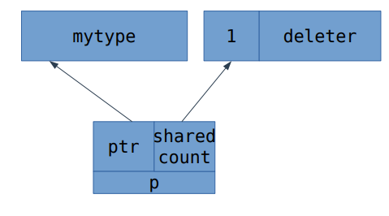

cpp-notes
Здесь собраны конспекты и ссылки на записи лекций курса по C++ студентам y2019 кафедры КТ в университете ИТМО.
Лектор - Иван Сорокин
Конспекты содержат баги, поэтому не стесняйтесь вносить правки.
Помимо лекций, конспекты включают в себя дополнения из конспектов @sorokin и @hazzus
Дополнительные лекции
Полезные ссылки:
Презентации и ссылки по материалу:
- Презентация про ассемблер
- Презентация про процессор и оптимизации
- Презентация про интрузивный список
- Презентация про shared_ptr
- Справочник по инструкциям x86, nasm документация
- Системные вызовы Linux
- Про страничную адресацию
- Презентация с ЭВМ про виртуальную память
Введение в ассемблер
Основные регистры и команды
Регистр IP (instruction pointer) содержит адрес команды.
- 16-битные регистры (8 штук): AX, CX, DX, BX, SP, BP, SI, DI
- 8-битные регистры (тоже 8): AL, AH, BL, BH, CL, CH, DL, DH. AL + AH = AX, аналогично другие.
- 32-битные регистры: EAX, и другие обычные с приставкой E - extended

Команды read, write
read (address)
write (address, value)
Команда mov
Команды для хранения в памяти кодируются:
89 C2 mov edx, eax ; EDX = EAX
B8 05 00 00 00 mov eax, 5 ; EAX = 5
mov может копировать содержимое памяти по адресу:
mov ax, [10] ; Переместить в регистр из памяти по адресу 10
mov ax, [bx] ; Переместить в регистр из памяти по адресу в BX
mov [bx], ax ; Переместить в память по адресу BX содержимое AX
mov [bx], [ax] ; WRONG! из памяти в память нельзя. Оно даже не скомпилируется
Забавный факт: [ax] невалидный адрес, больше можно почитать здесь
Команда mov ax,[bx] читает из ячейки с адресом BX и BX + 1:
AX = mem[BX + 1] * 256 + mem[BX]
Команды арифметики
cmd dst, src
add ax, cx ; AX = AX + CX
sub ax, cx ; AX = AX - CX, аналогично AND, OR, XOR
inc ax ; AX += 1
inc BYTE [bx] ; INC одного байта
inc WORD [bx] ; INC числа из двух байт (дальше DWORD и т.д.)
dec ax ; AX -= 1
neg ax ; AX = -AX
not ax ; AX = ~AX(побитово)
mul src ; unsigned, в пару DX:AX = src*AX, DX - старшая часть, AX - младшая
imul src ; signed
div src ; unsigned, AX = DX:AX / src, DX = DX:AX % src
idiv src ; signed
Перед делением 16-битного зануляем регистр DX:
xor dx, dx ; не "mov dx,0", так как кодируется короче
div bx
cwd ; сохраняет знак: берёт старший бит из AX, заполняет им DX
idiv bx
При этом в команде DIV если частное не помещается в AX, то это такая же ошибка, как деление на 0
Команды сдвигов
shl - Сдвиг влево
shr - Логический сдвиг вправо (бит знака теряется)
sar - Арифметический сдвиг вправо (сохранение знака)
Оптимизации компилятора:
g++ -O2 -S -masm=intel s.cpp -- посмотреть ассемблированный код с оптимизацией.
Онлайн компилятор-дизассемблер: https://godbolt.org/. Можно поиграться с такой функцией и посмотреть на оптимизации компилятора:
int foo(int a, int b) {
return a + b; // использует lea вместо add
// a - b использует sub
}
Команда LEA
lea ax, [bx]
; в [] не только регистр, мб арифметическое выражение из них
LEA записывает в dst выражение из [ ] (как "mov src,[dst + ...]", но пишутся не данные по адресу, а сам адрес).
Также LEA может использоваться вместо ADD:
lea ax, [ax + 8]
add ax, 8
Эти две строки делают одно и тоже, только выполняются на разных блоках конвейера, а еще lea не трогает флаги, в отличие от add.
Подробнее здесь (первые 2 ответа).
Как избегается оптимизируется деление:
Деление занимает много больше тактов, чем другие арифметические операции, а во время его вычисления весь конвейер стоит. Компиляторы стараются избегать операции деления, если это возможно.
Следующий код на C++:
unsigned foo(unsigned a) // беззнаковый тип
{
return a / 2;
}
Может быть оптимизирован компилятором до
mov eax, edi ; Аргумент находится в edi
shr eax ; Логический сдвиг вправо, второй аргумент по умолчанию 1
ret
Со знаковым аргументом деление скомпилится так:
mov eax, edi
shr eax, 31 ; Оставляем старший бит (знак)
add eax, edi ; Если число отрицательное, то добавляем 1 (чтобы при a=-1 всё работало)
sar eax ; Арифметический сдвиг вправо на 1 бит
А что будет с unsigned делением на 3? А оно скомпилится вот так:
mov eax, edi
mov edi, 2863311531 ; 0xAAAAAAAB или 2^33/3
imul rax, rdi
shr rax, 33
Почему это лучше? Деление дорогое, а константу можем посчитать при компиляции, получая выигрыш в эффективности.
Почему это работает? Потому что при арифметике с переполнением деление на константу можно выполнить через умножение:
a / 3 = (a * 2^33) / (3 * 2^33) = (a >> 33) * 2863311531
Команды перехода JMP и прочие
.loop: ; метка
inc ax
jmp loop ; как присваивание в регистр IP
JMP позволяет сделать бесконечный цикл
Основные условные переходы:
cmp ax, bx ; сравнить меняет регистр флага
je, jne - jump if (not) equal
jg, jng - jump if (not) greater (signed)
jl, jnl - jump if (not) less (signed)
ja, jna - jump if (not) above (unsigned)
jb, jnb - jump if (not) below (unsigned)
Регистры флагов (FLAGS Registers)
Большой (до 64 бит) регистр, каждый бит - какой-то флаг.
Выставляются после инструкций (CMP, арифметика и пр.)
ZF - zero flag ; если рез. 0
SF - sign flag ; если рез. отрицательный
CF - carry flag ; если рез. с битом переноса (для unsigned)
OF - overflow flag ; если рез. переполнился (для signed)
Есть команда ADC: dst = dst + src + CF
Отсюда другие команды перехода:
jc, jnc - jump if (not) carry flag
jz, jnz - jump if (not) zero flag
js, jns - jump if (not) sign flag
jo, jno - jump if (not) overflow flag
jb, jc - jump if carry flag
ja - jump if not carry flag && not zero flag
jl - OF != SF
jg - OF == SF && !ZF
Флаги для cmp a,b:

Многие команды расставляют флаги, выполняя операцию:
cmp- сделать вычитание, но не записывать результатtest- побитовый &, но не записывает результат
test ax, ax ; проверка на 0
jz L2
Пример программы с метками и прыжками:
.loop:
mov dx, ax
add ax, bx
mov bx, dx
dec cx
jnz loop
Вызов функций и выход из них
Заходим в функции и выходим из них в порядке стека.
Есть специальный регистр SP, который указывает на вершину стека.
Стек - от старших адресов к младшим.
push src ; SP -= 2, так как 2 байта. mem[SP] = src
pop src ; tmp = mem[SP], SP += 2, dst = tmp
Команды работы со стеком. Стек позволяет сохранять старые значения, которые необходимо вернуть:
call label ; вызов ф-иии
ret ; выход из ф-ии
; по своей сути эти строки равносильны:
push next_instr
jmp label
...
pop tmp ; return к следующей инструкции
jmp tmp
ABI
ABI - application binary interface.
Программе нужно вызывать какие-то функции операционной системы. ABI - набор соглашений для доступа приложений к операционной системе, там прописано всё про функции и прочее, в том числе размеры типов данных.
Выделение памяти:
void f(char const*);
void g()
{
char arr[113];
f(arr);
}
Компилируется в:
g():
sub rsp, 136
mov rdi, rsp
call f(char const*)
add rsp, 136
ret
К локальным переменным обращаемся через rsp, лежат на стеке. Размер стека - переменная на уровне операционной системы (вроде).
Обратим внимание на то, что если изменить размер массива на 112, то этот код скомпилируется в:
g():
sub rsp, 120
mov rdi, rsp
call f(char const*)
add rsp, 120
ret
Почему 136 изменилось на 120? Этот эффект называется выравниванием (alignment).
В качестве основной единицы работы с памятью используется машинное слово, размер которого обычно составляет несколько байт. Так называемый "unaligned access" сложен в реализации на аппаратном уровне, поэтому обращения по произвольному адресу либо не поддерживаются (и вызывают исключение процессора), либо поддерживаются, но работают медленно. Обычно компилятор выравнивает данные по границам машинных слов, в нашем случае 8 + 16 * k.
ОС, процессор и память
Прерывания
Почему программа с вечным циклом не повесит нам весь компьютер, даже если у нас всего одно ядро? Как ОС работает с устройствами? Всё это завязано на перерываниях.
Что происходит при прерывании:
- Значения регистров текущего процесса дампаются в оперативную память
- Подгружаются значения регистров другого процесса и исполнение передаётся ему
Такая схема называется вытесняющей многозадачностью.
Способы прерывания на устройства:
- Polling - процессор сам опрашивает устройства, когда считает нужным.
- Interrupt (прерывание) - устройство само говорит об изменении, процессор вызывает обработчик прерываний.
Local timer interrupt - прерывания по таймеру, своё у каждого ядра ЦП.
ОС заводит таймер, таймер срабатывает, провоцирует прерывание и ОС получает управление в обработчике прерываний.
На самом деле, всё сложнее, потому что постоянно работающие таймеры это неэкономно, поэтому он, например, отключается, если на ядре ничего не исполняется.
Rescheduling interrupts - прерывания, используещиеся для перепланировки (миграции) процесса на другое ядро в целях распределения нагрузки. Реализованы с помощью IPI.
Про память
ОС реализует следующие принципы:
- hardware abstraction - мышка может быть подключена по-разному подключенной, но программе всё равно
- isolation process - программа не может повлиять на другие программы (записать в их память)
Это достигается следующим образом:
Физическая память - реальный модуль памяти (как на ЭВМ)
Виртуальная память - пространство памяти процессов, "то, что видит программа". Обращение по адресу памяти в программе - обращение по адресу в виртуальной памяти. Процесс преобразования из виртуальной в физическую называется трансляцией адресов и реализуется в специальном блоке процессора MMU
дальше везде рассматривается 32-битная система
Страничная адресация
Способ организации виртуальной памяти, при котором виртуальные адреса отображаются на физические постранично (обычно 1 страница = 4 КB).
Память процесса может лежать в физической памяти в любом порядке:

Адресация реализуется через PageTables.
Вместо массива на много элементов храним массив (каталог страниц) размера 1024 из указателей на массивы размерами по 1024 (таблицы страниц). Почему это удобнее? Некоторые таблицы можно не хранить, если нужно выделить не все.
Это выглядит как-то так:

 Для ускорения трансляции применяется специальный кеш TLB (Translation lookaside buffer).
Для ускорения трансляции применяется специальный кеш TLB (Translation lookaside buffer).
Подробнее можно прочитать тут: https://wiki.osdev.org/Paging
Механизм адресации на уровне процессора:
Пример адреса: Virtual adress - 0x123456789A
Младшие 12 бит виртуального адреса: смещение внутри страницы. Следующие 10 бит - индекс в таблице страниц, старшие 10 бит - индекс в каталоге страниц.
typedef uint32_t page_table_element;
typedef uint32_t virtual_address;
struct page_directory
{
uint32_t translate(virtual_address);
private:
page_table_element data[1024];
};
Альтернативы:
- Хеш-таблица: плохо взаимодействует с кэшем. Использовалась в PowerPC
Это всё было про 32-битную архитектуру. На 64-битной числа так красиво не сходятся. Используют следующее: добавляется ещё один уровень (можно и не один, на самом деле), массивы делают по 512.
Пример: процессор может транслировать только 48 бит (соответствует размеру дерева из уровней). Физической памяти - 39 бит. Почему? "Сколько пинов у процессора есть, чтобы обращаться к памяти, столько и бит". Остальные биты в 64-битном адресе заполнены одинаковыми значениями и мы их не используем.
В регистре CR3 хранится указатель на каталог страниц для процесса.
Про системные вызовы, стек вызовов и frame pointer
syscall - интерфейс взаимодействия процесса программы с ядром ОС. Например, это чтение/запись в файла/терминала, завершение программы с кодом ошибки и т.д.
rip - регистр, в котором хранится адрес исполняемой инструкции в памяти
main:
mov rdx, 42
push 43
push 44
call bar
bar:
sub rsp, 40
;
add rsp,40
ret
Как понять, кто вызывал функцию? (WIP)
Stack frame (кадр стека) - условная часть стека, принадлежащая вызванной функции. Содержит стековые переменные, адрес возврата и, опционально, описанный далее frame pointer
Компилятор умеет внедрять в файл специальную отладочную информацию: бесплатно по производительности, но занимает место в памяти.
Альтернатива: в скомпилированном коде при вызове функции обновляется stack frame pointer (указатель на кадр стека), таким образом кадры образуют односвязный список, а стек можно "раскрутить" (unwind).
Плюсы: без лишних телодвижений программа может узнать свой стек вызовов без отладчика. Минусы: при обильном вызове функций теряем в производительности.
rbp - регистр, который используется для указания на предыдущий кадр стека.
На https://godbolt.org можно посмотреть, что следующий код:
int foo(char const*);
int bar()
{
char arr[40];
return foo(arr) + 1;
}
с флагами -O2 -fno-omit-frame-pointer компилируется во что-то такое:
bar:
push rbp
mov rbp, rsp
sub rbp, 40
;
mov rsp, rbp
pop rbp
ret
Кэш-память
Optimize for data first, then code. Memory access is probably going to be your biggest bottleneck
Одинаково ли по времени будет работать следующий код?
for i = 0..n: for i=0..n:
for j=0..n: for j=0..n:
a[i][j] = 0 a[j][i] = 0
У этих двух кодов большая разница из-за процессорного кэша. Первый цикл обращается к памяти последовательно, а второй "скачет" по ней. Поэтому обращения к памяти первого цикла попадают в кэш, а второго - нет. С ростом N видна разница между уровнями кэша на графике времени обработки одного элемента:

Небольшие пики - скачки из-за попадания в один бакет (заметно на степенях двойки), сильное изменение времени работы происходит, когда данные перестают попадать в кэш какого-то уровня.
Кэш реализован через хэш-таблицы (дискретного размера), где ключ - адрес в памяти. Линии кэша примерно по 64 байта разделенные на группы (buckets), размеры которых называются ассоциативностью кэша.
Подробнее про кэш можно прочитать в конспектах по ЭВМ
Prefetching - если много кэш-промахов, запрашиваем заранее подгрузить в кэш. Это работает на уровне кэш-подсистемы процессора, а не компилятора/ОС.
Пример: хранение хэш-таблицы с открытой адресацией. Два варианта:

-
Если ожидаются частые попадания, то хранить полезнее данные рядом с ключом.
-
Если ожидаются редкие попадания, то лучше хранить ключи и данные отдельно.
TLB - translation lookaside buffer
Зачем нужен? Это кэш для ускорения трансляции виртуального адреса в физический. Так же, как и обычный, может быть нескольких уровней.
Huge Pages
Идея: отображать страницу памяти в лежащую подряд физическую память. Тогда проще обходить каталог страниц. Например, если программе нужно прочитать 1 Мбайт непрерывных данных, которых нет в TLB кэше, то нужно сделать обращение к 256 страницам.
Но использовать тяжело, так как с ними тяжело делать swap (подкачка страниц). Например, в Windows требуются специальные права, чтобы выделять не-swappable память.
Swap - хотим выделить памяти больше, чем у нас есть физической (оперативной). Особенно было актуально раньше, когда оперативной памяти было мало. Некоторые страницы из оперативной памяти записывались на диск и помечались недоступными, но при необходимости можно было вытеснить другую страницу и выгрузить нужную с диска.
Конвейер (Pipelining)
Ну тут опять всё как было на ЭВМ.
Разбили выполнение команды на несколько стадий, теперь можем повысить частоту, так как каждая стадия стала проще. Выигрыш в том, что можем давать новые данные на каждом такте.
Спекулятивное исполнение: условные переходы дорогие, поэтому мы предсказываем переход, выполняем, а если не угадали, то откатываемя. В общем, ничего нового. Также это называется branch prediction. Можем как выиграть, так и проиграть от этого. Например, в некоторых программах на отсортированном массиве предсказание может улучшить время работы в несколько раз.
Полезно писать программу так, чтобы уровень зависимостей команд был как можно меньше (это может также пытаться делать компилятор). Например:
int f(int a, int b, int c, int d)
{
return a * b * c * d;
}
может скомпилиться в следующий код, чтоб уменьшить количество зависимых умножений:
(a* b) * (c * d)
imul edi, esi
imul edx, ecx
imul edx, edi
mov eax, edx
ret
Похожее происходит с циклами. Посмотрим на алгоритм Хаффмана:
void count_huffman_weights(char const* src, size_t size)
{
uint32_t count[256] = {0};
for (size_t i = 0; i != size; ++i)
++count[src[i]];
}
может быть разбит компилятором на параллельные исполнения. Так будут выглядеть зависимости:

Но у нас возникают проблемы из-за того, что мы пишем в одни переменные. Как пофиксить? Можем сделать 8 разных массивов-счетчиков. Такая реализация используется в библиотеке Zstandart
void count_huffman_weights_improved(char const* src, size_t size)
{
uint32_t count[8][256] = {};
size = size / 8 * 8;
for (size_t i = 0; i < size;)
{
++count[0][src[i++]]; ++count[1][src[i++]]; ++count[2][src[i++]];
++count[3][src[i++]]; ++count[4][src[i++]]; ++count[5][src[i++]];
++count[6][src[i++]]; ++count[7][src[i++]];
}
}
Полезные книжки по теме:
- J. Shen, M. Lipasti — Modern Processor Design: Fundamentals of Superscalar Processors
- J. Hennessy, D. Patterson — Computer Architecture: A Quantitative Approach
Синтаксическое пересечение C и C++
Типы данных
Целочисленные:
signed int // по умолчанию тип знаковый, то же самое, что и int
// типы и их беззнаковые варианты:
short unsigned short
int unsigned
long unsigned long
long long unsigned long long
Стандарт не приписывает конкретных размеров типа, гарантирует только, что не меньше. Размеры типов прописаны в ABI архитектуры.
| типы | 32 bit | win64 | linux64 |
|---|---|---|---|
| short | 8 | 8 | 8 |
| short | 16 | 16 | 16 |
| int | 32 | 32 | 32 |
| long | 32 | 32 | 64 |
| long long | 64 | 64 | 64 |
8-битные типы
// это 3 разных типа, в отличие от int и signed int
char // может быть как знаковый, так и нет
unsigned char
signed char
Как проверить, одинаковые ли типы? Перегрузить функцию.
void foo(int){}
void foo(signed int){} // не скомпилируется, так как две функции с одинаковой сигнатурой
void foo(char){}
void foo(signed char){} // скомпилируется
Существуют типы с фиксированным размером: Следует использовать их, если хотим тип гарантированного размера:
#inlcude <cstdint>
int8_t uint8_t
int16_t uint16_t
int32_t uint32_t
int64_t uint64_t
arr[i]; // какого типа нужно брать i?
#inlcude <cstddef> // в ней лежат нужные типы
size_t - тип, размера которого хватит, чтобы хранить максимальный размер;
он unsigned (размер на 32bit - 32, на 64bit - 64), у sizeof(...) тип size_t.
ptrdiff_t - тип для разности двух указателей (signed)
Как выбирать целочисленный тип:
- если данные приходят из существующей функции или уходят в неё, то используем тот же тип, что там.
- если используется как размер или индекс в контейнере -
size_tиptrdiff_t. - если знаем, оцениваем размер.
Типы с плавающей точкой:
| тип | размер (обычно) |
|---|---|
| float | 32 |
| double | 64 |
| long double | 64/80 |
Разделение на мантиссу и экспоненту фиксировано в стандарте IEEE-754
Подробнее на викиконспектах - про денормализованные числа, nan, inf и всё такое.
Стоит заметить, что из-за особенностей чисел с плавающей точкой (из-за nan и inf) всякие 0 * a и a - a не заменяются при компиляции на 0.
А ещё сравнения с nan это всегда false, поэтому нужно быть аккуратнее.
David Golberg, What Every Computer Scientist Should Know About Floating-Point Arithmetic
Структуры и указатели:
- Структура
struct point {
float x;
float y;
float z;
};
// обращение к полям:
void f (point p) {
p.x = 5;
}
Данные структуры хранятся подряд (с точностью до выравнивания).
Интересное про sizeof от структуры
А ещёsizeof возвращает столько, сколько структура занимает, когда она лежит в массиве.
- Указатель - "номер ячейки памяти" (важно указывать, какой тип, но эта информация используется на уровне компилятора). Все указатели имеют одинаковый размер - битность системы.
int a;
int *a;
long *a;
int *p = &a; // & - взятие адреса
*p = 42; // * - разыменования указателя
// обращение к полям структуры по указателю:
void f (point* p) {
(*p).x = 5;
p->x = 5; // эквивалентно
}
- Массивы
int* a[10]; // массив указателей
char buf[4096];
char* p = buf; // неявное приведение массива к указателю на первый элемент
Функции, принимающие массив фиксированного размера лучше не писать, компилятор все равно изменит на применяющую указатель.
void f(int a[10]){}
// компилируется в
void f(int* a){}
Арифметика указателей
int *p;
int n;
p += n; // добавить к указателю
p -= n; // вычесть из указателя
ptrdiff_t ans = p - q // разность указателей - количество элементов между ними (знаковое)
for (int* p = a; p != a + 10; ++p)
int* b[10]; // массив указателей
int (*b)[10]; // указатель на массив, приоритет показываем скобками
Суффиксные модификаторы имеют больший приоритет.
Указатели на функции:
int* f () {} // функция возвращает указатель
int f(int);
int (*g)(int) = &f; // указатель на функцию f, сработает и без &
g(5); // можно вызывать указатель на функцию, как функцию.
// пример использования: передавать компаратор в sort
Разное про указатели:
int a[50];
int* p = a;
p[20] = 5; // *(p+20) = 5
20[p] = 5; // так тоже можно, но не нужно
// Указатель на void может хранить
// любой другой указатель(другого типа)
Мем про switch:
void f(int a) {
switch(a) {
case 1:
printf("1");
if (false)
case 2:
printf("2");
if (false)
case 3:
printf("3);
}
}
Код работает корректно, но писать так не надо.
lvalue, rvalue
int a;
(a + 1) = 42; // почему не скомпилится?
lvalue - то, что может стоять слева от оператора присваивания.
rvalue - "временные объекты", им нельзя что-то присваивать.
Например, a - lvalue, (a+1) - rvalue.
&a; // валидно
&5; // невалидно, так как 5 - rvalue
&&a; // нельзя, так как &a - rvalue
++a; // увеличивает и возвращает по ссылке
a++; // возвращает копию, а потом увеличивает исходное
a++++; // так нельзя, так как a++ - rvalue
++++a; // в C++ так можно, так как ++a - lvalue, в C так нельзя
++a++; // суффиксный оператор имеет приоритет, поэтому не компилируется (как ++(a++))
+++a; // первые ++ отдельно парсятся и это не компилится
(a = 5) = 6; // так можно, так как оператор = возвращает lvalue
a = b = c; // равносильно a = (b = c)
Приведение типов:
Приведение происходит к более "общему типу":
5; // int
5L; // long
5LL; // long long
'5'; // char
'5' + 1; // int
'5' + '6'; // int
1+2L; // long
1 + 1u; // unsigned

Процесс компиляции программ

Классическая схема этапов компиляции. Есть похожая статья на хабре.
Preprocessing
g++ -E -P 1.cpp -o 1.i
Выполняет директивы (#define, #include и другие).
#include - вставляет текст из указанного файла
#define - задает макрос
Translation
g++ -S -masm=intel 1.i -o 1.s
Трансляция кода в ассемблер.
Assembling
g++ -C 1.s -o 1.o (либо as ...)
Транслирует ассемблерный код в машинный код.
*.o - объектный файл
Linking
g++ 1.o -o program (либо ld ...)
Связывает все объектные файлы и библиотеки в один исполняемый файл.
После этого этапа можно запускать ./program.
*.cpp файлы так же называют единицами трансляции
Пример линкования файликов:
// a.cpp:
int main() {
f();
}
// b.cpp:
#include<cstdio>
void f() {
prinf("Hello world");
}
Это не скомпилится, так как на этапе до линковки компилятор не знает о существовании f() где то вне a.cpp, поэтому ее надо объявить:
// a.cpp:
void f();
int main() {
f();
}
// b.cpp:
#include<cstdio>
void f() {
prinf("Hello world");
}
Для линковки вместеg++ a.o b.o
- Функцию нужно объявлять до её вызова.
- Если в обеих программах есть main, то невозможно будет слинковать (какой main запускать?)
- В main можно не делать
return, по умолчанию вернёт 0. - Можно писать функцию на ассемблере и вызывать из
*.cppфайла, потому что на этапе линковки нет разницы. - Во всех единицах трансляции только одно определение.
- Функцию нужно объявлять до её использования. Если она описана ниже, то транслятор не увидит её и кинет ошибку.
Некоторые ключевые слова
static - переменная или функция - "не предоставляется наружу", видна только в одной единице трансляции. При этом если в другой единице есть функция с такой же сигнатурой, но в текущей единице она static, то не будет проблемы с multiple definition, а в текущей единице трансляции выберется static.
Для функций void f(); это объявление (declaration), а void f(){} -- определение (definition).
Для переменных немного иначе:
int a - определение
extern int a - объявление (означает, что переменная объявлена где-то снаружи).
Глобальные переменные инициализируются нулями при определении, в отличие от локальных.
Можно заметить, что при линковке нам не важно, откуда приходят функции, исходный код одной из единиц трансляций может быть сразу на ассемблере:
extern "C" uint32_t fibonacci(uint32_t n);
// определена, например, в .s файле, но должны выполняться calling conventions
extern "C" f - использовать СИшное имя функции. На имена функций можно посмотреть так: nm a.o, nm -C a.o.
В Си имя функции выглядит как f, в C++ как _Z1fd, где d - типа аргумента, который она принимает (тут double).
Это связано с тем, что в Си нет перегрузки функций, поэтому там имена функций не декорируются типами их аргументов.
У функций с разными сигнатурами, но помеченных как extern "C", после компиляции не будет информации об типах их аргументов, поэтому это даже слинкуется, но работать не будет (ну либо будет, но тут UB, так как, например, типы аргументов ожидаются разные).
Возьмём теперь объявление printf из cstdio и вставим его вручную:
extern "C" int printf(const char*, ...);
int main() {
printf("Hello, world!");
}
Такая программа тоже работает. Откуда берётся printf? Ответ кроется в том, что при компиляции командой g++ -c b.cpp вызывается команда линковки ld с ключом, из-за которого файл линкуется с объектными файлами из стандартной библиотеки. Если посмотреть, то можно заметить, что наш файл линкуется с несколькими другими
объектными файлами, один из которых содержит функцию _start (это может быть файл crt1.o), которая вызывает main.
Headers
2.h - файлы не участвующие в компиляции, в них пишут объявления функций. Не нужно делать #include file.cpp, а в .h не нужно определять функции.
Зачем это нужно? Как сказано выше, во всех единицах трансляции может быть только одно определение функции, потому что иначе получим redefinition error, так как компилятор не сможет выбрать из нескольких определений функции одно. Поэтому делаем на все единицы трансляции одно определение в .cpp файле, в хедерах объявления. Теперь, когда мы будем инклудить хедеры в другие единицы трансляции, у нас будет в них появляться только объявление функций из хедера.
Структуры/классы пишем в .h. При этом их методы можно определять там же, потому что они воспринимаются компилятором как inline.
Посмотрим на то, как работает #include:
// x.h:
struct x {};
// y.h:
#include "x.h"
// z.h:
#include "x.h"
a.cpp:
#include "y.h" --> struct x{};
#include "z.h" struct x{}; //ошибка компиляции
Решение:
#include "x.h"не писать в хедерах, а только по необходимости в .cpp (не очень решение)-
Это решение называется include guard Тогда при// x.h: #ifndef X_H #define X_H // - макрос struct x{}; #endif#include x.hбудет проверка, заинклудили ли его уже и не будет проблем. - Директива
#pragma once- стандарт не поддерживает, но поддерживают, кажется, все компиляторы. Эффект как у include guard, но проще писать и нет проблемы с тем, что можем еще где-то сделать лишний#define X_H
Если меняется header, то необходимо перекомпилировать все файлы, которые подключают его (даже не непосредственно), что может быть неприятно.
#define PI 3.14
// препроцессор подставляет вместо PI 3.14
Макросы обычно пишут капсом
Про структуры
Хотим две структуры в разных хедерах a.h и b.h. В структуре a указатель на структуру b и наоборот.
// main.cpp:
#include "a.h"
#include "b.h"
Если в a.h инклудится b.h и наоборот, то получим ошибку во время компиляции. Как фиксить?
Если нам не требуется знать, что находится внутри структуры, можно использовать forward declaration. Например, a.h будет выглядеть так:
struct b;
struct a {
b* bb;
};
Важно: избегайте циклических инклудов, чаще всего это приводит к ошибкам.
Пока структуру не определили, структура - это incomplete type. Например, на момент объявление struct b; в коде выше, b - incomplete.
Все, что можно с ними делать - это объявлять функции с их использованим и использовать указатель.
Становятся полным типом после определения.
Бонусом с forward declaration получаем, что нужно меньше перекомпилировать, так как меньше инклудов.
А теперь такой пример:
// a.cpp
#include <iostream>
struct x {
int a;
// padding
double b;
int c;
int d;
}
int main(){
x xx = f();
std::cout << xx.a << " " << xx.b << " " << xx.c << " " << xx.d << "\n";
}
// b.cpp
struct x {
int a;
int b;
int c;
int d;
int e;
};
x f() {
x result;
result.a = 1;
result.b = 2;
result.c = 3;
result.d = 4;
result.e = 5;
}
Тут стоит вспомнить, что структуры при линковке не играют никакой роли, то есть линковщику всё равно, что у нас структура x определена в двух местах. Поэтому такая программа отлично скомпилируется и запустится, но есть одна проблема. В b.cpp определение функции f скомпилируется с учётом смещений в структуре, определённой в этой же единице трансляции, то есть будто там лежит 5 интов.
Поэтому следует придерживаться правила определять структуры один раз и не писать разные структуры с одним названием.
Inline
Компилятор сам умеет подставлять тело функций, но только внутри одной единицы трансляции (так как на момент трансляции у него нет функций из других единиц). Проблему с тем, что у нас не может быть больше одного определения функции во всех единицах трансляции, решает следующий модификатор:
inline - рекомендация компилятору заинлайнить функцию (подставить её тело). Их нужно определять в хедере и инклудить во все единицы трансляции, где нужно их использовать. На самом деле, современные компиляторы почти всегда игнорируют изначальный смысл inline. У компиляторов есть свои эвристки (размер функции, насколько упростится код и т.д.), по которым он считает, насколько функцию выгодно подставить. Поэтому inline пользуются только из-за следующего свойства: для функции, помеченной inline, возможно повторное определение, линковщик в таком случае оставляет только одно, предполагая, что они все одинаковые.
Сейчас у компиляторов есть такая вещь, как link time optimization (ключ компиляции -flto). Компилятор не пытается генерить код на стадии трансляции, генерит там только внутренний промежуточный код, его же записывает в объектные файлы, а затем на стадии линковки инлайнит функции между единицами трансляции и генерит настоящий код. В таком случае линковка может занимать много времени, поэтому применяется при сборке с оптимизациями.
Если у inline функции несколько разных определений, то линковщик выберет произвольное из них (например, из первой единицы трансляции или вообще разные в разных местах), поэтому нельзя нарушать правило одинаковых определений для inline функций.
Если нужно именно заинлайнить функцию, то есть нестандартизированные модификаторы типа __forceinline, однако даже они могут игнорироваться компилятором. Инлайнинг функции может снизить производительность, на эту тему можно послушать доклад Антона Полухина на C++ Russia 2017.
Классы, абстракция данных
Структуры
С помощью структур можно создавать свои типы. У структуры есть поля и методы. У полей и методов есть модификаторы доступа public, private, protected. По дефолту все поля и методы структуры - public.
Классы отличаются от структур только тем, что в классах по умолчанию все private, а в структурах public. Далее всё будет называться классами.
К полям класса можно обращать сразу через указатель на экземпляр:
complex * c;
c->im // то же самое, что (*c).im
В отличие от языка C, в C++ можно объявлять методы у структур.
struct complex {
void conjugate() {
im = -im;
}
private:
double re;
double im;
};
Чем отличается метод внутри класса от такой функции?
void conjugate(complex* c) {
c->im = -c->im;
}
-
У метода есть неявный параметр - указатель
thisна текущий экземпляр. -
Метод имеет доступ к приватным полям, внешняя функция - нет.
Что должно быть private, а что public?
Инвариант класса - сохраняющиеся свойства класса. Например, инварианты структуры данных.
То, что может испортить инвариант класса, должно быть private.
Проверять инварианты можно ассертами (assert), но не стоит злоупотреблять ими, потому что это дорого, лучше делать это при дебаге и тестировании.
Обычно пишут объявления функций в class.h, а определения в class.cpp. Если определение функции сделано внутри класса, то она неявно помечается как inline, но мы не всегда хотим этого (дольше время компиляции из-за зависимостей и т.д.).
// struct.h:
struct complex {
void conjugate();
private:
double re;
double im;
}
// struct.cpp:
void complex::conjugate(){
im = -im;
}
Как гарантировать какие-то свойства у объекта, который только создан? Это можно реализовать с помощью конструктора.
Конструкторы
Классы можно создавать через конструкторы.
struct complex {
complex(re, im) {
this.re = re;
this.im = im;
}
complex() { // конструктор по умолчанию
this.re = 0;
this.im = 0;
}
void conjugate() {
im = -im;
}
private:
double re;
double im;
};
void f(complex);
int main() {
complex c; // вызывается конструктор по умолчанию
complex d(1., 2.);
f(complex(1., 2.));
}
Если в классе есть конструктор от одного аргумента, то может происходить неявное приведение типов (например, big_integer a = 42, если есть конструктор, который принимает int). Чтобы подавить такое поведение, конструктор нужно объявить с модификатором explicit.
Так же существуют деструкторы, освобождающие ресурсы при удалении объекта. Они вызываются когда объект выходит из "зоны видимости":
~string() {
free(data);
// ...
}
void foo() {
string S;
} // вызовется деструктор S при выходе из функции
Немного про const и указатели
Ключевое слово const - неизменяемое. Относится к тому типу, который стоит слева от него.
int const PI = 3;
int const* q = &PI;
// int* q = &PI; - кинет ошибку
*q = 4;
int* a; - указатель на int
int const* b; - указатель на константный int
int* const b; - константный указатель на int
int const* const c; - константный указатель на константный int
int a = 42;
int const* p = &a; // так тоже можно, но по этому указателю нельзя будет писать
В функцию, которая принимает указатель, нельзя передать указатель на const, а наоборот - можно.
Поэтому у аргументов функции полезно не забывать const, если функция не меняет принимаемый аргумент.
Константными могут быть не только стандартные типы,
У константных объектов можно вызывать только методы, помеченные const:
struct complex {
//...
double real() const {
&re; // имеет тип double const *, так как метод const
return re;
}
}
int main(){
complex const c(1.1, 2.2);
c.re = 42; // так нельзя, так как у const структуры все поля const
c.conjugate(); // так нельзя
c.real(); // так можно
}
Операторы
cppreference: operator overloading
В C++ есть возможность определять собственные операторы для классов:
complex operator+(complex a, complex b) {
return complex(a.re + b.re, a.im + a.im)
}
Если вы пишете какой то оператор, то хотя бы один из его элементов должен быть пользовательским типом (нельзя переопределить оператор для int, int, но можно, например, для vector и int).
Еще пример:
complex operator+=(complex a, complex b) {}
Мы такое сделать не можем, так как нужно поменять а, то есть передать его по указателю: &a += b, что не очень естественно.
Сделать такое можно, используя ссылки:
| указатель | ссылка |
|---|---|
int* p = &a; | int& r = a; |
*p = 5; | r = 5; |
int *pp = p | int* pr = &r; |
p->foo | p.foo; |
p = &b; | // нельзя перенаправить |
Нужно делать так:
complex& operator+=(complex &a, complex b) { // возвращает ссылку, так что можно присвоить куда-то результат a += b;
// поэтому можно (a += b) += c;
return a = a + b;
}
Если мы принимаем экземпляр класса и нам не нужно его менять, можно передавать его по константной ссылке, тогда мы избегаем лишних копирований (в отличие от передачи по значению):
std::ostream& operator<<(std::ostream& os, complex const& a) {
os << a.real << " + " << a.im << "i";
return os;
}
Если функция принимает const&, то в неё можно передавать временный объект (rvalue). Если же она принимает обычную ссылку, то только lvalue.
Аналогично возвращая по ссылке, возвращаем lvalue, а по значению rvalue.
Перегрузка операторов внутри класса и снаружи:
Операторы можно перегружать как функции (снаружи класса) и как методы (внутри класса). Соответственно, у операторов, перегруженных как методы, первым аргументов будет неявный this.
У операторов может срабатывать неявное приведение типов (если есть не explicit конструктор). При этом если оператор перегружен как функция, то приводится любой из аргументов, а если как метод, то только правый.
Примеры:
// как методы:
struct A {
A (int a); // не explicit конструктор
A operator-() const; // -(*this)
A operator-(A const& w) const; // (*this) - w, нельзя вызвать (2-v)
}
// как функции:
A operator-(A const& v);
A operator +(A const& v, A const& w);
// можно вызвать как (2-v), так как есть не explicit конструктор от int
Можно делать аргументы оператора другого типа но тогда его нужно перегрузить как функцию, если первый аргумент другого типа.
Vector operator*(double d, Vector const& v);
Некоторые операторы необходимо перегружать только внутри класса: (type), [], (), ->, ->*, =.
Вот так перегружается оператор (), заметьте, что можно сделать это для разного количества аргументов:
bool operator()(double d) const;
void operator()(double a, double b);
Пример инкремента и декремента:
Чтобы отличать их, постфиксный перегружают с неиспользуемым (dummy) параметром типа int. Когда вызывается постфиксный оператор, всегда передаётся аргумент, хотя можно и вручную вызвать оператор как функцию и передать любое значение:a.operator++(2).
struct big_integer {
big_integer & operator++() { // prefix
// ...
return *this;
}
big_integer operator++(int) { // postfix
big_integer tmp(*this);
++(*this);
return tmp;
}
}
Пример оператора приведения в стиле C:
struct String {
operator bool() const { // приведение к bool
return size_ != 0;
}
operator char const*() const { // приведение к char const*
if (*this) {
return data_;
} else {
return "";
}
}
// ...
}
Аналогично можно перегружать и касты в стиле C++ (static_cast и др.).
У операторов приведения, как и у конструкторов, можно указывать модификатор explicit и запрещать неявное приведение.
Некоторые ограничения:
- Оператор
->должен возвращать указатель или объект класса, для которого он переопределён (по ссылке или по значению). - Операторы
&&,||при перегрузке теряют своё специальное поведение и ведут себя как обычные функции. - Операторы
+=и подобные лучше перегружать внутри класса, а+снаружи через+=. Тогда для+будет работать приведение типов. - Операторы сравнений стоит определять одновременно и согласованно: если определили какой-то один из них, принято определить и все остальные так, чтобы они не противоречили друг другу.
- Хорошим тоном считается соблюдать стандартный смысл операторов: не перегружать оператор
+как умножение. - Приоритет операторов остаётся стандартным.
Про указатели и массивы
int a[10]; // массивы - полноценные типы
int* p = a; // неявно приводится в указатель на тип элемента массива
int b[10] = a; // так не работает, массивы нельзя копировать
void f(int c[10]); // то же самое, что void f(int* c);
int const a[10]; // константный массив константных элементов, не может быть константно что-то одно из них
void f(int const (*p)[10]); // массив по указателю
void f(int (&c)[10]); // массив по ссылке
Если функция принимает массив: void f(int a[10]), то на самом деле она принимает int * и длина игнорируется.
Но если функция принимает указатель на массив: void g(int (*p)[10]), то она принимает указатель на массив длины 10. Все размерности, кроме внешней, должны быть определены, так как являются частью типа элемента.
Важно: int *p[10] - массив указателей, int (*p)[10] - указатель на массив длины 10.
Ещё немного про классы
Special member функции
Такие функции компилятор сгенерирует сам, если не написать их.
-
Default constructor - конструктор без аргументов.
-
Destructor - вызывается при выходе из области видимости, используется для освобождения ресурсов. Вызываются в обратном порядке по отношению к порядку вызовов конструктора.
~my_string() {
free(data_);
}
-
Copy constructor - конструктор копирования:
my_string(my_string const& other) { size_ = other.size_; capacity_ = other.capacity_; data_ = (char*)malloc(size_ + 1); memcpy(data_, other.data_, size_ + 1); } -
Assignment operator - оператор присваивания, похож на конструктор копирования, но не создает объект, а меняет уже существующий.
Поэтому вmy_string bb = a;вызывается конструктор копирования, так как объектbbещё не создан.
my_string& operator=(my_string const& other){
if (this != &other) {
// важно проверить, что не присваиваем a = a
// иначе почистим data_ у себя же
free(data_);
size_ = other.size_;
capacity_ = other.capacity_;
data_ = (char*)malloc(size_ + 1);
memcpy(data_, other.data_, size_ + 1);
}
return *this;
}
Special member функции позволяют реализовать поведение пользовательским типам аналогично стандартным типам (присваивание, копирование), поэтому если они не написаны, то их генерирует компилятор по следующим правилам:
-
Default constructor - генерируется пустой, если нет других конструкторов.
-
Destructor - генерируется пустой, если не написан.
-
Copy constructor - генерируется, если не написан. Сгенерированный автоматически копирует все поля класса, при этом все члены класса копируются не побайтово, а с вызовом их конструкторов копирования.
Дефолтный конструктор копирования будет копировать указатели без выделения новой памяти. Так, например, у двух объектов
my_stringбудут одинаковые указатели наdata_и при выходе из области видимости, оба деструктора вызовутfree(data_). -
Assignment constructor - генерируется, если не написан.
Как запретить копирования и присваивания?
my_string& operator=(my_string const&) = delete;
my_string(my_string const&) = delete;
Также можно явно создать дефолтный конструктор (например, если есть уже какой-то другой и из-за него дефолтный не сгенерируется):
my_string() = default;
my_string(my_string const&) = default;
Так ещё может быть полезно писать, чтобы явно документировать, что дефолтный подходит.
Отличается ли чем-то пустой конструктор от дефолтного? Пустой конструктор - это user-defined конструктор. Класс с default конструктором - это trivially constructible. Для них, например, при создании массива не будут вызываться конструкторы.
Если = default писать в определении в какой-нибудь из единиц трансляции, то другие единицы трансляции во время компиляции не знают, что класс trivially constructible и не используют это.
Cписки инициализации у конструкторов
Перед исполнением кода конструктора, вызываются дефолтные конструкторы у всех полей класса. Списки инициализации позволяют заменить вызов дефолтного конструктора поля на вызов конструктора с аргументами.
person() : name("Ivan"), surname ("Sorokin") {
// ...
}
Хорошее правило - порядок инициализации такой же, как порядок объявления полей, потому что вне зависимости от написанного порядка, они будут инициализироваться в том порядке, в котором объявлены.
Кроме того, конструкторы можно делегировать:
person() : person("Ivan", "Sorokin") {
// сначала вызовет конструктор от двух char const*, а затем будет выполнять тело это конструктора
}
Выделение памяти
void f(person const& p);
itn main() {
person p; // выделяется на стеке, удалится после }
f(person("Ivan", "Sorokin")); // temporary объект, удалится после ;
}
malloc, free
void * p = malloc(42); // выделяем 42 байта
free(p); // чистит память, выделенную по указателю p
free(p); // так делать не нужно
p = nullptr;
free(p); // так можно, ничего не произойдет
new, delete
В большинстве реализаций new внутри вызывает malloc и на выделенной памяти вызывается конструктор. delete, соответственно, вызывает деструктор и free.
person* p = new person("Ivan", "Sorokin");
dlete p;
person* p = new person[10]; // выделяет память на 10 объектов person и вызывает их дефолтные конструкторы
delete[] p; // если new вызывался с [], то нужно delete[]
new T; // оставляет неинициализированную память, если trivially constructible
new T(); // вызывает конструктор
Препроцессор
#define
#define PI 3.14159265
double circumference(double r) {
return 2 * PI * r;
}
Здесь директива #define определяет макрос с именем PI. Текст, который идет после имени макроса, называется replacement. Replacement отделяется от имени макроса пробелом и распростроняется до конца строки. Все вхождения идентификатора PI ниже этой директивы будут заменены на replacement. При этом препроцессор смотрит целиком токены и не будет заменять, например, часть названия переменной. Результатом препроцессирования примера выше является следующий текст:
double circumference(double r) {
return 2 * 3.14159265 * r;
}
Приведенная выше форма директивы #define называется object-like. Существует вторая форма этой директивы, называемая function-like:
#define MIN(x, y) x < y ? x : y
printf("%d", MIN(4, 5));
Результатом препроцессирования этого фрагмента кода является:
printf("%d", 4 < 5 ? 4 : 5);
Важно понимать, что препроцессор, выполняя подстановки макросов, ничего не знает про приоритет арифметических операций и синтаксическую структуру программы. Рассмотрим следующую программу:
#define MIN(x, y) x < y ? x : y
int main()
{
printf("%d", 10 + MIN(4, 5));
}
Данная программа выводит 5, тогда как скорее всего программист ожидал вывода 14. Дело в том, что после раскрытия макроса возникает выражение 10 + 4 < 5 ? 4 : 5. Поскольку бинарный + имеет приоритет выше, чем у тернарного оператора, данное выражение разбирается транслятором как (10 + 4) < 5 ? 4 : 5, а не 10 + (4 < 5 ? 4 : 5), как мог ожидать программист, использующий макрос. Чтобы избегать подобных проблем, у function-like макросов, которые раскрываются в выражение, replacement следует брать в скобки. По той же причине имена параметров макроса в replacement, следует брать в скобки. Корректный макрос MIN мог бы выглядеть следующим образом:
#define MIN(x, y) ((x) < (y) ? (x) : (y))
Директива #define позволяет определять макросы повторно, при этом, в каждой точке программы силу имеет последний #define данного макроса:
X
#define X foo
X
#define X bar
X
раскрывается в:
foo
bar
Replacement макроса не препроцессируется при определении макроса, но результат раскрытия макроса препроцессируется повторно:
#define Y foo
#define X Y
#define Y bar
X // раскрывается в bar
Что произойдет если replacement макроса M будет содержать использование макроса M? В этом случае возникает рекурсия. По спецификации препроцессор никогда не должен раскрывать макрос M изнутри самого себя, а оставлять вложенный идентификатор как есть:
#define M { M }
M // раскрывается в { M } один раз, второй раз M не раскрывается
Ещё пример:
#define A a{ B }
#define B b{ C }
#define C c{ A }
A
B
C
Результат препроцессирования:
a{ b{ c{ A } } }
b{ c{ a{ B } } }
c{ a{ b{ C } } }
#undef
Директива #undef позволяет разопределить макрос, определенный ранее с помощью директивы #define. Пример:
#define X foo
X
#undef X
X
Результат препроцессирования:
X
foo
X
#if
Директивы #ifdef, #ifndef, #if, #else, #elif, #endif позволяют отпрепроцессировать часть файла, лишь при определенном условии. Директивы #ifdef, #ifndef проверяют определен ли указанный макрос. Например, они полезны для разной компиляции:
#ifdef __x64_64__
typedef unsigned long uint64_t;
#else
typedef unsigned long long uint64_t;
#endif
Директива if позволяет проверить произвольное арифметическое выражение.
#define TWO 2
#if TWO + TWO == 4
// ...
#endif
Директива #if препроцессирует свой аргумент, а затем парсит то, что получилось как арифметическое выражение. Если после препроцессирования в аргументе #if остаются идентификаторы, то они заменяются на 0, кроме идентификатора true, который заменяется на 1.
Одно из применений #if - это include guard, которые уже обсуждались ранее.
Проблемы макросов
Основной сложностью см. также FAQ Бьярна Страуструпа на тему, почему макросы это плохо. при использовании макросов препроцессора является то, что препроцессор оперирует на уровне токенов, не зная ничего про контекст где макрос раскрывается. Предположим, что определен макрос errno, а где-то ниже программист пытается определить локальную переменную errno.
#define errno (*errno_location())
int process() {
int errno = 0;
}
Результатом препроцессирования этого фрагмента будет:
int process() {
int (*errno_location()) = 0;
}
Как мы видим получившийся в результате препроцессирования фрагмент не объявляет переменную errno. Этот фрагмент не объявляет вообще никакую переменную. В данном конкретном случае программист получит ошибку трансляции:
errno.cpp:5:17: error: function ‘int* errno_location()’ is initialized like a variable
int errno = 0;
^
Сообщение об ошибке ссылается на некоторую функцию int* errno_location(), которая в пользовательском коде не упоминается. Такие ошибки могут быть запутывающими. При использовании библиотек, которые определяют много макросов с короткими именами это может доставлять неудобство, поскольку эти имена становиться невозможно использовать ни под что другое. Чтобы смягчить такие проблемы, стоит избегать коротких имён макросов: GTK_MAJOR_VERSION - пример хорошего имени макроса. min, check, tmp, out - примеры плохих имен.
Второй проблемой при использовании пропроцессора является то, что отладчик ничего не знает про раскрытые макросы. Независимо от того, сколько кода пришло из макроса, отладчик будет работать как будто весь этот код написан в одной строке. Поэтому, как правило, в коде активно использующем макросы, сложно работать с отладчиком.
Альтернативы макросам
В связи с расширение языка, сейчас возможно использовать обычные языковые конструкции, там где раньше использовался препроцессор. Например, изначально препроцессор использовался для того, чтобы определять константы:
#define BUFF_SIZE 10240
Без использования препроцессора эту константу возможно объявить как:
size_t const BUFF_SIZE = 10240;
Аналогично function-like макросы часто можно заменить на inline-функции:
#define STREQ(s1, s2) (strcmp((s1), (s2)) == 0)
inline bool streq(char const* s1, char const* s2) {
return strcmp(s1, s2) == 0;
}
В случае когда типы аргументов могут быть различными возможно использование шаблонов:
#define MIN(x, y) ((x) < (y) ? (x) : (y))
template <class T>
T const& min(T const& x, T const& y) {
return x < y ? x : y;
}
Наследование и виртуальные функции
struct vehicle {
std::string registration_number;
void print_name() {
std::cout << "vehicle\n";
}
};
struct bus : vehicle { // наследуется от vehicle
int32_t route_number;
std::string next_stop() const;
void print_name() {
std::cout << "bus\n";
}
};
struct truck : vehicle {
double cargo_mass;
void print_name() {
std::cout << "truck\n";
}
};
void f(vehicle& v){
v.print_name(); // выведет vehicle, так как статический тип vehicle и при компиляции f подставляется вызов print_name от базового класса
}
int main() {
bus b;
vehicle& v = b; // можно делать так
v.registation_number = "123";
}
bus содержит и route_number, и registration_number.
Компилятор ищет методы и поля сначала внутри последнего, наследовавшего класса. Поэтому обращение к одинаковым полям класса будет возвращать поле последнего. Если наследуемся от двух классов (в C++ есть множественное наследование) и в двух базовых есть поле/метод с одинаковым названием, а в наследнике нет, то будет ошибка компиляции при обращении от объекта наследника.
Если поля классов совпадают в названии, то обратиться к полю другого можно либо через приведение, либо через classname::field.
Наследующий класс можно приводить к любому наследуемому классу и наоборот.
С методами в наследовании работают точно так же, как и с полями:
struct base {
void g();
};
struct derived : base {
void g();
};
int main() {
derived d;
d.g(); // запустит g() из derived
d.base::g(); // запустит g() из base
}
При создании объектов класса-наследника вызывается дефолтный конструктор базового класса (классы конструируются в порядке от базового к производному, деструкторы наоборот). Если хотим вызывать какой-то определённый конструктор, то можно вызывать его через списки инициализации:
struct bus : vehicle {
bus(std::string const& registration_number, std::string const& next_stop_name)
: vehicle(registration_number),
next_stop_name(next_stop_name){}
}
При этом стандарт определяет следующий порядок инициализации перевод с cppreference:
- Инициализируются виртуальные базовые классы (про них будет потом) in depth-first left-to-right traversal.
- Инициализируются прямые базовые классы in left-to-right order.
- Инициализируются нестатичные члены класса в порядке их объявления.
Как не нужно наследоваться: если вы не добавляете новых данных, то, возможно, вам не нужно наследование и хватит просто функций.
Виртуальные функции
Когда без наследования не обойтись? Чаще всего его используют вместе с такими конструкциями, как виртуальные функции. Реализованы они через так называемую таблицу виртуальных функций.
Функции можно пометить кодовым словом virtual. Если пометить в базовом классе, то в производных они тоже будут считаться virtual. Функция virtual вызывается в соответствии с динамическим, а не статическим типом (определяется в рантайме).
struct vehicle {
virtual void print_name() {
std::cout << "vehicle" << std::endl;
}
}
struct bus : vehicle {
void print_name() {
std::cout << "bus" << std::endl;
}
}
void f (vehicle& a) {
a.print_name();
}
int main() {
bus b;
b.print_name();
f(b); // выведет bus, так как print_name виртуальная
}
Чаще всего для базового класса тяжело разумно определить копирование и присваивание, поэтому помечаем их delete:
int main() {
bus b;
vehicle v = b; // что тут происходит? это аналоогично vehicle v = (vehicle&) b; и вызывается конструктор копирования у vehicle
}
Деструктор базового класса лучше объявлять виртуальным: в таком случае обеспечивается правильное разрушение объектов (чтобы всегда вызывался конструктор производного класса).
Мем: параметры по умолчанию являются частью декларации, поэтому соответствуют статическому типу, даже если указать другие в наследнике.
#include <string>
#include <iostream>
struct vehicle {
virtual void print_name(std::string prefix = "Base: "){
std::cout << prefix << "vehicle" << std::endl;
}
};
struct bus : vehicle {
void print_name(std::string prefix = "Derived: "){
std::cout << prefix << "bus" << std::endl;
}
};
void bar(vehicle& t){
t.print_name();
}
int main() {
bus b;
b.print_name(); // Derived: bus
bar(b); // Base: bus
}
Про то, как это устроено внутри:
Мы могли бы вместо виртуальных функций делать указатели на функции, но это дорого, так как каждая функция добавляет указатель каждому объекту. Но так как для каждого типа они у нас общие, они хранятся в таблице виртуальных функций, а в объекте хранится указатель на неё.
Из-за этого наличие хотя бы одной виртуальной функции в классе добавляет указатель объектам, а при вызове функции сначала смотрим в таблицу, что обходится дороже и мешает компилятору инлайнить функции.
Абстрактные методы (и классы):
Если в классе есть хотя бы одна абстрактная функция (ещё их называют чистыми виртуальными), то класс считается абстрактным и создавать объекты такого типа нельзя.
struct output_device {
virtual void write(void const* data, size_t size) = 0; // обязательство реализации у наследников
};
struct speakers : output_device {};
struct twitch_stream : output_device {};
struct null_output : output_device {};
Ещё немного про удаление:
struct base1 {
int a;
};
struct base2 {
int b;
};
struct derived : base1, base2 {};
int main () {
derived* d = new derived();
base2* b = d;
delete b; // UB, скорее всего получим ошибку о том, что b - невалидный указатель
}
Почему ошибка именно такая? Это из-за того, как наследование реализовано внутри: по указателю на derived подряд лежат base1 и base2 (можно понять, если посмотреть, во что компилируется приведение к ним). По сути, в delete b мы пытаемся освободить не то, что аллоцировали, а то, что лежит по указателю derived+4.
Ещё можно заметить, что приведение ссылок и указателей компилируются по-разному, потому что nullptr после приведения должен оставаться nullptr.
Приведение типов (cast):
Представим, что у нас получился такой код (такое иногда бывает, если части приходят из разных хедеров):
struct base1 {
int a;
};
struct base2 {
int b;
};
struct derived;
derived& to_derived(base2& b) {
return (derived&)b;
}
struct derived : base1, base2 {};
derived& to_derived_2(base2& b) {
return (derived&)b;
}
Функции to_derived и to_derived_2 скомпилируются в разный код, потому что на момент компиляции to_derived типы base2 и derived - несвязанные и Си-шные касты втупую приводят указатели для них без пересчёта сдвигов в памяти.
Как такого избежать (хотя бы словить ошибку)? Использовать C++-style касты:
derived& to_derived(base2& b) {
return static_cast<derived&>(b); // синтаксис шаблонов
}
Если это будет написано в том же месте, то словим ошибку компиляции, если после определения derived, то проблем не будет.
Всего есть 4 разных cast:
-
static_cast- то, что нам нужно в 99% случаев. В основном это те касты, которые адекватно прописаны в стандарте: касты чисел, upcast/downcast (в наследовании), T* <-> void*. -
reinterpret_cast- касты, которые зависят от реализации компилятором. Редко бывает полезен, стоит избегать. Например, может приводить указатели к числам. -
const_cast- тоже редко хотим использовать. Например:
int a;
int const& b = a; // знаем, что ссылка на неконстантный a, но по ней нельзя менять
int& c = const_cast<int&>(b); // "снимает const", редко нужно, например, если в библиотеке забыли пометить аргумент функции const, а хотим передать что-то константно
dynamic_cast- позволяет кастить к указателям и ссылкам на объекты полиморфного типа (которые содержат хотя бы одну виртуальную функцию). Если динамический тип не приводится к тому, к чему кастуем, тоnullptr(для ссылок бросит исключение).
struct base {
virtual ~base();
};
struct derived : base {};
void f(base* b) {
derived* d = dynamic_cast<derived*>(b);
}
Как это работает внутри? Если посмотреть на код, в который это компилируется, в качестве параметров dynamic_cast передаются type_info для классов. type_info содержит информацию об имени класса и позволяет проверить, одинаковый ли тип у объектов, получить его можнно через typeid(d). Указатель на type_info хранится в таблице виртуальных функций.
В коде редко используют dynamic_cast, потому что чаще всего можно обойтись без него и ещё это может быть дорого
Ключ компиляции -fno-rtti отключает хранение рантайм-информации, если хочется сэкономить место в бинарном файле, но это выключает возможность использовать
Private наследование
struct output_device {
virtual void write(void const* data, size_t size) = 0;
virtual void set_volume(double val) = 0;
virtual void write(void const* data, size_t size) = 0;
};
struct volume_data : output_device {
void set_volume(double val) override {
volume = val;
}
double get_volume() override {
return volume;
}
private:
double volume;
}
struct file : volume_data {};
struct speakers : volume_data {};
В коде выше можно приводить file и speakers к volume_data или использовать указатели на них как указатели на volume_data, чего мы не хотим. Эту проблему решает private наследование:
struct file : private volume_data {};
private base класс означает, что мы знаем про наследование только внутри класса. Тогда снаружи нельзя не только приводить, но и вызывать функции родительского класса (если нет override в наследнике).
В этом примере есть проблема - от output_device в таком случае мы тоже наследуемся приватно, так как private "скрывает" непрямые базовые классы тоже.
Часто для использования как выше, можно делать так (например, если у нас независимые аспекты поведения, ну ещё можно менять в рантайме реализацию):
struct widget_painter {
virtual void paint() = 0;
};
struct widget {
widget(widget_painter*);
void set_painter(widget_painter*);
private:
widget_painter* painter; // аспекты поведения меняем, передавая разные widget_painter
};
struct mandelbrot_painter : widget_painter {
void print() override;
};
Protected
Protected - модификатор, как public и private, но protected функции можно вызывать только в классах-наследниках.
Мем про квадрат и прямоугольник
Как правильно наследоваться: квадрат от прямоугольника или прямоугольника от квадрата?
А никак Это зависит от того, что требуется от интерфейса. В общем случае и то, и то может не подходить (у rectangle разные стороны, у square одинаковые, поэтому могут быть проблемы с сеттерами/геттерами и другими функциями)
Virtual наследование
Если базовый класс помечен virtual, то это значит, что он шарится с другими классами в иерархии. Для иерархии все virtual базы склеиваются в один subobject. Пример:
struct a {
int x;
void f() {
x = 42;
}
};
struct b : virtual a {};
struct c : virtual a {};
struct d : b, c {};
int main() {
d dd;
dd.f(); // не упадёт, как без virtual, так как a общий
}
Но нельзя в b и c оверрайдить одинаковые виртуальные функции из a, будет ошибка компиляции.
С помощью virtual наследования можно реализовывать часть функций интерфейса:
struct a {
virtual void f() = 0;
virtual void g() = 0;
virtual void h() = 0;
};
struct f_impl : virtual a {
void f() override;
};
struct g_impl : virtual a {
void g() override;
};
struct derived : f_impl, g_impl {
void h() override;
};
Как хранится виртуальная база? Хранятся указатели на таблицу, в которой оффсеты каждой виртуальной базы.
Исключения, гарантии безопасности исключений, RAII
bool do_something() {
FILE* file = fopen("1.txt");
if (!file)
return false;
size_t bytes_read = fread(..., file);
if (bytes_read < 0)
return false;
bytes_read = fread(..., file);
if (bytes_read < 0)
return false;
bytes_read = fread(..., file);
if (bytes_read < 0)
return false;
fclose(file);
return true;
}
Как можно возвращать ошибку? Можно это делать с помощью error-кодов (так делали в Си), но это не очень удобно. Для этого используют механизм исключений.
void f() {
if (...)
throw runtime_error const& e("...");
}
Что происходит при бросании исключения:
-
Создаётся копия объекта, переданного в
throw. Копия будет существовать, пока исключение не будет обработано. Если тип объекта имеет конструктор копирования, то будет использован он. -
Прерывается исполнение программы.
-
Выполняется раскрутка стека, пока исключение не будет обработано (поймано), вызываются деструкторы в правильном порядке.
Чтобы ловить исключения, есть конструкция try-catch:
try {
...
f();
...
} catch (runtime_error const& e) {
...
}
Выполняется сначала блок try если в нем ничего не произошло, код продолжает выполняться. Если ловится какой-то exception, то он переходит в соответствующий catch блок. Если такового нет, то исключение вылетает за пределы try-catch. Ловить в catch можно и любые исключения catch(...)
Пример:
struct base {
virtual std::string msg() const {
return "base";
}
}
struct derived : base {
std::string msg() const {
return "derived";
}
}
int main() {
try {
throw derived(); // без const& в catch выведет base
throw new derived(); // вот так писать не надо, бросится указатель
} catch (base const& e) {
std::cout << e.msg();
throw e; // вот так тоже не очень, он пробрасывает со статическим типом (base)
}
}
Ошибки и аллокация памяти
operator new и operator delete - работают как malloc и free (выделяют сырую память), но бросают исключения, а не возвращают nullptr
Посмотрим на такой пример:
my_string& my_string::operator =(char const* rhs) {
char* old_data = data_;
size_ = strlen(rhs);
capacity_ = size_;
data_ = (char*)operator new(size_ + 1);
memcpy(data_, rhs, size_ + 1);
operator delete(old_data);
return *this;
}
Если operator new выкинет исключение, то получим проблему, что мы уже изменили size_ и capacity_, но ничего не скопировали.
Про работу с ресурсами и RAII
Посмотрим на такой код:
int main() {
FILE* a = my_fopen("a.txt", "r");
...
fclose(a);
}
Чем это плохо? Нам нужно не забывать закрывать ресурс. Особенно возникают проблемы, если в процессе кидаем исключения, а ресурсов несколько.
Здесь придерживаются идиомы RAII - resource allocation is initialization
struct file {
file(char const* filename, char const* mode) : f(my_fopen(filename, mode)){}
file(file const&) = delete;
file& operator=(file const&) = delete;
~file() {
fclose(f);
}
FILE* f;
};
Тогда ресурсы проще создавать и не будет проблем с закрытием при исключениях:
int main() {
file a("a.txt", "r");
}
В стандартной библиотеке есть похожий класс - unique_ptr. Он представляет из себя уникальный указатель на объект, который нельзя копировать. При уничтожении указателя автоматически вызывается деструктор объекта, на который он указывает.
Обычно его создают через make_unique:
std::unique_ptr<file> a = std::make_unique<file>("a.txt", "r");
Через .get() можно получить указатель из unique_ptr:
file* ptr = a.get();
Гарантии исключений
-
nothrow- гарантируется, что исключение не будет выброшено наружу -
strong- допускается проброс исключений, однако гарантируется сохранение всего исходного состояния в случае исключения -
basic- допускается изменение состояния, однако сохраняется ивариант, утечки ресурсов не допускаются -
no guarantee
В деструкторах лучше не делать исключения, это может вызывать проблемы, если мы бросили исключение, вызвался другой деструктор, который тоже бросил исключение.
Swap trick
Хорошая идея - писать операторы присваивания и копирования через swap. Это даёт нам strong гарантии:
my_string& my_string::operator=(my_string rhs) {
swap(rhs);
return *this;
}
Здесь при передаче вызовется оператор копирования строки, а потом мы сделаем swap.
Ещё пример:
void erase_middle_basic(std::vector<std::string>& v) {
v.erase(v.begin() + v.size() / 2);
}
void erase_middle_strong(std::vector<std::string>& v) {
std::vector<std::string> copy = v;
erase_middle_basic(copy);
std::swap(v, copy);
}
Механизмы ОС для аллокации памяти, аллокаторы памяти, small-object и copy-on-write оптимизации
Первую часть лекции лучше смотреть запись, так как там много профилирования и я не хочу вставлять это в конспект
Аллокация памяти на Linux (mmap)
На Linux страницы памяти выделяются через mmap, а освобождают через munmap. Он выделяет "лениво" и без обращений к памяти почти нет разницы, сколько выделять. Это можно заметить, если протестировать выделения с обращениями и без.
При запросе выделения памяти через mmap ОС не сразу обращается к процессору, а помечает у себя страницы как "заказанные". Затем когда происходит обращение к памяти, получаем ошибку page fault, ОС проверяет, если страница выделена, что она мапит её в физическую память, иначе это ошибка.
Зачем так сделано? Типовое использование - это не выделение одной страницы, а сразу порции памяти, которая разбивается на мелкие куски и выдается malloc-ом. Когда они выдаются в программе, они мапаются в физическую память. Ещё мапить сразу в физическую память не очень полезно, так как память, не принадлежащая программой, используется ОС, например, как дисковый кэш.
Зачем нам это знать? Это полезно, если мы что-то бенчмаркаем и выделяем большой массив, первый прогон какого-нибудь алгоритма может быть дольше остальных из-за того, что он сначала не помаплен в память.
MAP_POPULATE - ключ, который сразу запрашивает память так, будто к ней сделано обращение. Если делать много выделений памяти с обращениями, то можно заметить, что больше всего времени занимает функция зануления памяти. Это логично, потому что память, выделяемую программе, нужно сначала занулить, чтобы исключить доступ к старым данным других программ.
Аллокаторы памяти
Большинство аллокаторов сейчас используют дизайн, заимствованный у аллокатора Hoard. В основном, аллокаторы одинаково работают именно с маленькими объектами, для работы с большими объектами разные аллокаторы используют свои фичи. Рассмотрим один из частых способов работы с маленькими объектами:
Современные аллокаторы умеют выделять их за O(1). Добиваются этого следующим образом: для каждого из частых размеров (16, 24, 32,...) генерируют отдельные аллокаторы. Как делать аллокаторы эффективно? Hashmap дорого, поэтому используют односвязный список. Но для оптимизации в самих блоках памяти, которые выделяем, кладём ноды этого списка (указатели на next).
SO и CoW оптимизации
Copy-on-Write
Вспомним класс my_string из прошлых лекций. У строки был какой-то буфер data, которым может заниматься достаточно много. Хотим при копировании сэкономить в случае, если после копирования не нужно изменять данные. Идея такая: когда делаем копию, копируем не данные, а просто указатель на них. При попытке модифицировать их, если буфер расшарен между несколькими string-ми, делаем копию данных.
Обычно это реализуется так: вместе с data храним счётчик объектов (ref_counter), у которых этот буфер общий. Если при попытке модификации ref_counter > 1, то нужно сделать копию.
struct buffer {
size_t ref_counter;
char chars[];
}
static buffer* allocate_buffer(size_t capacity) {
return reinterpret_cast<buffer*>(operator new(sizeof(buffer) + (capacity + 1) * sizeof(char)));
}
Во всех методах класса нужно обработать счетчик ссылок (опустим этот момент) и функцию unshare:
void my_string::unshare() {
buffer* new_data = allocate_buffer(size_ + 1);
memcpy(new_data->chars, data_->chars, size);
--data_->ref_counter;
assert(data->ref_counter != 0);
}
Можно заметить, что capacity и size строки можно перенести тоже в буфер.
Хороший доклад про оптимизации строк от facebook с иллюстрациями по теме: CppCon 2016: “The strange details of std::string at Facebook"
После gcc5 отказались от такого использования CoW в строчках. Первая причина - заморочки с многопоточностью, вторая - оптимизация помогает на длинных строчках, но на небольших скопировать явно может быть даже дешевле. Для маленьких строк используют:
Small-object optimization:
Заметим, что мы хранили в буфере указатель на size, capacity и data, получаются накладные расходы в размере строки в ~20 символов. Что сделали в GCC: добили строчку до 32 байт, а затем data и size остаются собой, а в остальном храним либо сами данные (data указывает туда, где лежало capacity), либо capacity и пустой хвост. Тогда в большом количестве случаев не делаем аллокаций, а копирование стоит недорого, так как в отличие от CoW просто копируем на 15 байт больше.
Как это хранить?
struct dynamic_buffer {
char* chars;
size_t capacity;
}
struct small_string {
// ...
private:
static const size_t MAX_STATIC_DATA_SIZE = sizeof(dynamic_buffer) - 1;
size_t size;
union {
dynamic_buffer dynamic_data;
char static_buffer[sizeof(dynamic_buffer)];
};
};
В union все поля размещаются на одном месте, поверх друг друга. Соответственно, во всех функциях нужно проверять, какой из буферов используем.
Бонусом получаем, что со small-object оптимизацией нам нужно меньше аллокаций для маленьких строк, а ещё для них меньше кэш-мисов, так как до этого мы сначала брали указатель, а затем шли в память по нему.
Динамические и статические библиотеки
Тут нужно вспомнить, что мы говорили про процесс компиляции.
Программы можно объединять в статические и динамические библиотеки. Их используют, например, когда есть общий код, который мы хотим включить в несколько программ (можно скомпилировать один раз и включать в линковку другим программ, но обычно это много объектных файлов), поэтому кучу объектных файлов объединяют в библиотеку, чтобы одним именем сослаться на них.
// sum.cpp
int sum(int a, int b){
return a + b;
}
// four.cpp
int sum(int a, int b);
int main(){
std::cout << sum(2, 2);
}
// five.cpp
int sum(int a, int b);
int main(){
std::cout << sum(2, 2);
}
Компилируем:
g++ -c sum.cpp -o sum.o
g++ -c four.cpp -o four.o
g++ -c five.cpp -o five.o
g++ four.u sum.o -o four
g++ five.o sum.o -o five
Предположим, что sum это не один объектных файл, а целая библиотека из кучи файлов. Хочется сослаться на неё одним именем (и распространять тоже один файл, а не кучу объектных). Для этого существуют библиотеки:
ar rcs libsum.a sum.o # rcs -
g++ four.o -lsum -L. -o four # -lsum - указывает на имя библиотеки
g++ five.o -lsum -L. -o five # -L. - каталог (здесь это текущий каталог)
Это всё было про статическую библиотеку. В таком случае код библиотеки попадал в каждую из программ. Чтобы этого избежать, применяют динамические библиотеки:
Динамические библиотеки должны уметь подгружаться по любому адресу. Для этого нужно компилировать sum было с ключом -fpic:
g++ -fpic -c sum.cpp -o sum.o
g++ -shared sum.o -o libsum.so
Если сейчас мы попробуем запустить программу four, то получим ошибку file not found. Дело в том, что по умолчанию система ищет библиотеки по системным путям. Есть несколько способов обойти: вшить в бинарник путь или прописать LD_LIBRARY_PATH:
LD_LIBRARY_PATH=... # здесь абсолютный путь к каталогу, где лежит наша библиотека
Если удалить .so файл и попробовать запустить программы, то получим ошибку, так как они на неё ссылались.
Можно посмотреть, на какие динамические библиотеки ссылается программа:
LD_LIBRARY_PATH=... ldd ./four`
Библиотеки можно подключать в cmake коммндой add_library.
Полезная статья про динамические библиотеки --- How to write shared libraries, Ulrich Drepper
Шаблоны
Часто очень хочется делать типизированный класс - например, какую-то структуру данных для разных типов. Здесь и применяются шаблоны.
В Си их не было и было два способа реализовать такое:
-
Хранить внутри данные "любого типа" как
void*, но это неудобно, потому что нельзя хранить ничего, что занимает больше памяти, чемvoid*. Можно хранить указатели, но это не очень эффективно из-за кэш-промахов. -
Через
#define:
#define DECLASE_MYVECTOR(vector_name, type) \
struct vector_name { \
void push_back(type); \
type operator[](size_t index) const; \
}
У дефайнов несколько проблем: если ссылаться на один тип по-разному через typedef, то будут генериться два разных класса, которые по сути одно и то же. А ещё нельзя создавать с длинными типами типа unsigned short. А ещё может возникнуть дублирование.
Как это делают нормальные люди в C++:
template <typename T>
// template<class T> это то же самое
struct vector {
void push_back(T const &);
T const& operator[](size_t index) const;
}
Функции тоже можно типизировать:
template<typename T>
void swap(T& a, T& b) {
T tmp = a;
a = b;
b = tmp;
}
Специализации
Иногда для каких-то типов хочется сделать отдельную реализацию. Например, vector<bool>. Это называется специализацией и делается так:
template <>
struct vector<booL> {
// ...
};
С точки зрения языка шаблонным параметром может быть любой тип, но, например, вектор из стандартной библиотеке может принимать не любые типы, а, например, только копируемые и присваиваемые. Поэтому, например, vector<const bool> сделать нельзя, так как он не является присваиваемым.
Чтобы "заифать типы" есть std::conditional, концептуально он работает как-то так:
template <bool Cond, typename IfTrue, typename IfFalse>
struct conditional;
template <typename IfTrue1, typename IfFalse1>
struct conditional<false, IfTrue1, IfFalse1> {
typedef IfFalse1 type;
};
template <typename IfTrue1, typename IfFalse1>
struct conditional<true, IfTrue1, IfFalse1> {
typedef IfTrue1 type;
};
Можно делать partial специализацию, например для указателей:
template <typename V>
struct vector<V*> {
// ...
}
vector<foo*> c; // выберется эта специализация
Есть ли у функций специализации? Да, но нельзя делать partial и вообще чаще всего достаточно перегрузок.
template<typename T>
void foo(T*);
template<>
void foo<int>(int*);
// void foo(int*);
Чем отличаются две последних функции? Например, на таком коде:
int main() {
foo(nullptr); // не работает со специализацией
}
Для функций алгоритм выбора такой:
- Выбирается перегрузка.
- Внутри перегрузки выбирается специализация.
Подробнее про Template argument deduction на cpprefernce.
Поэтому когда мы подставляем nullptr, то из него нельзя понять, на какой тип он указывает, поэтому deduction фейлится и получаем ошибку. Если же есть void foo(int*), то выбирается он, как единственный подходящий.
Есть ещё одно правило: если есть нешаблонная функция, которая идеально совпадает с шаблонной, то выбирается нешаблонная, аналогично всегда выбирается explicit специализация.
template <typename U, typename V>
struct mytype{};
template <typename U, typename V>
struct mytype<U*, V>{};
template <typename U, typename V>
struct mytype<U, V*>{};
// В таком случае нельзя делать так, будет ошибка ambiguos template instantiation, так как есть два равноправных кандидата
mytype<long*, double*> f;
// если сделать такую специализацию, то выберется она
// template <typename U, typename V>
// struct mytype<U*, V*>{};
Можно делать non-type шаблонные параметры (числа или enum):
template <typename T, size_t N>
struct array {
T data[N];
}
// можно делать специализацию:
template <typename T>
struct array<T, 0> {};
array<int, 10> a;
array<int, 0> a;
А ещё есть такое:
template <template <typename T> class C>
struct array {
};
template <typename T>
struct cc {
};
array<cc> a;
Шаблонные параметры могут иметь дефолтные значения, они работают как и у функций:
struct default_comparer {};
templte<typename T, typename C = default_comparer>
struct set {};
set<int> a; // юзает дефолтный C
Немного про парсер C++
struct foo {
static float a;
};
(foo::a)-b; // может быть бинарное вычитание или каст -b к типу а, чтобы это различать, компилятору нужно резолвить foo
int a(b); // может быть конструктор или определение функции
a < b && c > d; // может быть шаблон a<b&&c> d, а может быть буловое выражение
Как компилятор различает, например, в случае (foo::a)-b? Особенно если это всё не в одной функции. Здесь работает такое правило: по умолчанию считаем, что в скобках не тип.
Пример:
struct foo {
static float a;
};
struct bar {
typedef float a;
};
template<typename T>
void f() {
int b;
(T::a)-b; // если хотим тип, то нужно писать (typename T::a)
}
int main {
f<foo>();
f<bar>(); // не компилируется
}
Если хотим, чтобы это читалось как каст, то нужно писать (typename T::a)-b. Кстати, в старых компиляторов Microsoft это не было нужно, так как они откладывали токены и парсили только в момент, когда подставляют функцию.
Аналогично для шаблонов по умолчанию считается не шаблоном, иначе нужно писать так:
T::a < b && c > d; // по умолчанию не шаблон
typename T::template a < b && c > d; // это шаблон
Как это устроено внутри?
На лекции очень много godbolt.org, поэтому посмотрите запись или сами покомпилируйте.
Начнём с шаблонных функций:
template <typename T>
void swap(T& a, T& b) {
T tmp = a;
a = b;
b = tmp;
}
auto p = &swap<int>;
auto q = &swap<char>;
Для каждого типа код функции генерируется отдельно. При этом, например, чтобы сделать sizeof(swap(a, b)), компилятору не обязательно подставлять тело функции.
Немного про разные единицы трансляции:
// swap.h:
template<typename T>
int swap(T& a, T& b);
// swap.cpp:
template <typename T>
void swap(T& a, T& b) {
T tmp = a;
a = b;
b = tmp;
}
// main.cpp:
#include "swap.h"
int main(){
int a, b;
swap(a, b);
}
Такое не скомпилируется. Почему? Каждая единица трансляции транслируется отдельно, а потом всё линкуется. Инстанцирование шаблонов (подстановка) происходит до линковки. По этой причине в swap.cpp мы не можем сгенерить swap<int>, потому что не знаем, что он будет использоваться, а в main.cpp не может сгенерить, потому что нет её тела.
Можно определить тело шаблонной функции прямо в swap.h и инклудить в разные файлы. Казалось бы, получим ошибку из-за нескольких определений, но нет. Шаблонные функции помечаются компилятором как inline и не выдаёт ошибку, считая, что они все одинаковые.
Так же нельзя использовать incomplete типы как параметр. А указатели на них можно.
В стандарте прописано, что инстанцирование происходит только когда необходимо. При этом компилятор может делать это в конце единицы трансляции.
template <typename T>
struct foo {
T* a;
void f();
void g(){
T a;
}
};
int main() {
foo<void> a; // так скомпилируется
a.g(); // а так нет, ошибка из-за void a
}
В примере выше видно, что если в коде нет вызова функции g, то всё компилируется, так как она не инстанцируется.
С классами работает аналогично: полное тело класса не подставляется, если не требуется.
Например:
template <typename T>
struct foo {
T a;
};
int main() {
foo<void>* a; // так скомпилируется
a->a; // а так нет, опять ошибка из-за void a
}
Почему это важно понимать? Ну например, мы не можем использовать std::unique_ptr на incomplete типе. Ну как не можем. Можем, но получим ошибку, если в коде есть вызов деструктора или другие обращение к объекту.
// mytype.h
#include <memory>
struct object;
struct mytype {
std::unique_ptr<object> obj;
};
// mytype.cpp
struct object {
object(int, int, int){};
};
mytype::mytype() : obj(new object(1, 2, 3)){}
// main.cpp
#include "mytype.h"
int main(){
mytype a;
return 0;
}
Без main.cpp компилируется, так как у a не вызывался деструктор, поэтому он не инстанцировался. С main.cpp компилятор генерирует деструктор, который вызывает деструкторы всех членов класса, а там unigue_ptr<object>, у которого при компиляции будет инстанцироваться деструктор, а object там incomplete type, поэтому получим ошибку компиляции, так как в unique_ptr есть специальная проверка, что если удаляется incomplete type, то это ошибка.
Как решить проблему? Сделать явное определение деструктора mytype в mytype.cpp, где у нас определён object.
Ещё пример:
template <typename T>
struct base {
typename T::mytype a;
};
template <typename T>
struct derived : base<derived<T>> {
derived* a; // внутри класса можно ссылаться без шаблонного параметра, будет использоваться текущее инстанцирование
typedef T mytype;
};
derived<int> a; // не скомпилируется
Почему это не скомпилируется? Посмотрим на пример попроще.
template <typename T>
struct base {
typename T::mytype a;
};
struct derived : base<derived> {
typedef int mytype;
};
Тоже не скомпилируется с ошибкой про incomplete type derived. Почему? Ну потому что derived является incomplete типом, когда инстанцируется base<derived>.
В предыдущем примере тот же самый эффект: так как derived шаблонный, то он не инстанцируется сразу, но когда мы инстанцируем derived, то он создаётся как incomplete (complete он станет после подстановки базовых классов), происходит подстановка base и получаем ошибку.
Может быть интересно прочитать про идиому CRTP
Явное инстанцирование шаблонов
Мы не хотим, чтобы одни и те же лишние инстанцирования были в разных единицах трансляции. Чтобы этого избежать, можно делать так:
template <typename T>
void foo(T) {
}
template void foo<int>(int); // генерирует тело функции в этом месте
template void foo<float>(float);
template void foo<double>(double);
Подавление инстанцирования
Подавление явного инстанцирования, если знаем, что функции уже где-то инстанцированы и мы не хотим лишних:
extern template void foo<int>(int);
extern template void foo<float>(float);
"Выдаём тело наружу и говорим, что уже проинстанцировано, main не будет пытаться инстанцировать функцию, так как увидит extern и будет работать соответствующе."
Последний пример:
struct arg {
struct type {};
};
template <typename T>
struct base {
int a;
int b;
};
template <typename T>
struct derived : base<T> {
void f() {
typename T::type a; // depended имя - зависит от шаблонного параметра
a + 1; // не будет ошибки компиляции, так как откладывается до инстанциации
arg::type b; // не depended
b + 1; // сразу ошибка компиляции
x = 5; // является ли depended?
}
}
int main() {
// derived<arg> d;
// d.f(); // из-за этого происходят ошибки компиляции, если в derived что-то не так, так как происходит инстанцирование
return 0;
}
Depended имена компилятор откладывает до инстанцирования.
Является ли x в derived depended? С одной стороны, здесь не участвуют шаблонные параметры, но с другой стороны у нас может быть такая специализация base, в которой нет его? А ещё этот x может быть глобальной переменной. Тут вопрос, на что мы компилятор должен ссылаться?
По стандарту определяется следующим образом. Компилятор ищет x, игнорируя базовые классы, так как иначе компилятор не мог бы откидывать любые неизвестные переменные. Если хотим ссылаться на x из базы, то нужно писать явно base<T>::x или this->x. Тогда он будет depended: если писать base<T>::x, то очевидно, почему, если this->x, то понятно, что this зависит от шаблонного параметра. При этом компилятор всё равно откладывает это до инстанцирования, даже на таком не выдает ошибку:
// внутри derived
void* x;
void f() {
this->x = 5;
}
Компилятор имеет право выдавать ошибку, если при подстановке любого типа будет ошибка инстанцирования.
На эту тему можно почитать про two-phase name lookup.
Обзор STL, tag-dispatching, SFINAE.
STL
Стандартные sequence containers:
- array
- vector
- deque
- forward_list (односвязный)
- list (двусвязный)
Ассоциативные контейнеры:
- map
- set
- unordered_map
- unordered_set
Обычно к типам, которые можно хранить в контейнерах, есть какие-то требования. Например, контейнер может допускать только копируемые или присваиваемые типы.
Например, если сделать std::vector<void> v;, то получим ошибку компиляции.
Ещё пример:
struct mytype{};
bool operator<(mytype, mytype) {
return true;
}
std::set<mytype> v;
Set не сможет работать с таким типом, так как a < b и b < a верно одновременно.
При этом если поменять в примере true на false, такое сравнение будет корректным, так как оно все элементы "складывает" в один класс эквивалентности.
Требования к сравнению написаны в стандарте.
Ещё пример:
struct mypair {
int x;
int y;
};
bool operator<(mypair a, mypair b) {
return a.x < b.x && a.y < b.y;
}
Правильное сравнение требует, чтобы классы эквивалентности можно было задать как !cmp(a, b) && !cmp(b, a), поэтому такое сравнение критерию не удовлетворяет.
Аналогично std::set<double> v тоже грустно, так как NaN оказывается равен любому элементу, так как любое сравнение < с ним дает false.
Можно передавать компаратор:
struct comparer {
bool operator()(int* a, int* b) const {
return *a < *b;
}
};
int main() {
std::set<int*, comparer> s;
int xval = 4;
int yval = 5;
s.insert(&xval);
s.insert(&yval);
}
Небольшое отступление: почему лучше struct компаратор, а не функция? Посмотрим на такой пример:
void f(void (*g)()) {
g();
}
Компилятор не сможет заинлайнить такое, так как не понятно, на что это g в общем случае ссылается. А если сделать так:
template <typename G>
void f(G g) {
g();
}
struct my_g {
void operator()() const;
};
void hello() {
my_g g;
f(g);
}
f - шаблонная, поэтому инстанцируется для каждого G и компилятору понятно, какая функция вызывается и её можно инлайнить.
Возвращаясь к std::set<int*, comparer> s заметим, что мы можем поменять данные, указатель на которые положили,
тогда такой компаратор начнет сравнивать одинаковые элементы по-другому, поэтому это тоже плохой пример.
Возвращаясь к идее STL: основной бонус от обобщённых контейнеров - возможность использовать одинаковые алгоритмы с разными контейнерами. Чтобы обобщить обращение к элементу (в векторе по индексу, в листе - по нодам) используют итераторы.
Итераторы - тип, позволяющий ссылаться на элементы в контейнере. Для векторов можно думать, что он хранит указатель на элемент, для списков, например, указатели на ноды.
Обычно итератор это шаблонный класс с параметрами Category, T, Distance, Pointer, Reference, в котором есть следующие мемберы:
using iterator_category = Category;
using value_type = T;
using difference_type = Distance;
using pointer = Pointer;
using reference = Reference;
Каждый контейнер предоставляет операции begin(), end(), где begin() ссылается на первый элемент, а end() на следующий за последним.
Все итераторы поддерживают такие операции (итераторы, поддерживающие только такое, называются forward):
*it- обратиться к текущему элементу++it- перейти к следующему элементу!===Есть более слабые итераторы input и output, которые поддерживают такие же операции, но позволяют пройти по диапазону только один раз (например, поток ввода/вывода).
Для некоторых контейнеров поддерживают --it, такие итераторы называются bidirectional. Такие итераторы, например, требует std::reverse.
А в векторе, например, итераторы поддерживают ещё и следующие операции (такие итераторы называются random access):
it += nit -= nit + nn + itit - nit - it2<, >, <=, >=
Все контейнеры, поддерживающие итераторы, позволяют обходить их от begin() до end(), но не во все можно вставить элемент в произвольное место.
Это возможно, например, в векторе или листе, но в упорядоченных контейнерах должны сохраняться инварианты.
Про эффективность алгоритмов: В STL вычислительная сложность - часть интерфейса. Казалось бы, для листа можно реализовать random access операции, но они будут работать неэффективно. Передав такие операторы в алгоритм вроде сортировки, мы получим плохое время работы. Поэтому обычно, если не можем предоставить эффективную операцию, то она просто не предоставляется.
Для разности итераторов, например, есть алгоритм std::distance, который гарантирует не константное, а линейное время работы, но работает для любого итератора.
В STL есть два разных алгоритма upper_bound. Один из algorithm, сформулированный для итераторов, а другой - метод у set, который оперирует с нодами дерева.
Интересное замечание: долгое время шли споры, должны ли size от листа работать за линейное или константное время.
Размер за константу тяжело поддерживать, если хотим splice делать константным (позволяет разрезать лист и переместить подпоследовательность).
В итоге пришли к тому, что splice работает за линейное время, а size за константу.
*Про то, как можно смотреть на итераторы:
Алгоритмы из STL чаще всего принимают пару итераторов (обычно начало и конец). Такие операции работают на [first, last).
То есть если передать begin() и end(), то алгоритм будет работать со всем контейнером целиком.
Один из способов смотреть на итераторы - это думать, что они ссылаются на элементы. Другой - считать, что они ссылаются "между" элементами. Если смотреть на одни функции, то может казаться естественным первый способ, а для каких-то второй. Например, для реверс-итераторов логичнее второе представление.
Тогда итератору rbegin() соответствует end(), а rend() это begin(). Реверс-итераторы позволяют пройти контейнер в обратную сторону.
.base() по итератору выдает соответствующий ему реверс-итератор. Важно понимать, что .base() ссылается не на тот же элемент, а на соседний.
rbegin().base == end()
Про бинарный поиск (далее итераторы ссылаются между элементами):
lower_bound и upper_bound, если элемент не существуют, возвращают, куда этот элемент можно вставить, не нарушив последовательности.
Если же элемент находится, то lower_bound возвращает первую позицию, куда можно вставить, не нарушив порядок, а upper_bound - последнюю.
Удаление элементов по предикату работает за линейное время, используя два ~указателя~ итератора, не выделяя новой памяти, меняя элементы местами.
Идиоматический способ удалять элементы по предикату:
std::vector<int> v;
auto it = std::remove_if(v.begin(), v.end(), pred); // переупорядочивает и возвращает итератор на позицию, "где заканчиваются хорошие элементы"
v.erase(it, v.end()); // чистим хвост, так как физический размер вектора остался тем же (подробнее на cppreference)
В C++20 появился operator<=> (freeway comparison) сразу говорит, "меньше, равно или больше" и в возвращаемом значении говорит, какой order даёт (partial, weak, strong).
Так же в C++20 появились range и какие-то алгоритмы в STL могут поменяться.
// std::distance
template <typename InputIterator>
ptrdiff_t distance(InputIterator first, InputIterator last) {
size_t n = 0;
while (first != last) {
++first;
++n;
}
return n;
}
template<typename RandomAccessIterator>
ptrdiff_t distance(RandomAccessIterator first, RandomAccessIterator last){
return last - first;
}
Как проверить в первой реализации, что last > first и что они вообще из ондого контейнера? ~А никак~
Обычно можно включить макрос, который включает проверки в контейнерах (например, ключ компиляции -D_GLIBCXX_DEBUG, здесь -D означает задефайнить макрос).
type_traits, tag-dispatching
Вспомним задание с практики про вектор. В нём у нас было много мест, которые не нужны, например, для любых чисел (явный вызов деструктора, копирование без memcpy, а с вызовом конструктора копирования). Хотим как-то проверять, что тип в своём деструкторе или конструкторе ничего не делает. Почему недостаточно просто специализаций в шаблонах? Потому что хотим делать это не только для стандартных типов, а для любых пользовательских.
Такое проверяется только компилятором. Называется это type_traits:
#include <type_traits>
template <typename T>
void f() {
std::is_trivially_destructible<T>::value;
}
Почему это класс с переменной? Раньше шаблонными были только функции и классы, в C++17 появилась возможность делать шаблонные переменные:
std::is_trivially_destructible_v<T>.
template <typename TT>
void destroy_all(TT* data, size_t size) {
if (!std::is_trivially_destructible_v<TT>){
for (size_t i = size; i != 0; --i){
data[i - 1].~TT();
}
}
}
Конструкция выше будет работать, компилятор соптимизирует и if выкинет. Но если писать конструкцию как-то по-другому, например, сделать две ветки if,
то компилятор будет типизировать обе ветки, но в одной из них может быть обращение к операции, которой вообще у типа нет, компилятор будет показывать ошибки в обеих ветках.
Как это фиксить:
struct trivial{};
struct non_trivial{};
template <typename TT>
void do_destroy_all(TT* data, size_t size, trivial) {}
template <typename TT>
void do_destroy_all(TT* data, size_t size, non_trivial) {
for (size_t i = size; i != 0; --i){
data[i - 1].~TT();
}
}
template <typename TT>
void destroy_all(TT* data, size_t size) {
do_destroy_all(data, size,
std::conditional_t<std::is_trivially_destructible_v<TT>, trivial, non_trivial>);
}
Такая техника называется tag-dispatching. Обычно так в стандартной библиотеке разбирают ситуации, например, для std::distance.
SFINAE
Есть другой способ сделать похожее, основанный на поведении компилятора при deduction.
template <typename Container>
void foo(Container&, typename Container::iterator); // (1)
template <typename Element, size_t N>
void foo(Element (&)[N], Element*); // (2)
int main() {
std::vector<int> v;
foo(v, v.begin());
int w[10];
foo(w, w + 2);
}
Как работает компилятор на таком коде? Первым делом по аргументам компилятор сопоставляет их с параметрами и пытается понять, какие шаблонные параметры имели в виду (это называется deduction). В коде выше он видет, что v - это vector&, а параметр - Container&, поэтому Container это vector. Он как бы декомпозирует типы и запускается от частей, а когда доходит до шаблонных параметров, понимает, какой тип здесь имелся в виду.
deduction может выдать ошибку, например:
template <typename T>
void bar();
template <typename T>
void foo(T a, T b);
int main() {
bar(); // ошибка "couldn't infer template argument 'T'", так как нет информации из аргумента, какой типа T
bar(1, 2.); // ошибка "deduced conflicting types for parameter 'T'", первый параметр int, второй double, не понятно, какой T выводить
}
Из depended имён выводить не можем:
template <typename T>
struct mytype {
typedef T type;
};
template <>
struct mytype<int> {
typedef char type;
};
template <typename T>
void bar(typename mytype<T>::type);
Сложность возникла из-за специализаций. Если приходит char, то из такого не понятно, откуда он пришёл (могло из mytype<int>, а могло из mytype<char>), поэтому deduction не пытается выводить.
Вернёмся к первому примеру: для foo(v, v.begin());: для (1) по первому аргументу можно сказать, что Container это std::vector<int> и всё вывелось. Для (2) нельзя вывести, так как передаётся вектор, а ожидается ссылка на массив.
После deduction делается подстановка и overload resolution. Если бы ошибка deduction приводила к ошибке компиляции, то в этом случае было бы невозможно вызвать первую функцию, поэтому этот второй кандидат выбрасывается для каднидатов для overloading и отрабатывает первый.
Теперь как работает для foo(w, w + 2): для (2) всё просто, Element -> int, N -> 10. Для (1) Container -> int[10], начинаем делать подстановку и получаем вторым аргументом что-то типа int[10]::iterator (концептуально), ошибка звучит как-то "не могу найти в массиве итератор". Очевидно, что если бы это приводило к ошибеке компиляции, то не могли бы вызвать вторую функцию.
В этом и заключается принцип SFINAE - substitution failure is not an error.
Если бы мы ссылались на Container::iterator внутри функции, то получили бы ошибку компиляции, а так просто выкидываем эту перегрузку.
Этот механизм можно абьюзить в своих целях, хотим фейлить перегрузки:
template <bool Condition>
struct enable_if;
template<>
struct enable_if<true> {
typedef void type;
};
template <typename TT>
typename enable_if<std::is_trivially_destructible_v<TT>>::type do_destroy_all(TT* data, size_t size){}
template<typename TT>
typename enable_if<!std::is_trivially_destructible_v<TT>>::type do_destroy_all(TT* data, size_t size){
for (size_t i = size; i != 0; --i){
data[i - 1].~TT();
}
}
int main() {
int a[10];
destroy_all(a, 10); // выберется первая, так как у второй будет enable_if<false>::type, что вызовет ошибку подстановки
std::string b[10];
destroy_all(b, 10); // выберется вторая
}
SFINAE - распространённая техника при реализации библиотек, если нужно проверить свойства типов.
Для этого есть std::enable_if
Аналогично можно делать и для структур:
template <typename T, typename Fake = void>
struct number;
template <typename T>
struct number<T, typename std::enable_if<std::is_unsigned_v<T>>::type> {
void f(){}
};
template <typename T>
struct number<T, typename std::enable_if<std::is_signed_v<T>>::type> {
void g(){}
};
У std::enable_if второй параметр это type, по умолчанию там void. Если передаётся true, то там есть публичный typedef type void, иначе нет.
В C++20 ввели механизм концептов для таких целей:
#include <concepts>
template <typename T>
requires std::is_unsigned_v<T>
void f(T, a);
template <typename T>
requires std::is_signed_v<T>
void f(T a);
Пространства имён, using-декларации, using-директивы, ADL.
Пространства имён
В Си в библиотеках у функций обычно есть префикс названия библиотеки, например, mpz_add в GMP. Это нужно, чтобы не было двух разных функций с одинаковым именем.
В C++ для такого используется механизм namespace.
namespace somelib {
struct foo {};
void bar();
}
namespace somelib { // можно несколько раз открывать
void baz(foo*);
}
Внутри неймспейса можно ссылаться на что угодно из него. Синтаксис обращения снаружи: somelib::foo, где somelib:: - квалификатор. Такие имена называются квалифицированными.
Неймспейсы могут быть вложенными:
namespace somelib {
namespace nested {
struct foo {};
}
void bar (nested::foo const&);
}
Тогда ссылаться надо так: somelib::nested::foo.
Как такие ищутся без квалификаторов? Поднимаемся по фигурным скобкам (неймспейсам) вплоть до глобального.
Если функции на разных уровнях неймспейсов называются по-разному, то выберется первая найденная. Чтобы обратиться к имени из глобального неймспейса, нужно использовать пустой квалификатор ::foo. Но это всё про одну единицу трансляции, а что если их несколько?
Как мы помним, имя, которое передаётся линковщику кодируется и содержит в себе параметры, принимаемые функцией. Если функция в неймспейсе, то в её имени кодируется название неймспейса. Линковщик дальше работает уже с этими декорированными именами, поэтому объявление и определение работают так же, как и без неймспейсов.
Для неймспейсов можно создавать alias'ы: namespace fs = std::filesystem. Редко используется по причина аналогичным неиспользованию тайпдефов.
Можно использовать, например, когда поменяли имя неймспейса, но не хотим ломать код, который уже ссылается на старое.
Using-декларация
namespace ns {
void foo(int);
}
using ns:foo; // на классы тоже можно
Using-декларация берёт сущность, на которую ссылаемся и как бы объявляет её ещё раз в неймспейсе, в котором она написана.
При этом правило ODR (one defenition) сохраняется:
struct bar{};
using ns::bar; // так нельзя
Для перегрузок функций всё работает как надо.
namespace ns {
void foo(int);
}
namespace ns2 {
void foo(float);
}
int main() {
using ns::foo;
using ns2::foo;
foo(42.5f);
return 0;
}
Using можно применять не только для неймспейсов, но и для классов.
struct base1 {
void foo(int);
};
struct base2 {
void foo(float);
};
struct derived : base1, base2 {
using base1::foo;
using base2::foo;
};
int main() {
derived d;
d.foo(42); // без using не делается overload resolution и будет ошибка, так как два кандидата из разных баз
return 0;
}
Ещё можно применить так:
struct base {
void foo(int);
};
struct derived : private base {
using base::foo;
};
int main() {
derived d;
d.foo(42);
return 0;
}
Аналогично можно и с конструкторами:
struct my_error : std::runtime_error {
using runtime_error::runtime_error;
};
Можно подключать полностью весь неймспейс: using namespace somelib;. То, что было до этого, называлось using-декларациями, это называется using-директива. По сути, оно говорит при поиске в неймспейсе, где она написана, искать в неймспейсе somelib. Они немного отличаются:
namespace somelib {
struct foo {};
void bar();
}
struct foo {};
// using somelib::foo; такой using приведет к ошибке
// using somelib::bar;
using namespace somelib; // к ошибке компиляции не приводит
int main() {
bar(); // так работает
foo(); // а так ошибка компиляции из-за неоднозначности
}
Если бы namespace, который мы подключили через директиву, подключал в себе ещё какой-то namespace, то мы бы искали в их замыкании.
Понятно, что то, что я привожу, это примеры не жизненные, так лучше не писать.
namespace ns2 {};
namespace ns1 {
struct foo {};
using namespace ns2; // юзингает весь неймспейс, то есть в него можно дописать что-то ниже, по смыслу это просто "ссылка" на неймспейс
}
namespace ns2 {
struct foo {};
using namespace ns1;
}
using namespace ns1;
int main() {
foo a; // ошибка, так как поднялись в глобал, зашли в ns1, там using namespace ns2, в их замыкании находим два foo
ns1::foo a; // это работает, объяснение ниже
}
Из примеры выше видно, что квалифированные имена работают немного иначе, оно ищет не в замыкании, а сначала ищет в самом неймспейсе, если же в нём нет, то переходит по using namespace. Обычно мы это не заметим, так как неймспейсы используются не так активно и так вообще вряд ли нужно будет писать.
Когда пишем using и alias в хедерах, то они работают везде, куда инклудят этот хедер, что мы редко хотим, поэтому есть такое правило - в хедерах юзинг-директивы и декларации не писать, так как почти никогда не хотим использовать их для пользователя.
Сложный пример:
namespace ns1 {
uint32_t const a = 1;
uint32_t const b = 1;
}
namespace ns2 {
uint32_t const a = 2;
uint32_t const b = 2;
namespace nested {
using ns1::a;
using ns2::b;
void foo() {
std::cout << a << ' ' << b << '\n'; // 1 2
}
}
}
А если подключать не декларациями, а using namespace ns1;, то выведет "2 2". Почему так? Они ищутся не сразу, когда видят директиву, а только когда дойдём до наименьшего общего предка между тем неймспейсом, из которого ищем и тем, которого поюзингали.
ADL
namespace somelib {
struct big_integer {};
big_integer operator+(big_integer const&, big_integer const&);
void swap(big_intger&, big_integer&);
}
int main() {
somelib::big_integer a;
a + a;
swap(a, a);
}
Казалось бы, оператор + не должен находиться, как и swap. Если бы это работало так, то пришлось бы везде писать somelib::operator+ или делать using.
Кроме поиска имён, который мы обсудили ранее, есть Argument Depended Lookup. Здесь применяется он тоже: он смотрит на типы аргументов и ищет по неймспейсу, из которого эти типы. Такой поиск запускается только для имён, у которых неквалифицированное имя. У поиска ADL и обычного нет приоритетов, они запускаются оба и кандидаты из обоих уходят в overload resolution. Обычно они либо оба найдут одно и то же, либо обычный не найдет ничего и возьмется из ADL (логично?).
При этом ADL ищет по неймспейсу, в котором класс big_integer был определен. Если мы спрячем определение в неймспейс, а функции сделаем в другом месте, то он их не найдёт.
Стандартная практика применения: когда есть перегруженные операции или функции типа swap.
template <typename U, typename V>
struct my_pair {
void swap(my_pair& other) {
using std::swap;
swap(u, other.u);
swap(v, other.v);
}
}
В таком случае будет запускаться ADL для пользовательских классов и будет находиться их swap. А для встроенных типов будет std::swap добавлять кандидатом.
Анонимные неймспейсы
На лекции про компиляцию мы обсуждали модификатор static для функций.
static void foo() {}
Такой static делал функции локальными для единицы трансляции. А что с классами?
Если мы хотим две разных структуры с одинаковым именем, которые не вытаскиваются из своих хедеров, то просто так может что-то сломаться, так как у них будут, например, генерироваться конструктор, деструктор с одинаковыми именами. А ещё их special member функции генерируютя с модификатором inline и тут какие-то из них линковщик просто выкинет.
А ещё для них будут инстанцироваться шаблоны с одинаковыми декорированными именами, но структуры то разные. Поэтому по стандарту разныъ объявлений классов с одинаковыми именами быть не должно.
Чтобы такого не происходило, существуют анонимные неймспейсы, которые работают следующим образом.
namespace {
struct my_local_type {
double b;
};
void foo() {}
const int a = 42;
}
void foo() {
std::vector<my_local_type> v;
v.push_back(my_local_type());
}
Такой код эквивалентен:
namespace XXX {
struct my_local_type {
double b;
};
void foo() {}
const int a = 42;
}
using namespace XXX;
void foo() {
std::vector<my_local_type> v;
v.push_back(my_local_type());
}
К чему это приводит: имя таких классов декорируется именем неймспейса, поэтому не будет конфликтов при линковке. Аналогично, как видно, можно делать для функций и для переменных. В общем, это нужно, чтобы делать сущности локальными.
Почему это имеет смысл для функций и переменных:
namespace {
int a;
int b;
int c;
}
mytype<&a> va; // здесь это не как шаблон от целочисленного числа, оно сохраняет именно на какую переменную ссылается параметр
mytype<&b> vb;
mytype<&c> vc;
В этом примере не будет проблемы, если где-то есть ещё такие объявления, как у va, vb, vc, потому что в этом случае после инстанцирования шаблонов в именах функций закодирован namespace.
static
static void foo(); // локальный для единицы трансляции, обсуждали
struct foo {
// могут быть private
static void bar(); // нет параметра *this, можно вызывать foo:bar()
static int a; // как глобальная переменная, но с именем foo:a, хранится не в каждом экземпляре типа
};
int foo() {
static int x = 42; // создаётся при первом заходе в функцию, живёт до конца программы и значения будут 43, 44, ...
++x;
return x;
}
Можно словить рекурсивную инициализацию, это UB, какие-то компиляторы выдают исключение, какие-то зацикливаются, какие-то выдают 0:
int& f();
int g() {
return f()
}
int& f() {
static int x = g();
return x;
}
int main() {
f();
}
Move-семантика, rvalue-ссылки
RVO, NRVO
Часто можно услышать, что передавать параметры по значению и возвращать результат из функции по значению дорого. Но это не всегда так.
Начнём с того, как передаются параметры в функцию. Например, в ABI линукса прописано, что если структура помещается в два регистра, то она передаётся через них. Если структура занимает больше, то есть два варианта:
void f(mytype x) { // как передаётся параметр?
x.a = 42;
}
// псевдокод:
void f(mytype const& x) {
mytype x_copy = x;
x_copy.a = 42;
}
// вызывающая сторона делает копию и передаёт ссылку
void f(mytype& x) {
x.a = 42;
}
Можно посмотреть, во что компилируется функция f и увидеть, что это похоже на второй вариант.
Этот вариант даёт возможность соптимизировать и избегать лишних копирований. Например, в таком случае:
void g() {
f(mytype(1, 2, 3));
f(h());
}
Если в функцию передаётся rvalue, то компилятор не будет делать лишнюю копию. Таким образом, копия делается, только если функция принимает по значению и в неё передаётся lvalue.
Как работает возвращение по значению:
mytype f() {
return mytype(1, 2, 3);
}
// компилится во что-то, похожее на:
void f(void* result) {
mytype_ctor(result, 1, 2, 3);
}
Эта оптимизация называется Return value optimization: если из функции возвращается rvalue, то копия не создаётся и объект конструируется уже на месте, куда возвращается значение. Начиная с C++17 эта оптимизация обязательна для компилятора и вошла в стандарт под названием Copy elision.
Помимо этого, есть оптимизация NRVO (named RVO), которая позволяет избежать копирования при возврате automatic storage duration объекта. На данный момент эта оптимизация необязательная, но уже есть proposal на внедрение этого в стандарт
std::string f() {
std::string tmp;
for (;;) {
tmp += ...;
}
return tmp;
}
// можно разместить tmp уже на result-е, псевдокод:
void f(void* result) {
string_ctor(result, "abc");
for (;;) {
*result += ...;
}
}
Применить её можно не во всех случаях. Например:
std::string g() {
std::string a("abc");
std::string b("def");
if (flag) {
return a;
} else {
return b;
}
}
Ещё один пример, когда избегается копирование:
void g() {
mytype a = f(); // здесь не будет вызван конструктор копирования
}
Так всё работало ещё в C++03, в C++11 помимо оптимизаций, появилась move-семантика
Move-семантика
Многие контейнеры требуют от объектов наличие конструктора копирования. Например, вектору он нужен для увеличения буфера. При этом объект нельзя скопировать побайтово через memcpy, потому что это изменит его адрес, что возможно не для всех объектов (например, для тех, которые передают куда-нибудь наружу указатель this).
Но есть такие объекты, у которых дорогое копирование, которого можно избежать (например, std::string с буфером), а ещё те, у которых копирование в принципе нельзя определить (как unique_ptr).
Эту проблему решает семантика перемещений. Она реализуется при помощи перемещающего конструктора (move constructor) и перемещающего оператора присваивания (move assignment).
Передача объекта в такой конструктор может испортить передаваемый объект, но этот объект должен остаться в таком согласованном состоянии, что у него можно вызвать деструктор. При этом это состояние в общем случае unspecified и полагаться на него не следует.
struct string {
// ...
string(string&& other) {
data = other.data; // копируем указатель вместо самих данных
other.data = nullptr;
size = other.size;
other.size = 0;
}
private:
char* data;
}
Move в C++ называется "недеструктивным", так как объект остаётся валидным, просто в unspecified состоянии.
Для упрощения синтаксиса в язык были введены rvalue-ссылки, чтобы move оператор и конструктор срабатывал автоматически и не нужно было указывать это как-то явно.
Ссылки
Начиная с C++11 обычные ссылки называются lvalue-ссылками. Для rvalue-ссылок свойства ссылок сохраняются, но, они биндятся только к rvalue.
int main() {
int a;
int& b = a;
int& c = 42;
int&& d = a; // ошибка
int&& e = 42;
}
Теперь можно делать перегрузки для rvalue-ссылок:
template<typename T>
struct vector {
void push_back(T const&);
void push_back(T&&);
}
В каждом месте, где делается push_back от rvalue, будет вызываться перегрузка именно для rvalue-ссылки.
Важный принцип: именованные переменные они всегда lvalue, независимо от того, какой у неё тип.
struct person {
person(std::string&& name) {
// здесь name - lvalue
// this.name = name; - простое копирование
this.name = std::move(name); // вызовет move-конструктор
}
}
Что такое std::move? Это почти что static_cast. Её сигнатура похожа на следующее:
template<typename T>
T&& move(T& obj) {
return static_cast<T&&>(obj);
}
В стандартной библиотеке у move сигнатура немного отличается. Написанная выше функция не может принимать rvalue (например, std::move(42) не скомпилируется), в стандартной библиотеке move устроен таким образом, что он работает и для rvalue тоже.
Если мы хотим у конструктора, описанного выше, больше параметров, то делать перегрузки на каждую комбинацию сложно. Какое поведение конструктора мы ожидаем? Для параметров, переданных как lvalue, сделать копию, а rvalue переместить. В языке уже есть конструкция, которая делает то же самое - можно просто принять параметр по значению.
struct person {
person(std::string name, std::string surname)
: name(std::move(name)),
surname(std::move(surname)) {}
}
Так мы получим нужно поведение за исключением того, что иногда move-конструктор вызовется лишний раз (когда делаем копию и вызываем move). Обычно это оптимизируется и не влияет на производительность, но при необходимости можно сделать разные перегрузки.
Не стоит использовать move там, где он не нужен:
Иногда может возникать желание написать похожую конструкцию:
std::string&& foo() {
std::string res;
res += "abc";
return std::move(res);
}
Из-за move такое, скорее всего, скомпилируется, но работать не будет, так как ссылка указывает на локальную переменную, которая уничтожится после выхода из функции.
Есть правило, что если даже NRVO не сработало, то при возвращении по значению вызовется move.
std::string foo() {
std::string res;
res += "abc";
return res; // вызовет move при возврате, если не сработало NRVO
}
Value category в C++11
В C++11 категории значений были расширены. Кроме lvalue и rvalue, появилось xvalue.

prvalue - то, что раньше мы называли rvalue
xvalue - то, что для перегрузок rvalue, а для copy elision `glvalue``
struct mytype {};
mytype lvalue;
mytype& lvalue();
mytype prvalue();
mytype&& xvalue(); // overloading: rvalue, copy elision: lvalue
void test() {
mytype c = lvalue; // mytype(mytype)
mytype b = prvalue(); // copy elision
mytype a = xvalue(); // mytype(mytype&&)
}
mytype test2() {
return xvalue();
}
С одной стороны, xvalue возвращает rvalue, но мы не можем применить RVO. Поэтому функция xvalue для перегрузок работает как rvalue, а с точки зрения copy elision как lvalue.
В C++03 время жизни объекта, который биндится к const&, продлевалось для rvalue. В C++11 xvalue ведутся себя подобно lvalue: время жизни объекта продлить нельзя, так как мы его никак не контролируем.
void foo() {
mytype const& a = prvalue(); // объект живёт столько, сколько эта ссылка
mytype&& a = prvalue(); // аналогично продлевает время жизни
mytype& a = lvalue(); // не продлевает
mytype&& a = xvalue(); // не продлевает
}
Интрузивные контейнеры
В лекции часто упоминается статья "Avoiding game crashes related to linked lists" про то, как в Starcarft применяли интрузивные списки, и статья Intrusive linked lists in practice
Мотивирующий пример
Задача: есть набор юнитов, нужно хранить подмножество каких-то выделенных. Наивное решение такое:
struct unit {
unit* prev;
unit* next;
}
std:unordered_set<unit*> selected;

Как оптимально хранить это? Одно из решений - для каждого юнита хранить selected_next и selected_prev.
struct unit {
unit* prev;
unit* next;
unit* selected_prev;
unit* selected_next;
}

Зачем это нужно? Удаление таких элементов из списка будет работать за константу без поиска, так как сам unit является узлом списка.
Преимущества такой реализации:
- Нет аллокаций при вставке/удалении
- Двусвязный список использовать "дешевле", чем хеш-таблицу
- Локальность ссылок при итерации по элементам
Но тратим больше памяти - храним по два указателя на каждый юнит, а не только выбранный.
Всё это обобщается на другие структуры данных: двусвязные списки, деревья, хеш-таблицы со списками.
Например, так можно реализовать LRU-кэш:
Value f(Key key);
std::unordered_map<Key, Value> cache;
Хотим ограничить размер кэша. Для этого элементы провяжем двусвязным списком и будем удалять самый давний по использованию.
struct node {
Key key;
Value value;
// ordered by key
node* left;
node* right;
node* parent;
// ordered by value
node* next;
node* prev;
}
Тогда при обращении к элементу из кэша, он будет перекидываться в хвост, а при нехватке места, будет удалять элемент из головы списка.
Обобщение до контейнера
C-style подход
struct list_element {
list_element* prev;
list_element* next;
};
struct unit {
list_element all_units_node;
// ...
list_element selected_node;
// ...
};

У такого подхода есть недостаток - перебор по контейнеру идёт по list_element и получить сам unit не так тривиально:
#define container_of(ptr, type, member) \
((type*)((char*)(ptr) - offsetof(type, member)))
По стандарту такое корректно только для C-style структур (например, без виртуальных функций). Иначе это работает, но будет ворнинг, что это нарушает стандарт.
C++ подход
Как сделать такое корректно средствами C++? Использовать базовых классы, так как каст к ним работает аналогично.
struct list_element {
list_element* prev;
list_element* next;
};
struct unit : list_element {};
Проблема возникает в том случае, если мы хотим вставить unit в несколько списков, то есть сделать ему несколько базовых классов list_element. На помощь приходят шаблоны:
template <typename Tag>
struct list_element {
list_element* prev;
list_element* next;
};
struct all_units_tag {};
struct selected_units_tag {};
struct unit : list_element<all_units_tag>, list_element<selected_units_tag> {};
В proposal в стандартную библиотеку использовался именно такой приём.
Замечание: не обязательно типы тегов должны быть полными. Кроме того, их можно объявить прямо в объявлении unit.
struct unit : list_element<struct all_units_tag>, list_element<struct selected_units_tag> {};
Реализация intrusive контейнеров есть в библиотеке Boost. Для контейнеров из буста можно задать разное поведение list_element при разрушении unit:
- Ничего не делать (пользователь обязан удалить юнит из списков перед тем, как удалять его)
- Safe hook - проверяет, что элемент удалился из всех списков
- Unlink hook - отвязывает элемент от всех списков, в которых он находится
Полезное применение:
struct person {
std::string name;
std::string id;
std::string company_name;
int min;
}
Можно хранить объекты и искать, например, по имени и по id, при помощи boost.multi_index.

intrusive_ptr
Похож на shared_ptr, но счётчик ссылок хранится в самом объекте (похоже на make_shared, при использовании которого счётчик ссылок и объект создавались рядом в памяти). В отличие от shared_ptr, позволяет без динамических аллокаций реализовать разделённое владение объектом.
Каждый новый инстанс intrusive_ptr увеличивает счетчик ссылок вызовом функции intrusive_ptr_add_ref, которая должна быть определена у объекта, при удалении вызывает у объекта функцию intrusive_ptr_release, которая отвечает за разрушение объекта, если счетчик ссылок стал равен нулю.
В библиотеке есть вспомогательный базовый класс intrusive_ref_counter, от которого можно наследовать пользовательские типы, чтобы реализовать поддержку intrusive_ptr.
Подробнее можно почитать в документации Boost
Умные указатели
std::unique_ptr
Мотивирующий пример
Когда мы писали контейнеры, часто мы встречали такой код:
container* create_container() {
container* c = new container();
try {
fill(*c);
} catch (...) {
delete c;
throw;
}
return c;
}
Если функция fill бросала исключение, нам нужно было удалить память, выделенную по указателю, и пробросить исключение. Проблема такого кода, что он трудно масштабируется на несколько объектов, которые требуется удалять.
Для решения этой проблемы в C++11 появились умные указатели, которые являются RAII-обёртками над обычными указателями. Деструкторы таких указателей удаляют объект, на который они ссылаются. Например, с std::unique_ptr код выглядел бы так:
std::unique_ptr<container> create_container() {
std::unique_ptr<container> c(new container());
fill(*c);
return c;
}
Реализация
unique_ptr - самый простой из умных указателей. Внутри он хранит указатель T* ptr и вызывает delete от него в конструкторе.
template <typename T>
struct unique_ptr {
unique_ptr()
: ptr(nullptr) {}
unique_ptr(T* ptr)
: ptr(ptr) {}
~unique_ptr() {
delete ptr;
}
private:
T* ptr;
}
unique_ptr имеет операторы * и ->, поэтому им можно пользоваться как обычным указателем.
T& operator*() const {
return *ptr;
}
T* operator->() const noexcept {
return ptr;
}
Помимо этого, у него есть функция get(), возвращающая указатель, который лежит в нём.
T* get() const {
return ptr;
}
Так же есть release() - зануляет ptr, хранящийся внутри, а старое значение возвращает наружу. release() обычно используется, если в некоторую функцию нужно передать указатель, который хранит unique_ptr, при этом известно, что функция самостоятельно удалит объект.
T* release() {
T* tmp = ptr;
ptr = nullptr;
return tmp;
}
reset(p) - заменяет указатель ptr на p и делает delete от старого указателя.
void reset(T* p) {
delete ptr;
ptr = p;
}
В названии unique_ptr заключается его основное свойство - он хранит "уникальный" указатель на объект (а точнее, он единственный ответственен за его удаление). Поэтому оператор присваивания и конструктор копирования у него запрещены, но есть move constructor и move assignment:
unique_ptr(unique_ptr const& other) = delete;
unique_ptr& operator=(unique_ptr const& other) = delete;
unique_ptr& operator=(unique_ptr&& other) noexcept {
reset(other.release());
return *this;
}
unique_ptr(unique_ptr&& other) noexcept
: ptr(other.release()) {}
Неявные приведения
Для unique_ptr реализована логика приведений аналогичная той, что есть у обычных указателей. unique_ptr<D> можно привести к unique_ptr<B> тогда и только тогда, когда разрешено приведение D* к B*.
template <typename T>
struct unique_ptr {
template <typename U, typename = typename std::enable_if_t<is_convertible_v<U*, T*>>>
unique_ptr(unique_ptr<U>&& other);
};
Настраиваемый deleter
До этого мы говорили, что деструктор у unique_ptr вызывает delete от указателя. В общем случае это не всегда верно. Например, память под объект могла быть выделена кастомным аллокатором или malloc, new[]. Для такого использования std::unique_ptr поддерживает пользователский deleter. По умолчанию в качестве deleter используется класс std::default_delete, который вызывает delete на указателе.
Реализация unique_ptr с deleter могла бы выглядеть так:
template<typename T, typename D = default_delete<T>>
struct unique_ptr {
using pointer = typename D::pointer;
unique_ptr(pointer);
unique_ptr(pointer, D);
~unique_ptr() {
deleter(ptr);
}
private:
pointer ptr;
D deleter;
}
К сожалению, в реальности реализацияя сложнее из-за следующих причин:
- Шаблонный параметр
Dможет быть не только самимdeleter, но и ссылкой на него, поэтому ссылку сDнужно снимать. Deleterне обязан содержатьtypedef pointer. Если он отствутет,unique_ptrдолжен использоватьT*вместо него. Это можно сделать SFINAE-проверкой.- Часто
deleterэто пустой объект, поэтому, чтобы не увеличивать размерunique_ptr, пользуются empty-base оптимизацией.
При перемещении unique_ptr, перемещается и его deleter. Отдельный случай - это неявные приведения, так как unique_ptr от разных типов могут иметь разные deleter. При использовании кастомных deleter, unique_ptr<T1, D1> приводится к unique_ptr<T2, D2>, если выполнено одно из двух условий:
D2- ссылка,D1совпадает с `D2``D2- не ссылка,D1приводится кD2
unique_ptr для массивов
Для массивов у unique_ptr есть отдельная специализация:
template <typename T, typename D = default_delete<T>>
struct unique_ptr;
template <typename E, typename D>
struct unique_ptr<E[], D> {
E& operator[](size_t index) const;
};
Отличается она следующим:
-
Наличием
operator[] -
Хранит внутри
E*, а неT* -
Использует более сильные правила для неявных преобразований, так как приведение указателей на массивы зависит не только от типов, но и от размеров массивов.
default_delete можно использовать и для массивов, так как у него тоже есть специализация, которая делает delete[] вместо delete.
std::shared_ptr
Термин "владение"
Владением называют ответственность за удаление объекта. Например, unique_ptr отвественен за удаление объекта, на который он ссылается, соответственно говорят, что unique_ptr владеет объектом, на который он ссылается. Функция reset(p) передаёт владение объектом, а функция release() наоборот, забирает владение объектом.
В некоторых случаях у объекта может быть несколько владельцев. Это называется разделяемым владением и работает следующим образом: за удаление объекта ответственен последний владелец. Для умных указателей существует два способа реализации такого владения: подсчёт ссылок и провязка всех владельцев в двусвязный список. std::shared_ptr использует подсчёт ссылок. Указатель, использующий провязку владельцев в двусвязй список, в стандартной библиотеке отстствует, но часто его называют linked_ptr.
Пример применения
shared_ptr очень похож на логику, которая нужна для реализации оптимизации Copy-on-Write.
shared_ptr<data const>можно использовать, если не нужно модифицировать значение.
Реализация
template<typename T>
struct shared_ptr {
shared_ptr();
explicit shared_ptr(T* ptr);
shared_ptr(shared_ptr const& other);
shared_ptr& operator=(shared_ptr const& other);
};
Как и unique_ptr, shared_ptr поддерживает операции operator*, operator->, reset, get. Операции release у shared_ptr нет, потому что могут быть другие shared_ptr, ссылающиеся на этот объект.
shared_ptr внутри себя хранит указатель на ссылаемый объект и указатель на счётчик ссылок. Поскольку счётчик ссылок у всех shared_ptr, ссылающихся на один и тот же объект, общий, то память под него аллоцируется динамически.
template<typename T>
struct shared_ptr {
shared_ptr()
: ptr(nullptr),
ref_counter(nullptr) {}
shared_ptr(T* ptr)
: ptr(ptr) {
if (ptr == nullptr) {
return;
}
try {
ref_counter = new size_t(1);
} catch (...) {
delete ptr;
throw;
}
}
shared_ptr(shared_ptr const& other)
: ptr(other.ptr),
ref_counter(other.ref_counter) {
if (ptr == nullptr) {
return;
}
++ref_counter;
}
~shared_ptr() {
if (ptr == nullptr) {
return;
}
if (--*ref_counter == 0) {
delete ref_counter;
delete ptr;
}
}
private:
T* ptr;
size_t* ref_counter;
}
Если shared_ptr не ссылается ни на один объект, то ptr == nullptr, ref_counter == nullptr.
Если shared_ptr ссылается на некоторый объект, то ptr != nullptr, ref_counter != nullptr, *ref_counter равен числу shared_ptr, ссылающихся на объект *ptr.
Проблема разделения счётчика ссылок
Посмотрим на следующий код:
T* p = new T();
std::shared_ptr<T> p1(p);
std::shared_ptr<T> p2(p);
Такой код некорректен, так как у p1 и p2 разные счётчики ссылок, поэтому объект *p удалится дважды. Такая ситуация называется разделением (split) счётчика ссылок. Разделение счётчика ссылок - ошибка, поэтому в корректных программах оно возникать не должно.
Чтобы не происходило разделение счётчика ссылок, не нужно оборачивать один сырой указатель в shared_ptr дважды. Использование std::make_shared или использование std::enable_shared_from_this также позволяет избежать разделения счётчика ссылок.
Настраиваемый deleter
Если в shared_ptr, например, похранить массив (или любой объект, созданный не с помощью new), то, по аналогии с unique_ptr, нам нужен deleter. Его можно похранить в куске памяти рядом с счётчиком ссылок.

Aliasing constructor
Иногда возникает желание ссылаться с помощью shared_ptr на объект и его мемберов.
Наивное решение такого:
struct wheel {};
struct vehicle {
std::array<std::shared_ptr<wheel>, 4> wheels;
};
Проблема такого подхода в том, что при удалении vehicle, wheel остаются живы, пока на них кто-то ссылается.
Можем захотеть такое поведение: пока кто-то ссылается на составную часть объекта, основной объект жив. Для этого можно хранить для них общий счётчик ссылок.
struct vehicle {
std::array<wheel, 4> wheels;
}
std::shared_ptr<vehicle> v(new vehicle);
std::shared_ptr<wheel> (v, &v->wheels[2]);
Когда любой из них будет удаляться, он должен удалить целиком vehicle, поэтому deleter у них общий, кроме того хранится ptr на исходный объект, чтобы передать его в vehicle.

Одно из применений такого конструктора - указатели в дереве. Пока будет существовать хотя бы один указатель на элемент дерева, всё дерево будет продолжать существовать.
std::make_shared
Рассмотрим следующий пример кода:
shared_ptr<mytype> sp(new mytype(1, 2, 3));
Такой код аллоцирует два объекта в куче - один при созаднии new mytype, другой - счётчик ссылок внутри shared_ptr. Таким образом, такое использование удваивает количество аллокаций, что не очень хорошо.
Для решения этой проблемы существует специальная функция make_shared:
template<typename T, typename... Args>
shared_ptr<T> make_shared(Args&&... args);
make_shared создаёт объект типа T и возвращает shared_ptr на него. При этом make_shared делает одну аллокацию памяти, то есть и объект, и счётчик ссылок выделяются в одном блоке.

Кроме экономии аллокаций, make_shared избавляет нас от необходимости следить за исключениями в new. Пример кода:
bar(std::shared_ptr<mytype>(new mytype(1, 2, 3)),
std::shared_ptr<mytype>(new mytype(4, 5, 6)));
Так как порядок выполнения не задан, сначала может вызваться первый new, затем второй, а потом только конструкторы shared_ptr. В таком случае, если второй new кинет исключение, то первый объект не удалится. make_shared позволяет такое избежать.
std::weak_ptr
weak_ptr - парный указатель к shared_ptr. Он нужен, чтобы ссылаться на объект, но не мешать ему удаляться. Один из способов его реализации - хранить отдельно счётчики сильных и слабых ссылок. Для удобства в проверках счётчик слабых ссылок не нулевой, если есть хотя бы одна сильная ссылка (например, можно для каждой сильной ссылки увеличивать счётчик слабых).
Пример применения weak_ptr - кэши.
shared_ptr<widget> get_widget(int id) {
static map<int, weak_ptr<widget>> cache;
auto sp = cache[id].lock();
if (!sp) {
cache[id] = sp = load_widget(id);
}
return sp;
}
В этом примере weak_ptr не мешают удаляться виджетам. Методlock у weak_ptr создаёт новый shared_ptr на объект, если объект ещё не удалён, иначе возвращает пустой shared_ptr.
Проблема примера выше в том, что из cache никогда не удаляются вхождения, даже если объекты удалены. При этом, так как у нас будут висеть weak_ptr, не будут удаляться control_block'и (счётчики ссылок в памяти).
Это можно решить, например, кастомным делитером, который будет удалять из мапы. Проблема реализации, приведённой по ссылке, в том, что там не применяется make_shared, так как у объекта кастомный deleter. Это можно решить с помощью обёртки над объектом, деструктор которой будет удалять объект из мапы. Тогда можно применить aliasing constructor, чтобы получать указатели не на обёртку, а на сам объект - member обёртки.
Так же стоит упомянуть, что использование make_shared с weak_ptr может быть неэффективным. Так как make_shared создаёт объект и счётчик ссылок одним блоком памяти, то даже когда счётчик сильных ссылок обнулится, control_block продолжит существовать, пока жив хотя бы один weak_ptr. Таким образом память, выделенная под объект, не будет освобождена (хотя деструктор объекта вызовется).
std::enable_shared_from_this
Если хотим вернуть shared_ptr от this, то нельзя сделать это просто как std::shared_ptr(this), так как на каждый shared_ptr будут разные control_block'и. В стандартной библиотеке для этого есть класс std::enable_shared_from_this:
struct mytype : std::enable_shared_from_this<mytype> {
std::shared_ptr<mytype> bar() {
return shared_from_this();
}
}
Реализация enable_shared_from_this хранит внутри weak_ptr, от которого создаётся shared_ptr при вызове shared_from_this().
Конструктор shared_ptr(T*) использует SFINAE-проверки для определения наследования от enable_shared_from_this, поэтому наследоваться нужно публично.
shared_from_this() можно вызывать только от previously shared объектов, поэтому нельзя вызывать её внутри конструктора и деструктора. Конструктор обычного shared_ptr для объектов, которые наследуются от enable_shared_from_this, "включает" возможность создавать shared_from_this. При вызове std::shared_ptr(U*) для указателя на тип U, у которого есть unambiguos and accessible базовый класс, который является специализацией std::enable_shared_from_this, выполняется следующее:
if (ptr != nullptr && ptr->weak_this.expired())
ptr->weak_this = std::shared_ptr<std::remove_cv_t<U>>(*this,
const_cast<std::remove_cv_t<U>*>(ptr));
Поэтому, если от объекта не создавался shared_ptr, вызов функции shared_from_this() начиная с C++17 бросит исключение std::bad_weak_ptr, а до C++17 ведёт к UB.
При этом, даже если объект наследуется от enable_shared_from_this, создание нескольких shared_ptr от указателя на один объект не гарантирует, что это будет эквивалентно вызовам shared_from_this() и является UB.
Perfect forwarding
Когда мы говорили про shared_ptr, у нас была функция make_shared, которая принимала какие-то аргументы и передавала их в конструктор.
Посмотрим на возможные реализацию такой функции (для упрощения на примере одного параметра):
template<typename T>
void g1(T a){
f(a);
}
template<typename T>
void g2(T const& a){
f(a);
}
template<typename T>
void g3(T& a){
f(a);
}
Все 3 случая не подходят:
- Принимать по значению неприятно, если объект дорого копировать
- Принимать по
const&не получится, если на самом деле функцияfпринимает ссылку - Принимать по
&нельзя, так как она не биндится кrvalue
Можно было бы сделать перегрузку с & и const&, но тогда нужно 2^n перегрузок для n параметров, что не очень удобно.
Perfect forwarding - принять аргументы и передать их куда-то с теми свойствами, с которыми они пришли (rvalue/lvalue, cv). В C++11 есть специальный механизм для решения этой проблемы. Чтобы понять, как оно работает, нужно познакомиться с правилами вывода ссылок в C++11.
Reference collapsing rule
В C++ нельзя сделать ссылку на ссылку, поэтому ссылки схлопываются (коллапсятся):
typedef int& mytype1;
typedef mytype1& mytype2;
static_assert(std::is_same_v<mytype2, mytype1>); // true
template <typename T>
void foo(T&);
int main() {
foo<int&>(); // void foo(int&)
}
Это было в языке всегда с момента появления ссылок. Когда появились rvalue ссылки, правила схлопывания ссылок доопределили:
& & -> &
& && -> &
&& & -> &
&& && -> &&
Universal reference
Чтобы сделать perfect forwarding, нужно как-то запомнить, передавалось в шаблон rvalue или lvalue. В C++11 правила вывода шаблонных параметров были определены специальным образом, который позволяет сохранить эту информацию:
template <typename T>
void g(T&& a) {
f(a);
}
int main {
g(42); // rvalue: T -> int, void g(int&&)
int a;
g(a); // lvalue: T -> int&, void g(int&)
}
Такие ссылки (шаблонный параметр + rvalue-ссылка) называются универсальными.
std::forward
Как передавать параметр дальше? Внутри тела функции параметр это именованная переменная, поэтому она lvalue (ситуация очень похожа на то, как вводили std::move). Для этого передачи параметра так, как он пришёл, существует std::forward.
Можно сделать так:
template <typename T>
void g(T&& a) {
f(static_cast<T&&>(a));
}
int main {
g(42); // rvalue: T -> int, void g(int&&), f(static_cast<int&&>(a))
int a;
g(a); // lvalue: T -> int&, void g(int&), f(static_cst<int&>(a))
}
Библиотечная функция написана примерно так:
template<typename T>
T&& forward(T& obj) {
return static_cast<T&&>(obj);
}
template <typename T>
void g(T&& a) {
f(forward<T>(a));
}
Такой forward может быть не очень хорошим по нескольким причинам:
- Если забыть написать тип явно в вызове, то он будет выводится и выведется не так, как нам надо.
Это фиксится следующим образом:
template <typename T>
struct type_identity {
typedef T type;
};
template <typename T>
T&& forward(typename type_identity<T>::type& obj) {
return static_cast<T&&>(obj);
}
В STL вместо type_identity используется remove_reference. Так же есть перегрузка для rvalue (T&&), которая применяется, например, для форварда значения, возвращаемого функцией.
Variadic templates
Осталось понять, как делать функцию, принимающую произвольное число шаблонных параметров. Для этого в C++ сделали специальный синтаксис variadic шаблонов:
template <typename... T>
void g(T&& ...args) {
f(std::forward<T>(args)...);
}
Можно думать, что ... пишутся там, где обычно аргументы перечисляются через запятую.
Проще всего понять, как они работают, на примерах:
template <typename... U>
struct tuple {};
void g(int, float, char);
struct agg {
int a;
float b;
char c;
}
template <typename... V>
void f(V... args) {
tuple<V...> t;
g(args...);
agg a = {args...};
}
int main() {
f<int, float, char>(1, 1.f, '1');
}
Так же можно использовать variadic в перечислении базовых классов:
template <typename... U>
struct tuple : U... {
using U::foo...;
};
Как это работает в общем случае? ... показывают, на каком уровне нужно раскрыть аргументы.
template <typename... V>
struct tuple {};
template <typename... V2>
struct tuple2 {};
template <typename... V>
void f(V... args) { // void f(int arg0, float arg1, char arg2);
tuple<tuple2<V...>> t1; // tuple<tuple2<int, float, char>>
tuple<tuple2<V>...> t2; // tuple<tuple2<int>, tuple2<float>, tuple2<char>>
}
template <typename... U>
void g(U&&... args) {
f(std::forward<U>(args)...); // раскрываются в f, forward от каждого
}
Можно раскрывать одновременно два variadic'a одинакового размера (или один с самим собой):
template <typename... V>
void f(V... args) { // void f(int arg0, float arg1, char arg2);
tuple<tuple2<V, V>...> t3; // tuple<tuple2<int, int>, tuple2<float, float>, tuple2<char, char>>
}
Если ... несколько, то раскрываются сначала внутренние:
template <typename... V>
void f(V... args) { // void f(int arg0, float arg1, char arg2);
tuple<tuple2<V, V...>...> t4;
// tuple<tuple 2<int, int, float, char>,
// tuple2<float, int, float, char>,
// tuple2<char, int, float, char>>
}
Как передавать два пака шаблонов? Для классов так делать нельзя, для них пак параметров должен быть последним в списке.
template <typename... U, typename... V> // COMPILE ERROR
struct x {};
template <typename... U, typename V> // COMPILE ERROR
struct y{};
template <typename U, typename... V> // OK
struct t {};
Это важно только для primary шаблона, для partial специализаций нет, так как они выводятся, а не указываются явно:
template <typename... UArgs, typename... VArgs>
struct x<tuple<UArgs...>, tuple<VArgs...>>
{};
int main() {
x<tuple<int, float>, tuple<double, char>> xx;
}
Для функций шаблонные параметры тоже могут выводиться, поэтому для функций нет ограничений на то, что пак должен быть последним.
template <typename... U, typename... V>
void h(tuple<U...>, tuple<V...>) {
tuple<tuple2<U, V>...> t3;
}
Несколько примеров применения
template <typename T, typename... Args>
std::unique_ptr<T> make_unique(Args&& ...args) {
return std::unique_ptr<T>(new T(std::forward<Args>(args)...));
}
Так же реализован make_shared дляstd::shared_ptr и emplace_back для std::vector
template <typename... Ts>
void write() {}
template <typename T0, typename... Ts>
void write(T0 const& arg0, Ts const& ...args) {
std::cout << arg0;
write(args...);
}
Decltype, declval, auto, nullptr
decltype
Иногда возвращаемый тип не хочется писать руками.
int f();
??? g() {
return f()
}
В C++11 появилась конструкция, которая позволяет по выражению узнать его тип:
int main() {
decltype(2 + 2) a = 42; // int a = 42;
}
decltype(f()) g() {
return f();
}
decltype сделан так, чтобы его было удобно использовать для возврата значений:
int foo();
int& bar();
int&& baz();
// decltype(foo()) int
// decltype(bar()) int&
// decltype(baz()) int&&
// decltype(expr)
// type для (prvalue)
// type& для (lvalue)
// type&& для (xvalue)
О decltype можно думать как о двух языковых конструкциях в одном синтаксисе
// decltype (expr) - работает, как написано выше
// decltype (var_name) - возвращает тип этой переменной
decltype определён таким образом, что он работает и для членов класса:
struct x {
int a;
};
int main() {
x::a; // COMPILE ERROR
decltype(x::a);
int a;
decltype(a) b = 42; // int b = 42
decltype((a)) c = a; // int& c = a
}
Последнее работает так, потому что (a) это выражение и оно имеет тип int&, а a - это имя переменной.
declval
Иногда хочется узнать типа чего-то, что зависит от шаблонных аргументов функции, но просто сделать это с помощью decltype не получится, так как компилятор встречает обращение к параметру, когда ещё не дошёл до них.
Для этого есть синтаксическая конструкция declval:
int foo(int);
float foo(float);
template <typename Arg0>
decltype(foo(declval<Arg0>())) qux(Arg0&& arg0) {
return foo(std::forward<Arg0>(arg0));
}
Сигнатура у declval такая:
template <typename T>
T declval();
Для неё не нужно тело функции, так как decltype не генерирует машинный код и считается на этапе компиляции.
В языке есть несколько мест с похожей логикой - например, sizeof. Такие места называются unevaluated contexts.
При использовании сигнатуры, как выше, могут возникать проблемы с неполными типами (просто не скомпилируется). Это происходит из-за того, что если функция возвращает структуру, то в точке, где вызывается эта функция, эта структура должна быть complete типом. Чтобы обойти это, делают так:
template <typename T>
T&& declval();
Trailing return types
Чтобы не писать declval, сделали возможной следующую конструкцию:
template <typename Args>
auto qux(Args&& ...args) -> decltype(foo(std::forward<Args>(args)...)) {
return foo(std::forward<Args>(args)...);
}
auto
Можно заметить, что в return и decltype повторяется одно и то же выражение. Для этого добавили возможность писать decltype(auto):
int main() {
decltype(auto) b = 2 + 2; // int b = 2 + 2
}
template <typename Args>
decltype(auto) qux(Args&& ...args) {
return foo(std::forward<Args>(args)...);
}
Возникает вопрос, а зачем там вообще decltype, можно ли его заменить на просто auto? Для этого стоит сказать о том, как работает auto.
Правило вывода типов у auto почти полностью совпадают с тем, как выводятся шаблонные параметры. Поэтому auto отбрасывает ссылки и cv.
int& bar();
int main() {
auto c = bar(); // int c = bar()
auto& c = bar(); // int& c = bar()
}
Поэтому обычный auto в возвращаемом типе отбрасывает ссылки с cv, поэтому чаще всего нам нужно decltype(auto).
И ещё стоит сказать, что если у функции несколько return'ов, которые выводятся в разные типы, то использовать decltype и auto нельзя:
auto f(bool flag) { // COMPILE ERROR
if (flag) {
return 1;
} else {
return 1u;
}
}
nullptr
До C++11 для нулевого указателя использовалось либо 0, либо макрос NULL. Правило было такое - числовая константа, которая вычисляется в 0, может приводиться неявно в нулевой указатель.
Это привело бы к проблеме при использовании форвардинга, так как тип бы выводился в int.
В C++11 появился отдельный тип nullptr_t, который может приводиться к любому указателю. Определено это примерно так:
struct nullptr_t {
template <typename T>
opeartor T*() const {
return 0;
}
}
nullptr_t const nullptr;
Единственное отличие в том, что в C++11 nullptr это keyword, встроенный в язык, а не глобальная переменная. Но к типу всё ещё можно обратиться через decltype(nullptr), в стандартной библиотеке есть std::nullptr_t, который так и определён.
Анонимные функции, type erasure, std::function
- Статья про девиртуализацию
- Запись лекции №1
- Запись лекции №2
- Запись лекции №3
- Код std::function
- Презентация про type erasure
Мотивирующий пример и оптимизации
Какой вариант быстрее?
bool int_less(int a, int b) {
return a < b;
}
template <typename T>
struct less {
bool operator()(T const& a, T const& b) const {
return a < b;
}
};
// можно сделать класс со static-функцией, но это не даёт выигрыша
// так как ABI устроен так, что пустые структуры можно не копировать
int foo (vector& v) {
std::sort(v.begin(), v.end(), less<int>());
std::sort(v.begin(), v.end(), &int_less);
}
Оказывается, что первый вариант работает процентов на 30 быстрее на случайных массивах и в 3 раза на отсортированных.
Это происходит за счёт того, что когда в sort передаётся объект, на этапе компиляции известно тело функции, которая будет вызываться, и его можно заинлайнить. Когда передаётся указатель на функцию, компилятору не известно, куда он ссылается, поэтому соптимизировать это нельзя.
Если скомпилировать с -flto, компилятор может соптимизировать, но только в том случае, если в sort передаётся указатель только на одну функцию. При этом с -O3 может произойти так, что даже если передавать указатели на разные функции, время работы будет одинаковым.
-flto уже упоминалось в лекции про компиляцию программ, это ключик, который включает link time optimization, смысл которой понятен из названия.
-O3 добавляет некоторые оптимизации, например, -fipa-cp-clone, которая создаёт копию функции и оптимизирует её, если в неё передаётся константа. Почему эти оптимизации не включены по умолчанию? Из-за них может ухудшаться производительность. Например, эта оптимизация может создать много копий функции, что заметно увеличит размер бинарного файла. Почему это плохо? Помимо кэша для данных, у процессора есть кэш инструкций, в таком случае он будет забиваться копиями функции и ухудшаться общую производительность. Это можно не заметить на микробенчмарках, но при сборке всего проекта будет заметно равномерное ухудшение, причина которого неочевидна.
Оптимизация, которая заменяет вызов функции по указателю (или виртуальной функции) на вызов самой функции, называется девиртуализацией.
Помимо этого, девиртуализация может быть "спекулятивной" (в GCC она называется -fdevirtualize-speculatively), эта оптимизация генерирует примерно такой код:
bool int_less(int a, int b) {
return a < b;
}
void sort(int* a, bool(*comp)(int, int)) {
// ...
if (comp == &int_less) {
int_less(a[4], a[5]);
} else {
comp(a[4], a[5]);
}
}
Такая оптимизация может быть выгодной, если if находится в цикле и это инвариант, поэтому бранч будет отрабатывать только один раз, а не на каждой итерации.
Такая оптимизация даёт выигрыш, если использовать её с profile-guided optimization - техникой оптимизации, которая заключается в запуске программы на каких-то репрезентативных данных и последующей её оптимизации, в зависимости от профайлинга. Например, если чаще всего компаратор это int_less, то применится предыдущая оптимизация.
Анонимные функции
До C++11 при необходимости отсортировать контейнер по кастомному компаратору, нужно было писать структуру или функцию, указатель на которую передаётся. Начиная с C++11, это можно делать следующим образом:
int main() {
std::vector<int> v;
std::sort(v.begin(), v.end(), [](int a, int b) -> bool {
return a % 10 < b % 10;
});
}
Такая конструкция называется лямбдой. На самом деле, это генерит почти такой же код, как определение структуры и передача её объекта. Компилятор генерит структуру с operator(), тип его возвращаемого значения выводится из return'ов (как auto), но его можно указать и явно (как в примере выше).
Синтаксис у лямбд следующий: в круглых скобках - аргументы, которые принимает функция, в фигурных - тело функции, а квадратные скобки нужны для захвата переменных из контекста (такой объект называется closure).
struct mod_comparer {
mod_comparer(int mod) : mod(mod) {}
bool operator()(int a, int b) const {
return a % mod < b % mod;
}
private:
int mod;
}
void foo(int mod) {
std::vector<int> v;
std::sort(v.begin(), v.end(), mod_comparer(mod));
std::sort(v.begin(), v.end(), [mod](int a, int b) -> {
return a % mod < b % mod;
});
}
Захват в примере выше происходит по значению, захватывать можно и по ссылке. Кроме того, можно захватить весь контекст по значению, а некоторые по ссылке
int main() {
int x, y, z;
[x, &y, z](){}; // y - по ссылке, остальные по значению
[=](){}; // всё по значению
[=, &y](){}; // всё по значению, y - по ссылке
[&](){}; // всё по ссылке
[&, x](){}; // всё по ссылке, x - по значению
}
При захвате всего контекста, this захватывается тоже. При этом при захвате всего контекста, захватывается только то, к чему есть обращение в теле лямбды.
Если в теле лямбды, которая объявлена внутри класса, используется this, то это this, который соответствует структуре, а не внутреннему представлению лямбды. Это происходит из-за того, что все имена резолвятся в коде ещё до создания структуры.
В общем случае, синтаксис лямбды выглядит так:
[capture-list] (params) specifiers exception-specification -> return-type { body }
-
capture-list - список захвата, о котором рассказано выше.
Кроме упомянутых возможностей захвата, в C++14 появилась возможность захватывать новую переменную с заданным значением (
[x = 2 + 3]или move-only типы[x = std::move(x)]), а так же захватывать ссылки по новому имени ([&x = a]), гдеaможет быть любой ссылкой, например, элементом массива.Если переменная захвачена по значению, то её может изменять только лямбда, помеченная спецификатором
mutable -
params - список параметров, при этом параметры по умолчанию появились только в C++14
-
specifiers - спецификаторы. Например,
mutableпозволяет изменять переменные, захваченные по значению, и вызывать у них не-const методы. При этом значение переменной снаружи не изменится, так как при захвате по значению они копируются. -
exception-specification - спецификаторы
throw,noexcept(как у обычных функций) -
return-type - тип возвращаемого значения. Если он не указан, то будет выведен таким же образом, как и для функции с возвращаемым типом
auto(со всеми вытекающими отсюда правилами и ограничениями, см. конспект по этой теме). Если тип возвращаемого значения не указан и функция не принимает никаких параметров, то круглые скобки для параметров можно не писать.
Смотреть на то, во что разворачиваются лямбды, можно на C++ insights.
Свойства лямбд
Так как лямбды - это некоторые классы (типы), то имеет смысл рассуждать про свойства этих классов.
-
Есть
operator(). -
Есть конструктор копирования и перемещения.
-
Нет присваивания.
-
До C++20 запрещён дефолтный конструктор, в C++20 разрёшен, если лямбда ничего не захватывает.
-
Незахватывающие лямбды имеют оператор конверсии в указатель на функцию:
int main { auto b = [](){ // ... }; void (*a)(); a = b; } -
При копировании лямбды, копируются все захваченные по значению еременные, а захват по ссылке не продлевает время жизни объектов. Такой код работает неправильно:
auto foo() { std::vector<int> v; return [&v] { // ... }; } // v уничтожится при выходе из функции, обращение внутри лямбды - UB
Мем: в C++ есть унарный +, который для чисел и указателей не меняет. Но если применить его к лямбде, то она сконвертится в указатель на функцию, и он применится к ней.Шаблонные лямбды
Может ли лямбда быть шаблонной?
Чтобы говорить об этом, нужно понимать, шаблон у чего имеется в виду - у класса или у operator().
template <typename T>
struct less {
bool operator()(T const& a, T const& b) const {
return a < b;
}
};
struct polymorphic_less {
template <typename T>
bool operator()(T const& a, T const& b) const {
return a < b;
}
};
void foo() {
std::vector<int> v;
std::sort(v.begin(), v.end(), less<int>());
std::sort(v.begin(), v.end(), polymorphic_less());
}
Делать лямбду шаблонной, как шаблонный класс, смысла не имеет, так как мы её создаём один раз.
В C++20 можно писать лямбдам шаблонные параметры:
int main() {
auto less = []<typename T>(T a, T b) { return a < b; };
bool val = less(42, 43);
}
До C++20 существовал auto для типов аргументов (не только для лямбд, но и для обычных функций). По сути, это означало, что для аргумента неявно создаётся шаблонный параметров:
void foo(auto a) {}
int main() {
foo(1.0);
foo<int>(42); // можно даже явно передать тип
}
Такой синтаксис имеет ограничение - нельзя иметь параметры только одного типа, так как на каждый создаётся свой шаблонный параметр:
void foo(auto a, auto b) {};
template <typename A, typename B>
void foo(A a, B b) {}; // эквивалентно
std::function
В некоторых случаях может захотеться сохранить в переменную лямбду, в зависимости от условия.
void (bool flag) {
??? func;
if (flag) {
func = [](){};
} else {
func = [](){};
}
}
Так как func присваиваются объекты разных типов, в зависимости от flag, то не понятно, каким типом должен бытьfunc.
Для такого в стандартной библиотеке есть std::function. Единственное ограничение - ему нужна сигнатура функции.
void (bool flag) {
std::function<void (int, int)> func; // void (int, int) - это тип функции.
if (flag) {
func = [](int a, int b){};
} else {
func = [](int a, int b){};
}
}
std::function может оборачивать любой функциональный объект, который можно копировать и вызывать, используя круглые скобки. Это может быть не только лямбда, но и указатель на функцию.
Возможная реализация
Что нужно сохранять?
Можно было бы делать в хипе копию объекта, от которого создаётся function и сохранять на неё указатель. Но тогда не понятно, как его удалять, так как нужно скастить обратно к типу, который пришёл. Чтобы удалять, нужно знать, какой деструктор вызывать, поэтому можно сохранить функцию, которая будет удалять объект. Аналогично придётся сделать для того, чтобы вызывать объект.
Пример для двух аргументов и без возвращаемого значения:
#include <functional>
template <typename F>
void delete_func(void* obj) {
delete static_cast<F*>(obj);
}
template <typename F>
void invoke_func(void* obj, int a, int b) {
return static_cast<F*>(obj)(a, b);
}
template <typename T>
struct function {
typedef void(*deleter_t)(void*);
typedef void(*invoker_t)(void*, int, int);
function();
template <typename F>
function (F f)
: obj(obj),
deleter(delete_func<F>),
invoker(invoke_func<F>)
{}
void operator()(int a, int b) {
return invoker(obj a, b);
}
~function() {
deleter(obj);
}
private:
void* obj;
deleter_t deleter;
invoker_t invoker;
}
Чтобы сделать это для общего случая, достаточно просто добавить variadic шаблонные параметры для аргументов и шаблонный параметр для возвращаемого значения:
template <typename Sig>
struct function;
template <typename Ret, typename... Args.
struct function<Ret (Args...)> {
// специализация для того, чтобы развернуть сигнатуру
// ...
}
Как хранить методы в function?
Указатель на метод нельзя вызывать просто через круглые скобки, так как его нужно вызывать на определённом объекте.
struct mytype {
void myfunc(int a);
}
void foo() {
void (mytype::* f)(int) = &mytype::myfunc;
mytype* p;
(p->*f)(42);
}
В C++11 появилась вспомогательная функция std::mem_fn:
void foo() {
void (mytype::* f)(int) = &mytype::myfunc;
mytype* p;
auto g = std::mem_fn(f);
g(p, 42);
}
Вместо std::mem_fn можно было бы использовать std::bind, который реализован примерно так:
template <typename F, typename... Args>
auto bind(F f, Args... args) {
return [f, args...]() {
return f(args...);
}
}
Но проще пользоваться для этого лямбдами:
void foo() {
void (mytype::* f)(int) = &mytype::myfunc;
mytype* p;
std::function<void (mytype*, int)> x = std::mem_fn(f);
std::function<void (mytype*, int)> y = [](mytype* p, int a){
p->myfunc(a);
};
}
Рекурсивный вызов лямбд
std::function позволяет решить проблему рекурсивного вызова лямбд.
Лямбда-функции можно вызывать рекурсивно, но следующий код не скомпилируется:
int main() {
auto fib = [&fib] (int n) {
return (n <= 1) ? 1 : fib(n - 1) + fib(n - 2);
};
std::cout << fib(4) << std::endl;
}
Это происходит из-за того, что тип переменной fib ещё не выведен в момент её использования, а указать его явно мы не может. Это решается несколькими способами: можно передавать лямбде её же как параметр, а можно сохранить её в std::function:
int main() {
std::function<int(int)> fib = [&fib] (int n) {
return (n <= 1) ? 1 : fib(n - 1) + fib(n - 2);
};
std::cout << fib(4) << std::endl;
}
Идейно это работает так же, как передача в конструктор объекта ссылку на него самого же:
struct mytype {
mytype(mytype const&);
};
int main() {
mytype a = a;
}
Обратите внимание, что fib захватывается по ссылке, в этом случае нельзя захватывать по значению, так как в момент захвата переменнойfib ещё не присвоено значение.
std::any
Продолжая тему type erasure - в стандартной библиотеке есть тип std::any, который может хранить внутри себя объект любого типа.
int main() {
std::any a = 42;
int v = any_cast<int&>(a);
a = std::string("hello");
std::string s = any_cast<std::string&>(a);
a = mytype();
}
При any_cast к неправильному типу, получим исключение bad_any_cast.
Реализация any
any можно реализовать аналогично реализации function, которая приведена выше. Но можно реализовать проще через динамический полиморфизм:
struct any {
struct base_concept {
virtual ~base_concept() {}
virtual base_concept* clone() = 0;
};
template <typename T>
struct model : base_concept {
model(T value)
: value(std::move(value)) {}
model<T>* clone() override {
return new model<T>(value);
}
T value;
}
template <typename T>
any(T val)
: obj(new model<T>(val)) {}
any(any const& other)
: obj(other.obj ? other.obj->clone : nullptr) {}
~any() {
delete obj;
}
private:
void* obj;
template <typename T>
friend T* any_cast(any* a);
};
template <typename T>
T* any_cast(any* a) {
if (a) {
// if (model<T>* m = dynamic_cast<model<T>*>(a->obj)) {
if (typeid(*a->obj) == typeid(any::model<T>)) {
return &static_cast<any::model<T>*>(a->obj)->value;
} else {
throw std::bad_any_cast;
}
}
return nullptr;
}
Базовый класс принято называть concept, но это стало ключевым словом в C++20, поэтому base_concept, а производный от него принято называть model.
Note: как можно заметить, у функции clone() в derived-классе возвращаемый тип не совпадает с тем, который указан в базовом. Так можно делать, если в базовом классе функция возвращает указатель или ссылку на базовый класс, то в производном можно возвращать указатель или ссылку на него же.
Иногда может возникнуть желание, чтобы комплировалось c -fnortti (например, чтобы избежать оверхеда на виртуальные таблицы). Можно попытаться сделать так:
template <typename T>
void noop() {}
struct any {
struct base_concept {
// ...
typedef void (*func_t)();
virtual func_t get_tag() = 0;
}
template <typename T>
struct model : base_concept {
// ...
func_t get_tag() override {
return &noop<T>;
}
}
// ...
}
template <typename T>
T* any_cast(any* a) {
if (a) {
if (a->obj->get_tag() == &noop<T>) {
return &static_cast<any::model<T>*>(a->obj)->value;
} else {
throw std::bad_any_cast;
}
}
return nullptr;
}
Заводим функцию noop<T>, которая для каждого типа T в одном экземпляре, так как то, как работает линковщик, гарантирует нам это.
Можно вместо функции, использовать глобальную шаблонную переменную:
template <typename T>
char tag;
any_iterator
Часто возникает вопрос, почему у итераторов нет общего базового класса. Обычный ответ на этот вопрос заключается в том, что для итераторов недостаточно интерфайса виртуальных функций (например, для операторов сравнения).
Обычно с итераторами работают по значению, а если бы мы хотели использовать базовый класс, то пришлось бы работать с ними через указатели, что добавляет уровень индирекшна и снижает эффективность.
Тем не менее, бывают случаи, когда эффективность не важна, но нужна полиморфность итераторов. Такая концепция называется any_iterator. В стандартной библиотеке его пока ещё нет, но есть в boost что-то похожее для ranges.
int main() {
std::vector<int> v;
std::list<int> l;
int* p;
any_bidirectional_iterator<int> i = v.begin();
++i;
i = l.begin();
*i;
i = p;
}
Type erasure
В общем случае такой приём (как в function и any) называется type erasure. Иногда это очень похоже на таблицу виртуальных функций, только написанную руками, но у него есть несколько преимуществ:
-
Это эффективная модель, когда не нужен полиморфизм
-
Хорошо работает с value-семантикой (перемещения, копирования) - тип ведёт себя так, как будто это обычное значение
-
Можно использовать полиморфно классы, у которых нет общего базового, но общий интерфейс
Пример третьего пункта: у классов std::fstream и std::stringstream общий интерфейс, который был продуман заранее. Но это может быть не очевидно на этапе дизайна, поэтому это вполне могли бы быть два разных класса. Тогда, если бы возникло желание использовать их в одном месте, можно было бы прибегнуть к type erasure.
Type alias
Иногда возникает желание сделать шаблонный typedef. Так как typedef пришёл из C, шаблонов у неё не было, поэтому ближайшее, что можно было получить - это сделать шаблонную структуру с typedef внутри неё (например, type_traits реализованы таким образом). Поэтому в C++11 появились type alias со следующим синтаксисом:
template <typename Ret>
typedef Ret (*func_t)(); // так нельзя
template <typename Ret>
using func_t = ReturnType (*)(); // а так можно
using void_ptr = void*;
Сигналы, reentrancy, стратегии обработки ошибок
Сигналы
Сигналы - механизм "подписки" нескольких функций на события в другой. Иногда их называют listeners или observers.
В совсем наивном виде можно делать это так:
struct signal {
using slot_t = std::function<void()>;
signal();
void connect(slot_t slot) {
slots.push_back(std::move(slot));
}
void operator()() const {
for (slot t const& slot : slots) {
slot();
}
}
private:
std::vector<std::function<void()>> slots;
};
Как удалять подписку на событие? Есть два подхода: возвращать id или использовать linked_list.
Посмотрим на первый:
struct signal {
using id_t = uint64_t;
using slot_t = std::function<void()>;
signal();
struct connection {
connection(signal* sig, id_t id)
: sig(sig),
id(id) {}
void disconnect() {
sig->slots.erase(id);
}
private:
signal* sig;
id_it id;
}
connection connect(slot_t slot) {
next_id++;
slots.insert({id, std::move(slot)});
return connection(this, id);
}
void operator()() const {
for (slot t const& p : slots) {
p.second();
}
}
private:
id_t next_id = 0;
std::unordered_map<id_t, slot_t> slots;
};
Проблема такой реализации, что не будет работать такой пример:
struct timer {
timer(unsigned timeout);
signal::connection connect_on_timeout(signal::slot_t slot) {
return on_timeout.connect(slot);
}
private:
signal on_timeout;
};
struct user {
user(timer& global_timer)
: global_timer(global_timer) {}
void foo() {
conn = global_timer.connect_on_timeout([this] {timer_elapsed()});
}
void timer_elapsed() {
conn.disconnect();
// ...
}
private:
timer& global_timer;
connection conn;
};
Проблема в том, что в operator() в цикле мы вызовем disconnect и удалим слот, что инвалидирует итератор в range-based for'e.
Как это фиксить? Можно удалять disconnected не сразу, а после прохода по мапе. Можно воспользоваться тем, что std::function имеет пустое состояние.
void operator()() const {
for (auto i = slots.begin(), i != slots.end; ++i) {
if (i->second) {
i->second();
}
}
for (auto i = slots.begin(); i != slots.end;) {
if (i->second) {
++i;
} else {
i = slots.erase(i);
}
}
}
Тогда нужно пометить slots модификатором mutable, так как operator() у нас const.
Чтобы map чистился не только если вызывается operator() , добавим поле mutable bool inside_emit = false; и модифицируем operator() и функцию disconnect:
void operator()() const {
inside_emit = true;
for (auto i = slots.begin(), i != slots.end; ++i) {
if (i->second) {
i->second();
}
}
inside_emit = false;
for (auto i = slots.begin(); i != slots.end;) {
if (i->second) {
++i;
} else {
i = slots.erase(i);
}
}
}
void disconnect() {
auto it = sig->slots.find(id);
if (sig->inside_emit) {
it->second = slot_t();
} else {
sig->slots.erase(it);
}
}
Теперь проблема в том, что operator() получился небезопасным - в случае исключений, не возвращается inside_emit = false, поэтому нужно ещё поймать исключение и проставить ему значение false, а в catchпочистить мапу.
Такая реализация близка к тому, что нужно в 95% случаев, но есть случай, когда это не будет работать. Если в примере выше таймер не был глобальным, а был заведён нами:
struct user {
user() = default;
void foo() {
timer.reset(new::timer(100));
conn = global_timer.connect_on_timeout([this] {timer_elapsed()});
}
void timer_elapsed() {
timer.reset();
}
private:
std::unique_ptr<timer> timer;
connection conn;
};
В time_elapsed() удаляем таймер, но внутри таймера был signal, который тоже удалится.
Ещё одна проблема - рекурсивные вызовы.
// emit
// slot1
// slot2
// slot3
// ...
// emit
// slot1
// slot2
// slot3
// slot4
// slot5
// leave_emit
// erase
// slot4
// slot5
// leave_emit
Проблема в том, что внутренний emit сделает erase, а снаружи мы всё ещё итерируемся по слотам. Одно из решений такой проблемы - сделать счётчик mutable size_t inside_emit = 0.
Осталась проблема с тем, когда signal удаляется. Одна из вещей, которая это фиксит - та часть данных, которая должна переживать сам класс, хранится отдельно через shared_ptr. Второй вариант - поле mutable bool* destroyed = nullptr;
void operator()() const {
++inside_emit;
bool* old_destroyed = destroyed;
bool is_destroyed = false;
destroyed = &is_destroyed;
try {
for (auto i = slots.begin(); i != slots.end(); ++i) {
if (*i) {
(*i)();
if (is_destroyed) {
*old_destroyed = true;
return;
}
}
}
} catch (...) {
destroyed = old_destroyed;
leave_emit();
throw;
}
destroyed = old_destroyed;
leave_emit();
}
~signal() {
if (destroyed) {
*destroyed = true;
}
}
void leave_emit() const noexcept {
--inside_emit;
if (inside_emit != 0)
return;
for (auto i = slots.begin(); i != slots.end();) {
if (*i) {
++i;
} else {
i = slots.erase(i);
}
}
}
Весь код можно посмотреть на gist.
Как можно заметить, писать свои сигналы (а особенно читать) - не самая тривиальная задача. Поэтому, на самом деле, лучше пользоваться Boost.Signals, про них есть статья на хабре. Если пользуетесь сигналами из библиотек, то нужно внимательно проверять гарантии, например, на удаления и рекурсивные emit'ы.
Замечание: семейство проблем, которые мы фиксили, называется reentrancy. Это многозначный термин, в основном объединяющий проблемы с глобальными или статичными данными. Программа в целом или её отдельная процедура называется реентераабельной, если она разработана таким образом, что одна и та же копия инструкций программы в памяти может быть совместно использована несколькими пользователями или процессами. Например, написанный выше signal - реентерабельный.
Стратеги обработки ошибок
Часто встречаются ошибки нескольких видов:
- hardware errors
- compilation errors
- runtime errors
Предположим, что есть функция, которая ожидает, что массив на входе отсортирован.
int binary_search(...) {
if (!is_sorted(...)) {
throw std::runtime_error("");
}
}
Делать так не очень полезно, так как проверка на отсортированность асимптотически занимает больше времени, чем сам алгоритм. Возможно, мы хотим проверку, которую можно уметь отключать (например, если код собирается в релизе, убрать проверки). Кроме того, throw в коде выше тоже под вопросом - как вызывающая сторона должна реагировать на такое исключение? Вместо него лучше использоваться std::abort.
В сишной библиотеке есть специальный макрос assert, который проверяет свой аргумент, и если он false, то вызывается std::abort. Кроме того, так как это макрос, то его можно включать и отключать. Например, включать только в DEBUG.
С помощью assert можно проверять только какие-то внутренние свойства программы, это можно назвать internal consistency errors, а не ситуации типа "файл не открылся", которые, на самом деле, являются не ошибками, а rare/exceptional situations.
Как можно обрабатывать внутренние ошибки?
- Игнорировать
- abort программы
- Сообщить вызывающей стороне
- Логгировать такие ошибки и продолжать работу
Хоть вариант игнорирования и кажется глупым, на самом деле, часто на практике получается именно так, как минимум, из-за того, что некоторые ситуации тяжело предположить и обработать.
Abort программы тоже спорный подход. С одной стороны, это плохо, когда программа завершается, например, из-за ошибки в библиотеке, которая не очень важная для остальной части программы. Но аргумент за abort - "а что вместо него?".
Сообщение вызывающей стороне - это исключения или возврат кодов ошибок. Проблема бросания исключений в том, что код, через который оно пролетает, ломается. Поэтому часто, если библиотека бросает исключение при какой-то внутренней ошибке, то усложняется весь код по пути пробрасывания исключения, так как он должен стать exception-безопасным (например, как мы писали в векторе и прочем).
Логирование - неплохая стратегия, так видно как ошибку (в отличии от игнорирования), так и то, как программа вела себя, если бы она игнорировалась.
Забавный аргумент - если ошибка делает abort программы, то на такую ошибку обращают внимание и бегут чинить её, в отличие от логов, которые могут игнорировать разработчики. Часто подход к обработке ошибок различный у разработчиков с разным бэкграундом и зависит от применений.
Обработка редких/исключительных ситуаций
Чаще всего такие ошибки сообщаются вызывающей стороне, но в некоторых случаях такое не работает. Пример такого случая - исключение, если бы оно произошло в вызове слота в signal. Должны ли после исключения вызываться оставшиеся слоты? Должно ли оно пробрасываться наверх? Если оно пробрасывается в вызывающую сторону, то не понятно, от какого из слотов оно. На самом деле, стратегия report to caller имеет смысл только в том случае, когда вызывающая сторона "заинтересована в успехе операции", чем не является случай с сигналом, поэтому если в слоте происходит ошибка, то он должен сам её поймать и сделать что-то разумное.
Имеет ли смысл для таких ситуаций abort? Пример такого - случай нехватки памяти, который не понятно, как разумно обработать. Ещё один пример - ошибка открытия файла, который является внутренней частью программы (например, какой-нибудь конфиг).
optional, variant, tuple, string_view
optional
Пример:
struct deferred_value {
int compute_value() const;
int get_value() const {
if (!is_initialized) {
cached_value = compute_value();
is_initialized = true;
}
return cached_value;
}
private:
mutable bool is_initialized = false;
mutable int cached_value;
};
Проблема такого кода - две переменных, связь которых не очень очевидна, если они будут в составе какоого-нибудь большого класса. Если это не очевидно для компилятора, то будет плохо оптимизациям.
Можно сделать так:
template <typename T>
struct deferred_value {
T compute_value() const;
T get_value() const {
if (!cached_value) {
cached_value = std::make_unique<T>(compute_value());
}
return *cached_value;
}
private:
mutable std::unique_ptr<T> cached_value;
};
Вместо двух переменных одна, ожидаем, что cached_value может быть нулевым. Но теперь получили динамическую аллокацию.
Реализация optional:
template <typename T>
struct optional {
optional() : is_initialized(false) {}
optional(T value) : is_initialized(true) {
new(&storage) T(std::move(value));
}
~optional {
if (is_initialized) {
retinterpret_cast<T&>(storage).~T();
}
}
private:
bool is_initialized;
std::aligned_storage_t<sizeof(T), aligonf(T)> storage;
};
Такой класс есть в стандартной библиотеке и называется std::optional.
В стандартной библиотеке у optional есть конструктор и метод emplace, создающие объект уже внутри optional (полезно, если объект дорого копировать и перемещать).
template<class... Args>
constexpr explicit optional( std::in_place_t, Args&&... args );
// std::optional<std::string> o5(std::in_place, 3, 'A');
У него есть дополнительный аргумент std::inplace_t, который нужен, чтобы различать, передают аргументы для конструктора объекта T или просто для optional.
Разыменование пустого optional это UB, но метод value бросается исключение.
Проблема наивной реализации optional в том, что она не сохраняет тривиальности класса T. Например, если класс T имеет пустой деструктор (is_trivially_destructible<T>), то хотелось бы, чтобы и optional имел такой деструктор.
Реализовать это через SFINAE не получится, так как у деструктора нет аргументов. Можно сделать базовый класс:
template <typename T>
struct optional_storage {
bool is_initialized;
std::aligned_storage_t<sizeof(T), aligonf(T)> storage;
};
template <typename T, bool TriviallyDestructible>
struct optional_base : optional_storage<T> {
~optional_base() {
if (this->is_initialized) {
retinterpret_cast<T&>(this->storage).~T();
}
}
};
template <typename T>
struct optional_base<T, true> : optional_storage<T> {
~optional_base() = default,
};
template <typename T>
struct optional: optional_base<T, std::is_trivially_destructible<T>> {
// ...
};
Примерно так это и реализовано в стандартной библиотеке, хоть и получается, что на каждую тривиальность нужно заводить по базовому классу.
variant
Предположим, что мы хотим хранить в deffered_value либо посчитанное значение, либо функцию, которая может его посчитать. Когда значение уже посчитано, хранить функцию нам не нужно. Такое можно было бы оптимизировать с помощью union. Для этого в стандартной библиотеке уже есть класс std::variant.
int main() {
std::variant<A, B, C> v;
}
Тогда реализация выглядела бы так:
template <typename compute_func_t, T>
struct deffered_value {
T get() const {
if (compute_func_t* f = std::get_if<compute_func_t>(&state)) {
state = (*f)();
}
return std::get<T>(state);
}
private:
mutable std::variant<compute_func_t, T> state;
}
Проблемное место variant - это то, как к нему обращаться. Все способы имеют свои проблемы.
В std::variant можно обращать как по индексу (std::get<1>), так и по типу (std::get<T>). Если несколько типов одинаковые, то идентификация по типу не скомпилируется.
std::get_if<T> возвращает нулевой указатель, если альтернатива не совпадает, иначе указатель на объект типа T, лежащий в variant.
Интерфейс такого обращения не позволяет проверить, что рассмотрены все альтернативы. Чтобы получать в таком случае ошибку компиляции, у variant есть специальный механизм.
Паттерн visitor
Представим такую ситуацию:
struct base {
virtual void foo() = 0;
virtual ~base() = default;
};
struct derived1 : base {};
struct derived2 : base {};
struct derived3 : base {};
void foo(base& b) {
b.foo();
}
Функций вида foo может быть очень много, при этом каждая из них не очень осмысленная. Чтобы избежать такой ситуации, используется паттерн visitor.
struct base_visitor {
virtual void visit(derived1&) = 0;
virtual void visit(derived2&) = 0;
virtual void visit(derived3&) = 0;
protected:
~base_visitor() = default;
};
struct foo_visitor final : base_visitor {
void visit(derived1&) {}
void visit(derived2&) {}
void visit(derived3&) {}
};
struct base {
virtual void accept(base_visitor& v) = 0;
virtual ~base() = default;
};
struct derived1 : base {
void accept(base_visitor& v) {
v.visit(*this);
}
};
struct derived2 : base {
void accept(base_visitor& v) {
v.visit(*this);
}
};
struct derived3 : base {
void accept(base_visitor& v) {
v.visit(*this);
}
};
void foo(base& b) {
foo_visitor v;
b.accept(v);
}
Это лучше тем, что если появится ещё один класс derived4, то нужно будет добавить функцию в visitor, не меняя интерфейс класса (особенно это важно, если его изменение недосупно).
Пример использования в реальной жизни - обход АСТ (абстрактного синтаксического дерева), не меняя интерфейс его узлов.
Возвращаясь к variant: для std::variant есть std::visit
template <typename compute_func_t, T>
struct deffered_value {
struct state_visitor {
void operator()(compute_func_t const& compute) {}
void operator()(T const& val) {}
}
T get() const {
std::visit(state_visitor(), state);
}
private:
mutable std::variant<compute_func_t, T> state;
}
Это не очень удобно, так как приходится создавать новый класс. Можно ли сделать это с помощью лямбды? К сожалению, у них нет перегрузок, но это можно реализовать отдельно:
template <typename A, typename B> // A, B - любые функторы или лямбды
struct overloaded : A, B {
using A::operator();
using B::operator();
}
Это называют overload pattern, который в общем случае выглядит как-то так:
struct overloaded;
template <typename Func0>
struct overloaded<Func0> : std::remove_reference_t<Func0> {
overloaded(Func0&& func0)
: Func0(std::forward<Func0>(func0)) {}
using std::remove_reference_t<Func0>::operator();
};
template <typename Func0, typename... Funcs>
struct overloaded<Func0, Funcs...> : std::remove_reference_t<Func0>, overloaded<Funcs...> {
overloaded(Func0&& func0, Funcs&&... funcs)
: Func0(std::forward<Func0>(func0)),
overloaded<Funcs...>(std::forward<Funcs>(funcs)...) {}
using std::remove_reference_t<Func0>::operator();
using overloaded<Funcs...>::operator();
}
template <typename... Funcs>
overloaded<Funcs...> overload(Funcs&&... funcs) {
return overloaded<Funcs...>(std::forward<Funcs>(funcs)...);
}
Про std::visit и overload pattern есть интересная статья "std::visit is everything wrong with modern C++".
На cppreference приведён пример такого Overloader:
template <typename... Ts>
struct Overloader : Ts... {
using Ts::operator()...; // exposes operator() from every base
};
template <typename... T>
Overloader(T...) -> Overloader<T...>; // C++17 deduction guide, not needed in C++20
// нужно, чтобы выводились шаблонные параметры класса
int main() {
auto o = Overloader{ [] (auto const& a) {std::cout << a;},
[] (float f) {std::cout << std::setprecision(3) << f;} };
}
Note: такой Overloader является aggregate, поэтому ему можно не писать конструктор и инициализировать базовые классы через {}.
variant и исключения
Если все альтернативы variantтривиально-копируемые, то он копируется просто побайтово.
using type = std::variant<int, char, double>;
void copy (type& a, type const& b) {
a = b;
}
Иначе в копировании будет происходить switch по альтернативам, например, для такого variant.
struct foo {
foo(foo const&);
int a;
double b;
}
using type = std::variant<int, char, double, foo>;
void copy (type& a, type const& b) {
a = b;
}
Аналогично с деструктором и т.д.
Какие гарантии исключений у операций с variant? Это зависит от того, как реализовать его.
Реализация variant
Можно предположить что-то такое (на самом деле сделано не так):
template <typename A, typename B>
struct variant {
variant& operator=(variant const& other) {
destroy_current();
construct_new(other); // какие гарантии, если исключение?
}
std::aligned_storage_t<std::max(sizeof(A), sizeof(B)),
std::max(alignof(A), alignof(B))> storage;
};
При дизайне variant возникает вопрос, стоит ли разрешать делать его таким, что он не содержит ни одного из значений.
Если такого значения нет, то не понятно, что должен делать дефолтный конструктор. Помимо этого, "пустое состояние" даёт возможность сделать weak-гарантии у оператора присваивания (так как есть какое-то состояние, в которое переходит variant, если старый объект разрушили, а новый создать не получилосЬ). Но пустое состояние иметь не очень хорошо - изначально мы делали variant, когда боролись с неинициализированной переменной. Здесь можно провести аналогию между пустым состоянием variant'a и нулевым указателем - если функция принимает указатель, не понятно, правда ли, что он всегда ненулевой. Очень часто люди считают, что указатель должен быть ненулевым (например, printf). - аналогично с variant.
Для функций, где variant мог бы стать пустым при исключении, можно просто сделать базовые гарантии.
Можно ли как-нибудь реализовать variant так, чтобы у него не было пустого значения, но гарантии оператора присваивания были хотя бы weak (либо strong)?
Один из подходов (в Boost делали так): хранить два стораджа (double buffering). Минус такого решения - занимает в 2 раза больше места, зато можно сделать strong гарантии.
Ещё одна возможная реализация - с динамической аллокацией:
template <typename A, typename B>
struct variant {
variant& operator=(variant&& other) {
void* p = copy_current_to_dynamic();
destruct_current();
try {
construct_new(std::move(other));
} catch (...) {
current = p;
throw;
}
void* move_current_to_dynamic() {
switch (index) {
case 0: {
A* p = new A(std::move(current.a_static));
current.a_static.~A();
return p;
}
case 1: {
B* p = new B(std::move(current.b_static));
current.b_static.~B();
return p;
}
}
}
delete p;
}
size_t index;
union {
A a_static;
B b_static;
A* a_dynamic;
B* b_dynamic;
}
};
Минус такого подхода в том, что возникает слишком много случаев при операциях обращения.
ВBoost.Variant1 использовали double buffering, в Boost.Variant2 использовали подход как в примере выше.
В std::variant сделали пустое значение, но спрятанное в интерфейсе. Одним из ключевых предложений для std::variantбыло сделать его таким, что это невалидное состоятоние у него появляется крайне редко, а обращение к нему в таком состоянии - UB. Часть комитета была против, поэтому был принят компромиссный вариант с пустым variant и бросанием исключения при попытке извлечь из него значение.
В итоге у std::variant есть метод valueless_by_exception(). В get и get_if это не замечается, в visit бросается исключение, дефолтный конструктор variant не создаёт объект пустым, а использует первую альтернативу. Основная идея в том, что если выбрасывается исключение, то ожидается, что variant в таком состоянии живёт до обработки исключения, где его нужно привести в валидное состояние.
На эту тему есть интересный пост "The Variant Saga: A happy ending?" от автора proposal по variant в стандартную библиотеку.
Иногда может захотеться иметь явное пустое состояние (например, если у всех типов нет дефолтных конструкторов). Для этого есть helper-класс std::monostate.
tuple, pair
Частный случай tuple - std::pair. По сути, это просто структура из двух мемберов - fist и second. Например, пару возвращает insert у мапы, кроме того, парами являются и value_type у мапы (из ключа и значение).
int main() {
std::map<std::string, int> m;
auto p = m.insert({"abc", 42}); // std::pair<iterator, bool>
p.first;
p.second;
std::pair<std::stirng, int> x("abc", 42);
}
По сути, tuple - структура, у полей которой нет имён, можно сказать, что это обощение пары на n элементов.
Пример, когда он может быть полезен:
void print(std::string const& str) {
std::cout << str;
}
int main() {
print("hello, world");
auto f = std::bind(print, std::string("hello, world")); // фиксирует аргумент у функции
f();
}
bind можно реализовать следующим образом::
template <typename F, typename Arg>
struct bound {
bound(F&& f, Arg&& arg)
: f(std::forward<F>(f), std::forward<Arg>(arg)) {}
auto operator()() const {
return f(arg);
}
prviate:
F f;
Arg arg;
};
template <typename F, typename Arg>
auto bind(F&& f, Arg&& arg) {
return bound<std::decay_t<F>, std::decay_t<Arg>>
(std::forward<F>(f), std::forward<Arg(arg));
}
template <typename F, typename Arg>
bound<F, Arg> bind(F&& f, Arg&& arg) {
return bound<F, Arg>(std::forward<F>(f), std::forward<Arg>(arg));
}
Чтобы обобщить это на несколько аргументов, можно хранить в bound tuple из аргументов и использовать функцию std::apply(f, args) - она раскрывает tuple в аргументы и вызывает функцию f.
Обычно tuple реализован через наследование, рекурсивно:
struct tuple : V0, tuple<Vs...>
{}
string_view
Мотивирующий пример
Пример реализации хэш-функции FNV:
uint32_t const offset_basis = 0x811c9dc5u;
uint32_t const prime = 0x01000193u;
uint32_t fnv1a(std::string const& str) {
uint32_t result = offset_basis;
for (char c : str) {
result ^= static_cast<uint8_t>(c);
result *= prime;
}
return result;
}
int main() {
fnv1a("hello"); // конструируется string, лишняя аллокация
}
Такая реализация не очень подходит, если передаётся строковый литерал.
Можно было бы сделать реализацию от char const* data и размера, а остальные через неё - это самая общая и эффективная перегрузка. Проблема в том, что такую функцию не очень удобно вызывать, например, от литералов, так как каждый раз нужно указывать размер.
К чему это всё? Часто встречаются такие Си-стайл функции, которые принимают указатель и размер, но синтаксис не подразумевает, что указатель и размер как-то связаны. Для отражения этой идеи в стандартной библиотеке в C++17 появился класс std::string_view:
struct string_view {
// ...
char const* data;
size_t size;
};
С помощью него можно переписать функцию следующим образом:
uint32_t fnv1a(std::string_view str) {
uint32_t result = offset_basis;
for (size_t i = 0; i != str.size(); ++i) {
result ^= static_cast<uint8_t>(str[i]);
result *= prime;
}
return result;
}
int main() {
fnv1a("hello");
std::string s("hello");
fnv1a(s);
}
Поскольку string_view не владеет данными, а просто ссылается на них, то для него действуют те же ограничения, что и для указателей: пока он ссылается на какие-то данные, они должны существовать.
Ещё один пример примененияstring_view - "сослаться" на подстроку.
Касты
Интересно, что то, как приводится std::string и std::string_view отличается от приведения к char const*:
-
char const*вstd::string- implicit -
std::stringвchar const*-.c_str() -
std::string_viewвstd::string- explicit -
std::stringвstd::string_view- implicit
Кажется, что и char const*, и std::string_view не владеют данными, а просто ссылаются на них, но почему-то в приведении ведут себя по-разному. С практической точки зрения понятно, почему конверсия в std::string_view implicit - так можно передавать строки в функции, которые принимают string_view.
user-defined literals
В C++11 появился механизм, который позволяет писать user-defined literals для пользовательских классов. Этот механизм применяется в стандартной библиотеке для суффиксов строковых литералов:
void print(std::string_view str) {
std::cout << str;
}
int main() {
using namespace std::literals;
std::bind(print, "hello"s); // s - std::string
print("abc"sv); // sv - string_view
}
Реализовано это как operator""sv с разными перегрузками:
string_view operator""sv(const char* str, size_t len).
Суффиксы, которые не начинаются с подчеркивания, зарезервированы для стандартной библиотеке. Поэтому, если использовать без подчеркивания, то будет ворнинг, потому что в каком-то из компиляторов суффикс может быть уже занят расширением стандартной библиотеки.
Инициализация, constexpr
Статическая и динамическая инициализация
int a = 42;
int f() {
int result;
std::cin >> result;
return result;
}
int a = 42; // инициализируется в момент компиляции
int b = f(); // инициализируется
Переменные a и b устроены по разному: a инициализируется на этапе компиляции, а под b просто резевируются 4 байта, а её инициализация происходит в момент старта программы. Говорят, что переменная a инициализируется статически, a b - динамически.
Динамическая инициализация глобальных переменных происходит в момент запуска программы до входа в функцию main, соответственно, разрушаются они после выхода из main.
Есть несколько причин, почему динамическая инициализация может быть нежелательно:
- Тратит время при запуске программы
- Гарантируется, что в одной единице трансляции переменные инициализируются сверху вниз, а между разными порядок не гарантирован. Это может стать проблемой, если переменная инициализация переменной в одной трансляции обращается к переменной в другой, а та ещё не инициализирована.
- Исключение в динамической инициализации завершает программу, так как до входа в
mainего негде поймать.
constexpr функции и переменные
Понятно, что использовать статическую инициализацию приятнее, чем динамическую, но в C++ все функции по дефолту исполняются в рантайме, но иногда мы хотим получить значение на этапе компиляции. Например, это может быть функция max для выбора максимального размера классов из шаблонных параметров. В принципе, это можно сделать так:
template <size_t a, size_t b>
struct max {
static size_t const value = a < b ? b : a;
};
template <typename A, typename B>
struct variant {
char stg[max<sizeof(A), sizeof(B)>::value];
};
Минус такого подхода, кроме неприятного синтаксиса, в том, что функцию max для рантайм-вычислений и структуру max приходится писать дважды.
В C++11 разрешили делать функции, которые могут исполняться во время компиляции. Если функция со спецификатором constexpr принимает аргументы, значения которых - компайл-тайм константы, то её значение будет вычислено в момент компиляции, иначе в рантайме.
template <typename T>
constexpr T const& max(T const& a, T const& b) {
return a < b ? b : a;
}
В C++11 были жёсткие ограничения для таких функций - их тело должно было состоять только из одного return. В C++14, 17 и 20 эти ограничения были сильно ослаблены.
Если функция constexpr, то она должна внутри вызывать только constexpr функции.
С появлением constexpr функций обнаружилась нужда, например, в constexpr переменных. Отличие в том, что функция со спецификатором constexpr МОЖЕТ быть посчитана в компайл-тайме, а такая переменная ОБЯЗАНА быть компайл-тайм константой.
constexpr int f() {
// ...
}
int const a = 42; // статическая инициализация
int const b = f(); // динамическая инициализация
constexpr int c = f(); // статическая инициализация
Переменная с модификатором const считается компайл-тайм константой, если она инициализируется статически. Кроме того,const для глобальных неявно означает, что они static (внутренняя линковка). Предположительно, так было сделано, потому что они подразумевались как замена дефайнов, которые обычно пишутся в хедерах.
Конструкторы и деструкторы так же, как и обычные функции, могут быть constexpr. Например, это позволяет инициализировать пользовательского типа статически (например, использовать его в constexpr-контексте).
Начиная с C++20, в constexpr-функциях можно аллоцировать и освобождать память с помощью new. К сожалению, placement new, так же стал constexpr-выражением только в C++20. Как в C++17 сделать variant с constexpr-конструктором? Можно вместо std::aligned_storage применить union:
template <typename A, typename B>
union storage_t {
constexpr storage_t(A a)
: a(std::move(a)) {}
A a;
B b;
};
template <typename A, typename B>
struct variant {
constexpr variant (A a)
: index(0),
storage_t<A, B>(std::move(a)) {}
A* get_first() {
return stg.a;
}
private:
size_t index;
storage_t<A, B> stg;
};
constexpr может быть полезен, чтобы гарантировать, что static-переменные внутри функции инициализируются статически. Обычная static-переменная инициализируется в тот момент, когда исполнение программы первый раз доходит до её объявления (например, при вызове функции, если переменная не внутри каких-то ветвлений). В таком случае каждый следующий раз происходила бы проверка, инициализирована ли эта переменная. Если же эта переменная объявлена как constexpr, то никакие проверки не нужны, так как она инициализируется статически.
type_descriptor const* empty_type_descriptor {
static constexpr type_descriptor instance = {
//...
};
}
if constexpr
Расмотрим реализацию function, которую мы делали на практике.
В его имплементации использовался класс type_descriptor со SFINAE. Нам повезло, что критерий для объекта был только один (fits_small_storage), но если бы их было несколько, то это выглядело бы сильно хуже. Но даже в нашем случае это выглядит громоздко, например, мы заводим функцию initialize_storage, которая используется только один раз.
Мы могли бы сделать это через if, но так получится не всегда:
struct mytype1 {
static constexpr bool has_foo = true;
void foo();
};
struct mytype2 {
static constexpr bool has_foo = false;
void bar();
};
template <typename T>
void f(T obj) {
if (T::has_foo) {
obj.foo();
} else {
obj.bar();
}
}
Проблема в том, что при компиляции if оставляет обе ветки, но одна из них не скомпилируется, если у объекта нет какой-то из функций.
В языке для этого появилась конструкция if constexpr. Тогда код будет выглядеть следующим образом:
template <typename T>
void f(T obj) {
if constexpr (T::has_foo) {
obj.foo();
} else {
obj.bar();
}
}
if constexpr работает следующим образом: он требует, чтобы условие было constexpr выражением, и делает бранчинг на этапе компиляции, не подставляя ту ветку, которая не подходит условию.
Дедупликация функций
template <typename X>
struct A {
template <typename Y>
struct B {
template <typename Z>
void foo();
}
}
Функция foo инстанцируется для каждого набора параметров X, Y, Z, даже если какой-нибудь из них не используется. Может ли компилятор посмотреть, что она не зависит, например, от X и "склеить" их?
Проблема в том, что у функции есть адрес и кажется логичным, что у разных функций должны быть разные адреса.
assert(&foo<int> != &foo<float>);
В стандарте (7.6.10) есть следующие слова: Otherwise, if the pointers are both null, both point to the same function, or both represent the same address, they compare equal. Некоторые люди считают, что слова про same address могут относиться и к функциям тоже. В таком случае "склеивание" инстанциаций шаблонной функции валидно.
Некоторые линковщики умеют дедуплицировать функции, например, у MSVC функции склеиваются в одну. Линковщик gold, например, работает с этим аккуратнее - к примеру, не склеивает конструктор и деструктор, а так же может не склеивать функции, у которых берутся адреса.
Есть возможность уменьшить размер кода после инстанцирования шаблонов без нарушения инварианта на равенство адресов - можно оставить тело одной функции, а из остальных сделать на неё jmp.
В GCC есть оптимизация -fipa-icf, которая "склеивает" функции - она работает эффективнее, если включена линк-тайм оптимизация, потому что на этапе линковки больше информации про функции из других единиц трансляции. Кроме того, на этапе компиляции оптимизируется код в каком-то внутреннем представлении компилятора, но машинный код для разных представлений может быть одинаковым, что становится понятно на этапе линковки.
Забавный факт - профилирование и отладка программы усложняются при "склеивании" функций (вызываем foo, а исполнение прыгает в функции bar). В gold это обошли, анализируя цепочку вызовов и выводя из неё, какая функция была вызвана.
if constexpr и дедупликация
Возвращаясь к реализации function: там для каждого типа у empty_type_descriptor создавалась пустая лямбда-функция деструктора. В реализации function у этих лямбд берётся адрес, хоть нам и не важно, чтобы они не совпадали, но компилятор их не склеивает. Как это пофиксить?
Заметим, что вообще в реализации storage был шаблонным, но шаблонный параметр использовался только в типе указателя, который он хранит, поэтому можно убрать шаблон и хранить просто void*. Тогда можно вынести функцию из пустого дескриптора наружу:
void destroy_trivial(storage*) {}
А в дескрипторе взять адрес этой функции, который будет одинаковый для всех пустых дескрипторов.
Аналогично можно оптимизировать не только для пустого дескриптора - для всех тривиальных копирований, перемещений и уничтожений, можно объединить функции. Например:
template <typename T, typename R, typename... Args>
constexpr type_descriptor<R, Args...> compute_type_descriptor() {
// if constexpr на свойства типа и т.д.
}
template <template typename T, typename R, typename... Args>
inline constexpr type_descriptor<R, Args...> type_descr_instance = compute_type_descriptor<T, R, Args...>();
inline нужен для того, чтобы во всех единицах трансляции эта глобальная переменная была общей, потому что по умолчанию у глобальных константных переменных внутренняя линковка
Тогда внутри compute_type_descriptor может быть следующая конструкция:
template <typename T, typename R, typename... Args>
constexpr type_descriptor<R, Args...> compute_type_descriptor() {
if constexpr (fits_small_storage<T>) {
type_descriptor<R, Args...> result;
if constexpr (std::is_trivially_destructible_v<T>) {
result.destroy = &destroy_trivial;
} else {
result.destroy = [](storage* src) noexcept {
src->template get_static<T>().~T();
};
}
// copy, move, etc
} else {
// ...
}
}
Такой код некорректен с точки зрения C++17, но корректен для C++20, потому что в 20-м стандарте разрешили оставлять неинициализированными переменные в constexpr выражениях (в данном случае мемберы result). Для C++17 можно сделать костыль и сначала проинициализировать всё нулями, а потом уже нужными значениями.
К чему вообще этот пример? Чтобы продеманострировать, насколько if constexpr помогает упростить и сделать читабельной логику того, как работает функция в зависимости от каких-то компайл-тайм констант (в данном случае - свойств типов) - сделать такое через SFINAE было бы труднее.
Многопоточность
- Запись лекции №1
- Запись лекции №2
- Запись лекции №3
- C++ and Beyond 2012: Herb Sutter - atomic Weapons 1 of 2
Зачем нужна?
Поток исполнения - независимая последовательность выполнения инструкций внутри одного процесса с общей памятью, но собственными регистрами и стеком.
Банальное применение - чтобы использовать несколько имеющихся ядер, необходимо в программе завести несколько потоков.
Стоит отметить, что нагрузить ядра можно не только несколькими потоками, но и несколькими процессами. Кроме того, API для работы с несколькими потоками появился ещё до того, как процессы с несколькими ядрами стали популярными - получается, что потребность в потоках возникла не только для нагрузки ядер. Одна из потребностей заключается в использовании потоки для функций, которые должны работать параллельно основной программе (запускаем какую-нибудь функцию из библиотеки, но не хотим, чтобы она была блокирующей - например, если параллельно нужно читать ввод от пользователя).
API для работы с потоками в C++ появился в 11-м стандарте и был расширен в 20-м. До этого стандарт не предоставлял ничего для работы с многопоточными программами, поэтому люди делали всё средствами ОС.
std::thread
Просто пример:
int main() {
std::thread th([]{
std::cout << "Hello, world!\n";
});
th.join();
}
Конструктор std::thread принимает функциональный объект, который нужно исполнить в другом потоке.
Деструктор потока аварийно завершает программу вызовом std::terminate, если на момент вызова деструктора поток все ещё работает и не была сделана ни одна из следующих операций: join - дождаться, пока поток выйдет, detach - "отделить поток", он продолжит исполняться, а объект std::thread перестанет быть привязан к этому потоку.
Может возникнуть вопрос, почему не выбрали одну из этих операций, чтобы вызывать её дефолтно в деструкторе. Если это был бы detach, то не понятно, что происходит в таком случае:
int main() {
std::thread th([]{
std::cout << "Hello, world!\n";
});
th.detach();
}
После выхода из main всё равно все потоки будут убиты при завершении программы, кроме того, при выходе из main вызываются деструкторы глобальных переменных (например, std::cout), к которым может обращаться поток, поэтому делать detach не очень хорошо. В принципе, detach нужен вообще достаточно редко, потому что в основном поток привязан к каким-то глобальным данным (как в примере выше, к глобальной переменной std::cout).
Делать join по дефолту тоже не сработает - некоторые потоки могут остаться бесконечно ждать, если потоку не сообщили, что он должен выходить (например, если поток повиснет в ожидании ввода каких-нибудь данных).
В C++20 появился механизм, позволяющий сообщить потоку, что ему нужно выходить. В связи с этим появился std::jthread, деструктор которого по умолчанию сообщает потоку, что нужно выйти, а потом делает join.
Способа принудительно завершить поток в стандартной библиотеке нет. Если бы такой способ был, то он бы завершал поток в неопределённой точке, что было бы странно для многих программ - например, если бы тред делал какие-то операции со структурой данных, в таком случае она бы осталась в невалидном состоянии.
Такие механизмы есть у ОС - в Windows есть TerminateThread, в описании которого сказано следующее: You should call TerminateThread only if you know exactly what the target thread is doing, and you control all of the code that the target thread could possibly be running at the time of the termination. В принципе, её можно было бы использовать, если мы точно уверены, что поток крутится в каком-нибудь бесконечном цикле и не делает в нём никаких выделений памяти и не трогает глобальные данные. Из-за того, что такая фича редко нужна, она не была внесена в стандартную библиотеку.
std::mutex
std::array<int, 1000> accounts;
void transfer(size_t to, size_t from, int amount) {
if (accounts[from] < amount) {
throw std::runtime_error("insufficient funds");
}
accounts[from] -= amount;
accounts[to] += amount;
}
Если функция transfer вызывается из нескольких потоков, то это считается UB. Может возникнуть следующая проблема: если вызывается transfer(1, 2, 100) из двух разных потоков, а accounts[2] == 101, то может возникнуть так, что они оба сначала проверят, что на счету достаточно денег, а потом вычтут по 100. Кроме того, нет никакой гарантии, что операция -= транслируется не в одну инструкцию, а в несколько что тоже может вызвать проблему. В общем случае, такую проблему называют race condition (состояние гонки).
Нам может помочь примитив синхронизации под названием mutex (от слов mutual exclusion - взаимное исключение). В стандартной библиотеке это класс std::mutex с двумя операциями: lock и unlock. У него может быть два состояния - разблокирован (по умолчанию при создании) и разблокирован. Вызов lock ждёт, пока mutex будет разблокирован, а потом блокирует его. Метод unlock, очевидно, разблокирует mutex.
std::mutex m;
std::array<int, 1000> accounts;
void transfer(size_t to, size_t from, int amount) {
m.lock();
if (accounts[from] < amount) {
m.unlock();
throw std::runtime_error("insufficient funds");
}
accounts[from] -= amount;
accounts[to] += amount;
m.unlock();
}
В стандартной библиотеке есть std::lock_guard - RAII-обёртка над мьютексом, которая в конструкторе блокирует его, а в деструкторе разблокирует. Кроме того, обычно мьютекс привязан к каким-то данным, а не функциям, работающим с ними - например, в примере выше, идейно можно думать, что это часть accounts, поэтому иногда мьютекс с данными можно объединить в один объект.
Проблема такого примера в том, что мы блокируем все аккаунты одновременно, лишаясь параллельности. С одной стороны, это плохо, с другой, функция transfer не обязательна должна уметь параллельно работать с несколькими аккаунтами - например, если программа в несколько потоков делает кучу другой работы, но иногда вызывает transfer. Здесь можно сослаться на известный Закон Амдала, который говорит о том, что рост производительности с увеличением числа потоков, ограничен долей операций, которые можно идеально распараллелить.
Допустим, что нам хочется, чтобы независимые по данным вызовы функции transfer могли работать параллельно - можно создать больше мьютексов! Такой приём называется мелкогранулярными блокировками.
struct account {
std::mutex m;
int32_t balance;
};
std::array<account, 1000> accounts;
void transfer(size_t to, size_t from, int amount) {
std::lock_guard<std::mutex> lg_from(accounts[from].m);
std::lock_guard<std::mutex> lg_to(accounts[to].m);
if (accounts[from].balance < amount) {
throw std::runtime_error("insufficient funds");
}
accounts[from].balance -= amount;
accounts[to].balance += amount;
}
И тут мы сталкиваемся с ситуацией, которая называется deadlock: при вызовах transfer(a, b, 42), transfer(b, a, 42) может произойти так, что первый поток залочит мьютекс a, второй залочит b и в итоге первый поток будет бесконечно ждать b, который заблокирован вторым потоком, который бесконечно ждёт a, в итоге программа зависнет. Формально, deadlock - это ситуация, при которой ни один поток находится в ожидании ресурсов, занятых друг другом, и не может продолжить своё исполнение.
Это фиксится введением порядка на мьютексах - назначим им номера и введём на них отношения порядка, в котором будем их блокировать (например, в примере выше номерами могут быть номера аккаунтов, а блокировать можно всегда меньший). Кстати, повторная блокировка мьютекса внутри одного потока это UB, поэтому в примере надо проверитьfrom != to.
Почему блокировать в каком-то порядке всегда это верно? Можно представить ориентированный граф, в котором вершины это мьютексы, а ребро uv означает, что в программе есть место, в котором, удерживая мьютекс u, поток попытается заблокировать мьютекс v. Утверждается, что если в этом графе нет циклов, то дедлок возникнуть не может. Если же на мьютексах введён порядок, то цикла возникнуть не могут, так как все рёбра будут проведены от меньшего к большему.
Ещё одна примера кода выше - мьютекс на каждый аккаунт заводить дорого, так как sizeof мьютекса это 40 байт. Можно, к примеру, завести по мьютексу на какую-то часть аккаунтов (например, по одному на каждые 100 аккаунтов).
Проблема возникала из-за того, что мы блокировали один мьютекс и ждали разблокировки следующего, не отпуская заблокированный. Если бы мы, например, блокировали один, затем пробовали заблокировать второй, если же не получилось, отпускали первый и повторяли всё заново, то это позволило бы решить проблему. У std::mutex есть метод try_lock, который возвращает false для заблокированного мьютекса, иначе блокирует его и возвращает true.
Кроме того, в стандартной библиотеке есть функция std::lock, которая блокирует несколько объектов, избегая дедлоков неспецифицированной последовательностью вызовов функций lock, unlock, try_lock. В таком случае нельзя использовать lock_guard, потому что он в конструкторе пытается залочить мьютекс. Можно воспользоваться unique_lock, который имеет более тонкую настройку и даёт возможность создать незаблокированный лок:
void transfer(size_t to, size_t from, int32_t amount) {
if (from == to) {
return;
}
std::unique_lock<std::mutex> lg_from(accounts[from].m, std::defer_lock);
std::unique_lock<std::mutex> lg_to(accounts[to].m, std::defer_lock);
std::lock(lg_from, lg_to);
// ...
}
std::conditional_variable
Нельзя просто вставить в каждую функцию очереди мьютекс:
template <typename T>
struct concurrent_queue {
void push(T value) {
std::lock_guard<std::mutex> lg(m);
q.push_back(std::move(value));
}
bool empty() const {
std::lock_guard<std::mutex> lg(m);
return q.empty();
}
T pop() {
std::lock_guard<std::mutex> lg(m);
T result = q.front();
q.pop_front();
return result;
}
private:
mutable std::mutex m;
std::deque<T> q;
}
Это не будет работать, когда функция pop вызывается одним потоком у непустой очереди, но пока он ждёт мьютекс, другой поток её опустошает. Одно из решений - возвращать std::optional<T> из pop.
Иногда может понадобиться "ждущий pop". Например, можно крутить в цикле какой-нибудь try_pop, но это не очень выгодно - он не будет совершать полезной работы. Появляется желание уметь "усыпить поток" и потом "пробудить его" из другого потока - для этого существует специальный класс std::conditional_variable. С помощью него можно переписать очередь следующим образом:
template <typename T>
struct concurrent_queue {
void push(T value) {
std::lock_guard<std::mutex> lg(m);
q.push_back(std::move(value));
lg.unlock();
cv.notify_one();
}
bool empty() const {
std::lock_guard<std::mutex> lg(m);
return q.empty();
}
T pop() {
std::unique_lock<std::mutex> lg(m);
while (q.empty()) {
cv.wait(lg);
lg.lock();
}
T result = q.front();
q.pop_front();
return result;
}
private:
mutable std::mutex m;
std::deque<T> q;
std::conditional_variable cv;
}
У него существует несколько операций:
- wait - поток начинает спать
- notify_one - пробуждает один поток
- notify_all - пробуждает все потоки
wait принимает в качестве аргумента unique_lock. Это нужно, чтобы между unlock и вызовом wait другой поток ничего не испортил. В примере выше while в тех случаях, когда между пробуждением потока и захватом блокировки, условие снова другим потоком нарушается.
Существует специальная перегрузка у wait для таких ситуаций:
cv.wait(lg, [&]{
return !q.empty();
})
Кажется, что можно оптимизировать функцию push следующим образом - если очередь не пуста, то не пробуждать потоки.
void push(T value) {
std::lock_guard<std::mutex> lg(m);
bool was_empty = q.empty()
q.push_back(std::move(value));
if (was_empty) {
cv.notify_one();
}
}
Проблема в том, что если ждут несколько pop, то при нескольких вставок в очередь подряд, пробудится только один pop, если он не успеет отработать до добавления следующего элемента.
Может появиться желание ограничить размер очереди, например, если в неё пушат сильно быстрее, чем попают. В таком случае можно сделать ждущий push, заведя для этого вторую conditional_variable.
Как это устроено внутри?
Для реализации этих примитивов нужно иметь возможность "усыпить поток", что возможно только с использованием средств ОС. В игрушечных реализациях используют sleep или std::this_thread::yield. Проблема yield в том, что операционная система (а конкретно scheduler) может решить продолжить выполнять этот поток, даже если есть другие кандидаты - как минимум, переключаться на другой поток дороже из-за сброса TLB-кэша и т.д. В ОС есть специальные операции, которые в каком-то смысле говорят, что данный поток будет ждать чего-то. В Linux это называется futex, который говорит, что поток будет ждать "по какой-то переменной. адресу в памяти" и пробуждает другой поток.
Бывают случаи, когда засыпать потоку может быть невыгодно и можно просто немного подождаться, пока мьютекс не разлочится. Для этого применяется примитив синхронизации под названием spinlock, который просто крутится в цикле, проверяя, не залочен ли. Большинство реализацией мьютексов совмещают эти подходы: крутятся в цикле какое-то время, а потом засыпают, если мьютекс не разблокировался. В x86 есть специальная инструкция Spin Loop Hint, которую можно вставить внутрь цикла спинлока, чтобы процессор как-нибудь оптимизировал это.
std::atomic
В начале лекции мы говорили о том, что многопоточный не read-only доступ к обычным данным это UB. Почему так было специфицировано?
Во-первых, на это влияет количество разных архитектур процессоров - во многих из них отличаются инструкции, они предоставляют разные гарантии. Во-вторых, не любую переменную можно модифицировать атомарно. Атомарность - это неделимость операции с точки зрения других потоков ("они не видят её промежуточного результата"). Особенно это вызывает проблемы, если переменная находится на стыке кэш-линий, из-за чего возникает необходимость атомарно работать с двумя кэш-линиями сразу, в x86 такое возможно, но со спецэффектами уровня "другие ядра не могут читать из памяти в этот момент" (гуглится по запросу split lock).
В C++ есть класс std::atomic со специализациями для всех встроенных (и не только) типов, предоставляющий атомарный доступ к переменным. Несмотря на то, что многие операции для него транслируются в те же инструкции, что и операции с обычными переменными (например, в x86 load и store для std::atomic<int> это будет просто mov), нельзя считать, что можно пользоваться обычными типами вместо атомиков. Во-первых, в разных архитектурах атомики могут транслироваться в разные инструкции (например, в ARM для этого есть специальные инструкции). Во-вторых, обычные переменные могут по-разному оптимизироваться компилятором, потому что они не дают никаких гарантий на многопоточный доступ.
Через std::atomic первый пример можно переписать так:
std::array<std::atomic<int32_t>, 1000> accounts;
void transfer(size_t to, size_t from, int amount) {
if (from == to) {
return;
}
int32_t old = accounts[from].load();
do {
if (old < amount) {
throw std::runtime_error("insufficient funds")
}
} while (!accounts[from].compare_exchange_weak(old, old - amount));
accounts[to].fetch_add(amount);
}
int32_t get_balance(size_t account) {
return accounts[account].load();
}
memory_order
Почти у всех операций с атомиками есть дополнительный параметр memory_order, у которого всегда есть дефолтное значение. На эту тему рекомендуется посмотреть C++ and Beyond 2012: Herb Sutter - atomic Weapons 1 of 2, далее следует краткий пересказ основных поинтов доклада.
В упрощённой модели программа исполняется следующим образом: есть какие-то ядра, они соединены в память, из которой они читают и в которую они пишут. Реальный мир устроен не так: есть память, есть кэши разных уровней, какие-то из уровней общие для нескольких ядер и т.д. В такой системе дорого поддерживать иллюзию наивного представления "процессор - память", но как может быть по-другому? Самый простой пример - из-за бранч-предиктора процессор может читать спекулятивно из памяти или просто префетчить при последовательном чтении, аналогично запись может быть отложенной.
То, в каком порядке ядро читает из памяти и пишет в неё становится непредсказуемым из-за оптимизаций, хотя в x86 есть некоторые гарантии на это, о них можно почитать в Intel Software Developer Manual: чтения не переупорядочиваются с другими чтениями, записи не переупорядочиваются с чтениями, идущими до них, записи не упорядочиваются с другими записями кроме некоторых исключений, чтения могут быть переупорядочены с идущими до них записями в другие места памяти. На эту тему есть забавный пример о том, что даже в однопоточной программе в зависимости от порядка инструкций меняется производительность, потому что процессор обязан соблюдать ордеринг.
Пример:
std::atomic<int> x, y;
void thread_1() {
x.store(1);
}
void thread_2() {
y.store(1);
}
void thread_3() {
int x3 = x.load();
int y3 = y.load();
if (x3 == 1 && y3 == 0) {
std::cout << "x written before y\n";
}
}
void thread_4() {
int y4 = y.load();
int x4 = x.load();
if (y4 == 1 && x4 == 0) {
std::cout << "y written before x\n";
}
}
Представим, что все 4 потоки запускаются одновременно. Если x3 = y3, то поток 3 отработал раньше (или позже) обоих потоков 1 и 2, случай неинтересный, если x3 = 0, y3 = 1, то запись в y могла случиться после чтения x, поэтому ничего сказать нельзя. Интересен один случай - когда x3 = 1, y3 = 0, тогда точно можно сказать, что запись в x произошла раньше записи в y. Аналогично если y4 = 1, x4 = 0, то запись в y произошла раньше записи в x.
Кажется логичным, что одновременно нельзя получить два сообщения - и это правда для атомиков в C++, они гарантируют такое поведение, потому что для locked инструкций реордеринг не наблюдается (например, для записи в атомике используется инструкция xchg, которая по умолчанию считается locked). Но на многих архитектурах обычные операции чтения и записи не обеспечивают такой гарантии. Это означает, что потоки 3 и 4 видят записи от других потоков в разном порядке. Такое, в принципе, может происходит из-за того, на каких ядрах они исполняются, так же на это влияют и кэши. В x86 такого эффекта нет, но в мануале есть интересная фраза "Any two stores are seen in a consistent order by processors other than those perfoming the stores", самый известный пример на эту тему - Memory Reordering Caught in the Act.
В некоторых случаях можно ослабить лишние гарантии для атомиков, чтобы получиться большую эффективность. Для этого и нужен memory_order.
std::string value;
std::atomic<bool> value_present;
void produce() {
value = "hello";
++value;
value_present.store(true, std::memory_order_release);
// ...
}
void try_consume() {
if (value_present.load(std::memory_order_acquire);) {
std::string tmp = value;
}
}
Все операции, сделанные до memory_order_release не могут быть сделаны после него, аналогично все операции, сделанные после memory_order_acquire не могут быть сделаны до него, и есть дополнительное правило, что если один поток записал в переменную с ордерингом release, а другой прочитал с ордерингом acquire, то все записи, сделанные в первом потоке, будут сделаны до всех чтений во втором потоке. Пример выше без них накладывает больше ненужных гарантий, которые как раз ослабляются параметром memory_order.
Если посмотреть, во что это транслируется, то будет видно, что с дефолтным memory_order запись делается инструкцией xchg, а в случае с memory_order_release, там будет mov.
Ещё есть memory_order_relaxed, который не накладывает дополнительных ограничений на упорядочивание этой операции. По сути, relaxed означает, что "значение когда-нибудь запишется", а нужный ордеринг обеспечивается за счёт других вещей, например, это может быть join, который гарантирует, что все записи потока, который джойнится, будут видны из того, который вызывает join.
void thread1() {
for (;;) {
// ...
number_of_events.fetch_add(1, std::memory_order_relaxed);
}
}
int main() {
std::thread th(&thread 1);
// ...
th.join();
number_of_events.load(std::memory_order_relaxed);
}
Также memory_order_relaxed можно использовать при записи в память до создания других потоков, потому что их создание так же гарантирует, что они увидят все записи, сделанные до этого.
Если посмотреть на маппинг между операциями атомика и инструкциями процессора, то для x86 имеет смысл использовать разныеmemory_order только для записи, потому что там любой load мапится в mov.
volatile
Модификатор volatile у переменных в C++ никак не связан с многопоточностью. Если вы вдруг забыли это, то есть полезный сайт, к которому всегда можно обратиться.
Почему у людей возникает сомнение в этом? Во-первых, volatile в других языках имеет другой смысл: например, в Java это аналог атомиков. Во-вторых, строго говоря, набор ограничений на volatile переменные похож на те, которые накладываются на атомики, но не одинаков. В-третьих, до C++11 и в Си volatile использовался при работе с потоками - например, в MSVC есть ключик для совместимости со старыми программами, заменяющий volatile переменные на атомики.
Для чего на самом деле используется volatile? // TODO: дописать